1. Scope of Circuit Studies
English translation of page 3 from "Circuits Principles, Experiments, and Semiconductors"
1.1 Circuit Studies Research Content
The field of circuit studies typically focuses on three primary areas of research:
Circuit Analysis
Given the structure and parameters of a circuit, find the circuit responses ($u$, $i$, $\dots$).
Circuit Synthesis
Given the circuit responses/behavior, determine the structure and parameters of the circuit (the solution may not be unique).
Circuit Design
From several alternative candidate schemes that satisfy performance requirements, select and determine the final circuit structure and parameters based on constraints such as cost, volume, and reliability.
1.2 Current and Voltage Definition
The fundamental variables in electric circuits are defined as follows:
- Current: $$i = \frac{dq}{dt}$$
- Voltage: $$u_{AB} = \frac{dw_{AB}}{dq} = \varphi_A - \varphi_B$$
1.3 Reference Directions and Power
Reference directions are critical for defining the algebraic sign of circuit variables. We analyze power using two configurations:

Associated Reference Direction
The reference direction of current $i$ enters the terminal designated with positive voltage polarity ($+$).

Non-associated Reference Direction
The reference direction of current $i$ leaves the terminal designated with positive voltage polarity ($+$).
Power Calculation Rules (Under the Associated Reference Direction):
- If calculated power is positive ($P_{\text{abs}} > 0$), the circuit element absorbs power.
- If calculated power is negative ($P_{\text{del}} < 0$), the circuit element delivers (generates) power.
1.4 Modeling of Circuit Elements
Circuit modeling involves establishing relationships between fundamental variables ($u$, $i$, $\psi$, $q$). For linear elements, these relationships simplify to the following classical formulations:
1.5 Fundamental Perspectives in Circuit Analysis
When analyzing circuit problems, three fundamental perspectives are employed:
-
Abstract Perspective: Mapping from a physical system to field representations, and finally to idealized circuit models:
Physical Model $\rightarrow$ Electromagnetic Field Model $\rightarrow$ Circuit Model
- Engineering Approximation Perspective: Approximating non-linear and complex physical components with simplified behavioral models (e.g., operational amplifiers, diodes, transformers).
- Equivalence Perspective: Determining equivalence for one-port networks. For instance, if two networks have terminal relationships $u = f_1(i)$ and $u = f_2(i)$ respectively, their electrical equivalence implies: $$f_1 = f_2$$
The average value: $$\overline{x} = \frac{1}{T} \int_{0}^{T} x(t) dt$$
The effective value: $$\overline{y} = \sqrt{\frac{1}{T} \int_{0}^{T} y(t)^2 dt}$$
The RMS voltage of a sine wave is given by: $$U = \sqrt{\frac{1}{T} \int_{0}^{T} u(t)^2 dt}$$
For a sine wave voltage: $$u(t) = U_m \sin(\omega t - \phi)$$
The RMS voltage is: $$U = \frac{U_m}{\sqrt{2}}$$
Linear circuit: $$ay_1 + by_2 = f(ax_1 + bx_2)$$
Passive circuit: $$\int_{-\infty}^{t} u(\tau) v(\tau) d\tau \geq 0$$
Active circuit: $$\int_{-\infty}^{t} u(\tau) v(\tau) d\tau < 0$$
Total parameter circuit: The current and voltage of the component are not functions of the component's spatial dimensions. The component model is an indivisible whole.
Distributed parameter circuit: The current and voltage along the transmission line are functions of the spatial dimension. This is used when the spatial dimensions of the component and the wavelength of the electromagnetic wave are comparable.
Another case is when considering leakage current. For example, in a distributed parameter model: parallel resistance (inter-wire energy leakage) → parallel capacitance (inter-wire electric field) → inductance (magnetic field) → resistance (loss).
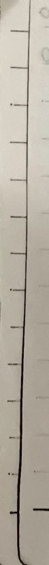
**Kirchhoff's Laws**
1. **Current:** $$ di = \frac{dq}{dt} = \frac{en\vec{v} \cdot d\vec{s}}{dt} = en\vec{v} \cdot d\vec{s} $$ $$ \vec{J} = en\vec{v} \quad \therefore i = \iint \vec{J} \cdot d\vec{s} $$
2. **Voltage:** $$ \varphi_A - \varphi_B = \frac{dU_{AB}}{dt} = \frac{1}{\partial q} \int_A^B \vec{F} \cdot d\vec{r} = \frac{1}{\partial q} \int_A^B dq \vec{E} \cdot d\vec{r} = \int_A^B \vec{E} \cdot d\vec{r} = U_{AB} $$
3. **Power:** $$ \vec{F} = dq \cdot \vec{E} \quad dw = Fvdt = dq \cdot E \cdot v \cdot dt $$ $$ P = \frac{dw}{dt} = dq \cdot E \cdot v = \frac{dq}{dt} \cdot E \cdot v \cdot dt = i(t) \cdot u(t) $$ In non-associated reference direction, $$ P(t) = -i(t) \cdot u(t) $$
4. **KCL:** $$ \oint \vec{J} \cdot d\vec{s} = \frac{dq_{net}}{dt} = 0 \quad \text{or} \quad \sum i = 0, \text{or} \quad \sum_{in} i = \sum_{out} i $$
5. **KVL:** $$ \oint \vec{E} \cdot d\vec{r} = 0, \quad U_{AB} = \int_A^B \vec{E} \cdot d\vec{r} \quad \text{or} \quad \sum u = 0, \text{or} \quad \sum_{down} u = \sum_{up} u $$
**Independent Sources:** - Voltage Source: The voltage at the terminals of the voltage source or the current flowing through the element of the voltage source is determined solely by its internal characteristics and is independent of the external circuit or connected elements. Examples: Battery, microphone. - Current Source: The current flowing through the terminals of the current source or the current flowing through the element of the current source is determined solely by its internal characteristics and is independent of the external circuit or connected elements. Examples: Solar cell.
**Controlled Sources:** - VCVS, VCCS, CCVS, CCCS (the second C stands for controlled) - There are two parts: the control terminal and the output terminal. Therefore, a two-terminal network can be described as follows: - $$ u_1 = g_{m} i_1 $$ - $$ u_2 = g_{m} i_2 $$ - $$ g_m: \text{transconductance} $$ - $$ r_m: \text{transresistance} $$ - $$ \beta: \text{transconductance ratio} $$
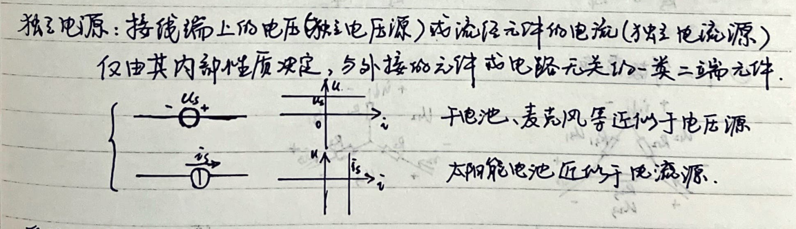
1. **Resistance Equivalent Transformation**
A two-terminal network without independent sources can be replaced by an equivalent resistance, \( R_{eq} = \frac{U}{I} \).
**① Series Resistors**
From \( U = U_1 + ... + U_n \), \( U_k = R_k i \) we get: $$ U = (R_1 + ... + R_n) i $$ Therefore, \( R_{eq} = \frac{U}{I} = R_1 + ... + R_n \).
**② Parallel Resistors**
From \( i = i_1 + ... + i_n \), \( i_k = \frac{U_k}{R_k} = \frac{U}{R_k} \) we get: $$ i = (\frac{1}{R_1} + ... + \frac{1}{R_n}) U $$ Therefore, \( R_{eq} = \frac{U}{I} = (\frac{1}{R_1} + ... + \frac{1}{R_n})^{-1} \), i.e., \( G_{eq} = G_1 + ... + G_n \).
**③ Balanced Bridge**
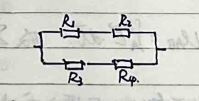
**④ Y-Δ Equivalent Transformation**
[DIAGRAM 2]
In Δ form: $$ i_1 = \frac{U_{12}}{R_{12}} - \frac{U_{21}}{R_{21}} $$ $$ i_2 = \frac{U_{23}}{R_{23}} - \frac{U_{12}}{R_{12}} $$ $$ i_3 = \frac{U_{31}}{R_{31}} - \frac{U_{23}}{R_{23}} $$
In Y form: $$ U_{12} = R_1 i_1 - R_2 i_2 $$ $$ U_{23} = R_2 i_2 - R_3 i_3 $$ $$ U_{31} = R_3 i_3 - R_1 i_1 $$
$$ i_1 + i_2 + i_3 = 0 $$ $$ U_{12} + U_{23} + U_{31} = 0 $$
In $\Delta$ form, we have: $$ u_{12} = \frac{R_{12} R_{31} i_1 - R_{31} R_{12} i_2}{R_{12} + R_{23} + R_{31}} $$ $$ u_{23} = \frac{R_{23} R_{12} i_2 - R_{31} R_{23} i_3}{R_{12} + R_{23} + R_{31}} $$ $$ u_{31} = \frac{R_{31} R_{23} i_3 - R_{12} R_{31} i_1}{R_{12} + R_{23} + R_{31}} $$
Comparing with the Y form, we get: $$ R_{1} = \frac{R_{12} R_{31}}{R_{12} + R_{23} + R_{31}} $$ $$ R_{2} = \frac{R_{23} R_{12}}{R_{12} + R_{23} + R_{31}} $$ $$ R_{3} = \frac{R_{31} R_{23}}{R_{12} + R_{23} + R_{31}} $$
$$ R_{12} = R_1 + R_2 + \frac{R_1 R_2}{R_3} $$ $$ R_{23} = R_2 + R_3 + \frac{R_2 R_3}{R_1} $$ $$ R_{31} = R_3 + R_1 + \frac{R_3 R_1}{R_2} $$
5. Equivalent resistance of a two-terminal network with resistors and controlled sources. For such a network, if the controlled source is in the network, it can be equivalent to a resistor. (The terminal voltage-current relationship is the same). Using current or voltage to find the terminal voltage and current in a linear relationship can find the equivalent resistance.
3. Power supply equivalent transformation. 1. Ideal independent voltage source in series (voltage source) $$ u_{eq} = u_{s1} + \ldots + u_{sn} $$
2. Ideal independent current source in parallel (current source) $$ i_{eq} = i_{s1} + \ldots + i_{sn} $$
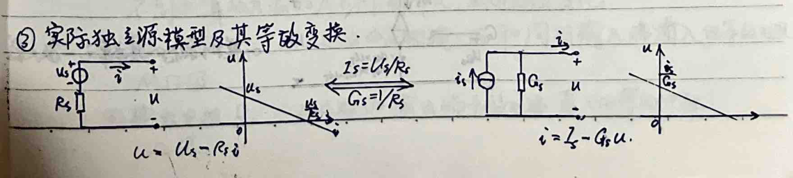
4. Metal-Oxide-Semiconductor-Field-Effect-Transistor
Applications: - Digital systems: logic gates. - Analog systems: amplifiers.
Model: Three-terminal device, such as N-channel enhancement-type MOSFET: - G: Gate (always open) - S: Source - D: Drain
Electrical characteristics: Ugs affects the I-V characteristics between D and S. 1) When 0 ≤ Ugs ≤ U_T, D-S is open. 2) When Ugs > U_T, Uds < Ugs - U_T, then the switch closes. D-S appears as a resistor, known as the MOSFET switch-resistor model. 3) When Ugs > U_T, Uds > Ugs - U_T, then the switch closes. D-S appears as a voltage-controlled current source, id = K(Ugs - U_T)^2, known as the switch-current-source model.
No. Date.
$$\begin{array}{c|c} U_{DS}/V & I_{DS}/A \\ \hline 0 & 0 \\ 2V & \frac{K}{2} \\ 3V & 2 \\ \end{array}$$
$$U_{GS}=3V$$
$$U_{GS}=2V$$
$$U_{GS}=0V$$
$$U_{DS}/V$$
When \(U_{GS}=U_{IN}\), when \(0 < U_{IN} < U_{T}\), ① \(I_{DS}=0\), D-S does not conduct.
When \(U_{GS}=U_{IN}\) and \(U_{IN}=0\), \(I_{DS}=0\), D-S does not conduct.
When \(U_{IN} > U_{T}\), when \(U_{IN} > 0\), ② then \(U_{DS} < U_{IN}\) when D-S is a resistor.
Resistance is \(R_{DS} = \frac{U_{DS}}{I_{DS}} = \frac{U_{IN} - U_{T}}{\frac{K}{2}(U_{IN} - U_{T})^2} = \frac{2}{K(U_{IN} - U_{T})} = \frac{2}{K} \cdot \frac{1}{U_{IN} - U_{T}}\)
③ When \(U_{DS} > U_{IN}\), D-S is a voltage-controlled current source.
$$I_{DS} = \frac{K}{2} \cdot (U_{IN} - U_{T})^2$$
5. Operational Amplifier.
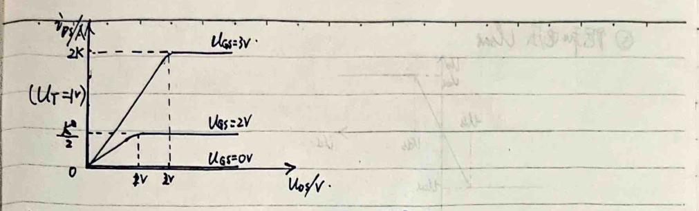
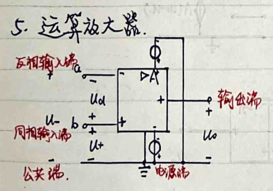
Parameters: ① Supply voltage: \(V_{CC}\) ② Open-loop gain (open-loop gain): \(A\)
$$U_{O} = A(U_{+} - U_{-}) = AU_{d}$$
\(U_{d}\) is the basic function of the operational amplifier, which is to amplify. The different operational amplifiers have different A values, which are very large and change with temperature.
③ Input resistance \(R_{i}\): The equivalent resistance of the input terminal of the operational amplifier from the inverting input terminal and the non-inverting input terminal. \(M\Omega\) level.
④ Output resistance \(R_{o}\): The equivalent resistance of the output terminal of the operational amplifier and the ground terminal. \(\Omega\) level.
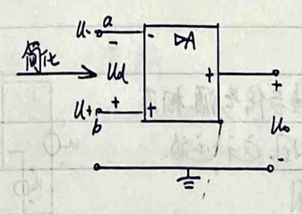
**⑤ Saturation Voltage Udsat**
In the input Uds in (-Udsat ~ +Udsat) range, Uo = Au1 holds, this is the linear region. In the input Uds in (-∞ -Udsat) V(+Udsat, +∞) range, the output of the amplifier is -Udsat or +Udsat. This is equivalent to a voltage source externally, this is the positive (negative) saturation region.
**DC or low-frequency operational amplifier circuit model. (From the ideal perspective, Ri→∞, Ro→0)**
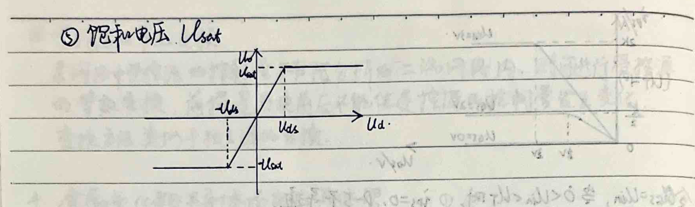
Simplification: $$ u_{o} = A(u_{+} - u_{-}) $$
**Connect the operational amplifier directly to the signal source:**
Based on the following reasons, this operational amplifier circuit is not practical: 1. The difference between u+ and u- is too small (otherwise it's not in the linear region), the input and output voltage difference is too large. 2. The open-loop gain of different operational amplifiers is very different, it is difficult to match them in a circuit. 3. The open-loop gain of the operational amplifier changes with temperature, this cannot maintain the normal operation of the circuit.
To solve the above problems, it is necessary to feedback part of the output back to the input (feedback to the inverting input terminal: negative feedback; feedback to the non-inverting input terminal: positive feedback).
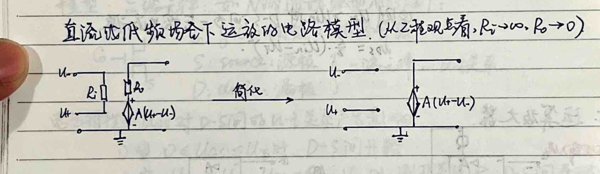
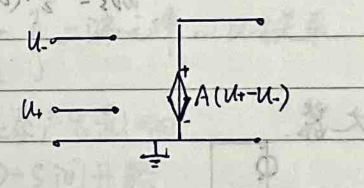
Ideal Op-Amp:
# Negative Feedback Op-Amp Circuit: $$ \begin{aligned} & u_{o} = -A u_{i} \\ & i = \frac{u_{i} - u_{o}}{R_{1}} \\ & i = \frac{u_{i} - u_{o}}{R_{f}} \rightarrow \frac{u_{o}}{u_{i}} = -\frac{A R_{f}}{(R_{f} + R_{1}) + A R_{1}} \\ & -A u_{i} = u_{o} \end{aligned} $$
Since R1 and Rf are in the kΩ range, A is in the range of 10^5 to 10^8, so uo is approximately -Rf/R1 and independent of A.
1) Since -U_sat < uo < U_sat, -U_sat < uo/R1 < U_sat. The op-amp input voltage requirements are much lower than without feedback.
2) Input voltage u_i and output voltage u_o are in the same order of magnitude (same).
3) A is temperature-independent and needs to be sufficiently large.
# Ideal Op-Amp: Properties: 1. Input resistance R_in is ∞ → i+ = i- = 0: virtual short 2. Output resistance R_out is 0 → uo = A(u+ - u-) + uRo(=0) 3. Open-loop gain A is ∞ → ∞(u+ - u-) = uo ∈ [-U_sat, +U_sat]. u+ = u-: virtual short.
Example: 1. Voltage follower. 2. Inverting amplifier.
$$ \frac{u_{o}}{R_{1}} = -\frac{R_{f}}{R_{1}} u_{i} $$
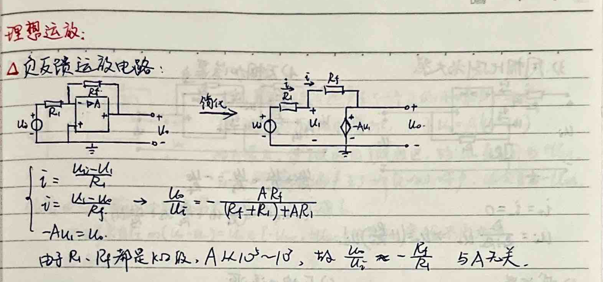
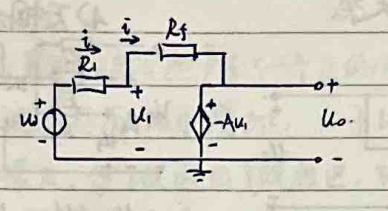
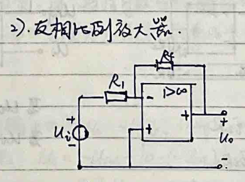
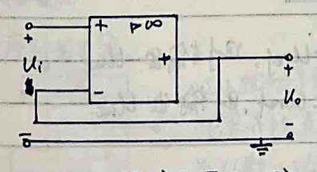
3) Common-Mode Amplifier
$$ u_{o} = u_{1} + u_{2} + u_{3} = -\frac{R_{1}}{R_{2}} u_{1} $$
$$ i_{+} = i_{-} = 0 $$
$$ u_{1} = \frac{R_{2}}{R_{1} + R_{2}} u_{o} \Rightarrow u_{o} = (1 + \frac{R_{2}}{R_{1}}) u_{1} $$
4) Differential Amplifier
$$ u_{o} = -\left(\frac{R_{1}}{R_{1}} u_{1} + \frac{R_{2}}{R_{2}} u_{2} + \frac{R_{3}}{R_{3}} u_{3}\right) $$
5) Subtractor
$$ u_{o} = -\frac{R_{1}}{R_{1} + R_{2}} u_{1} $$
6) Voltage-Controlled Current Source
$$ u_{o} = -\frac{R_{1}}{R_{1} + R_{2}} u_{1} $$
7) Negative Resistance
$$ u_{1} = u_{2} $$
$$ u_{2} = -\frac{R_{1}}{R_{2}} u_{1} $$
$$ u_{1} = u_{2} $$
8) Voltage Comparator (No Feedback)
$$ u_{o} > u_{ref} \text{, then output } -u_{in} $$
$$ u_{o} < u_{ref} \text{, then output } u_{sat} $$
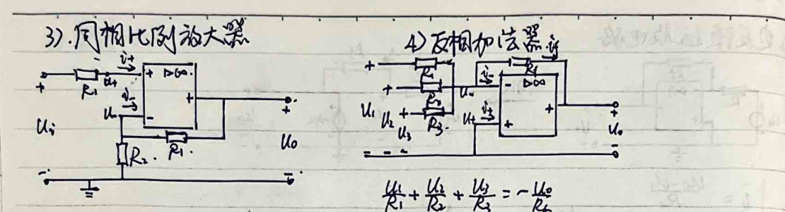
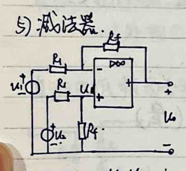
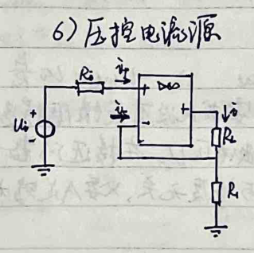
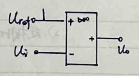
Positive and Negative Feedback Operational Amplifier Circuit
Assume a small positive noise is suddenly generated at the output end. Thus, the voltage at the + input increases slightly. Since \( u_+ = A(u_+ - u_-) \), and \( A \) is very large, \( u_+ \) exceeds the linear region. Hence, \( u_+ \) directly becomes \( +U_{sat} \). Conversely, if a small negative noise is generated at the output end, \( u_- \) will become \( -U_{sat} \).
Property ①: Due to the input resistance being infinitely large, the virtual short circuit still holds.
Property ②: Since there is no \( u_+ = u_- \in [-U_{sat}, +U_{sat}] \) relationship, the virtual short circuit no longer holds.
Property ③: \( A \to \infty \)
1. Feedback Comparator
Assume a noise is generated. The operational amplifier's output becomes \( +U_{sat} \). According to the virtual short circuit, \( u_+ = \frac{R_1}{R_1 + R_2} U_{sat} \). When \( u_i < \frac{R_1}{R_1 + R_2} U_{sat} \), the operational amplifier's output is \( U_{sat} \). When \( u_i \) increases to exceed \( \frac{R_1}{R_1 + R_2} U_{sat} \), due to the positive feedback, the output becomes \( -U_{sat} \). According to the virtual short circuit, \( u_+ = -\frac{R_2}{R_1 + R_2} U_{sat} \). Once \( u_i \) decreases to below \( -\frac{R_2}{R_1 + R_2} U_{sat} \), the output reverts to \( -U_{sat} \).
The feedback comparator increases to \( \frac{R_1}{R_1 + R_2} U_{sat} \) or decreases to \( -\frac{R_2}{R_1 + R_2} U_{sat} \). The output changes. This characteristic can be used in signal detection to some extent (within the feedback width) to eliminate noise interference.
2. Pulse Sequence Generator
Assume a small disturbance causes the output voltage \( u_o = -U_{sat} \). When \( u_+ = -0.5 U_{sat} \), the capacitor starts charging. The voltage across the capacitor \( u_C \) is given by: $$ u_C = -U_{sat} + [0.5U_{sat} - (-U_{sat})] e^{-\frac{t}{RC}} $$
When \( u_C \) reaches \( -0.5 U_{sat} \), \( u_0 \) jumps to \( U_{sat} \). At this point, \( u_+ = 0.5 U_{sat} \). The capacitor starts discharging: $$ u_C = U_{sat} + [0.5U_{sat} - (-U_{sat})] e^{-\frac{t}{RC}} $$
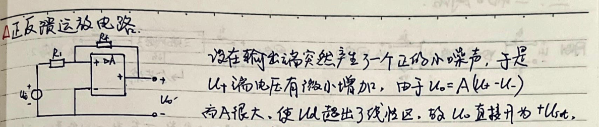
Three-Port Network
# Table 1: | Parameters | Conductance Parameters | Resistance Parameters | Transmission Parameters | Mixed Parameters | |------------|------------------------|-----------------------|-------------------------|------------------| | **Equations** | $$\left(\begin{array}{l}I_{1} \\ I_{2}\end{array}\right)=\left(\begin{array}{cc}G_{11} & G_{12} \\ G_{21} & G_{22}\end{array}\right)\left(\begin{array}{l}U_{1} \\ U_{2}\end{array}\right)$$ | $$\left(\begin{array}{l}U_{1} \\ U_{2}\end{array}\right)=\left(\begin{array}{cc}R_{11} & R_{12} \\ R_{21} & R_{22}\end{array}\right)\left(\begin{array}{l}I_{1} \\ I_{2}\end{array}\right)$$ | $$\left(\begin{array}{l}U_{1} \\ I_{1}\end{array}\right)=\left(\begin{array}{cc}T_{11} & T_{12} \\ T_{21} & T_{22}\end{array}\right)\left(\begin{array}{l}U_{2} \\ -I_{2}\end{array}\right)$$ | $$\left(\begin{array}{l}U_{1} \\ I_{2}\end{array}\right)=\left(\begin{array}{cc}H_{11} & H_{12} \\ H_{21} & H_{22}\end{array}\right)\left(\begin{array}{l}I_{1} \\ U_{2}\end{array}\right)$$ | | **Symmetry Conditions** | $$G_{12}=G_{21}$$ | $$R_{12}=R_{21}$$ | $$T_{11}T_{22}-T_{12}T_{21}=1$$ | $$H_{12}=-H_{21}$$ | | **Symmetry Conditions** | $$G_{11}=G_{22}$$ | $$R_{11}=R_{22}$$ | $$T_{11}=T_{22}$$ | $$H_{11}H_{22}-H_{12}H_{21}=1$$ |
# Table 2: | Parameters | Conductance Parameters | Resistance Parameters | Transmission Parameters | Mixed Parameters | |------------|------------------------|-----------------------|-------------------------|------------------| | **Resistance Parameters** | $$\frac{R_{22}}{R_{21}}-\frac{R_{21}}{R_{22}}$$ | $$\frac{T_{12}}{T_{11}}-\frac{\Delta T}{T_{11}}$$ | $$\frac{1}{T_{21}}$$ | $$\frac{H_{12}}{H_{22}}$$ | | **Conductance Parameters** | $$\frac{R_{22}}{R_{21}}-\frac{R_{21}}{R_{22}}$$ | $$\frac{T_{12}}{T_{11}}-\frac{\Delta T}{T_{11}}$$ | $$\frac{1}{T_{21}}$$ | $$\frac{H_{12}}{H_{22}}$$ | | **Transmission Parameters** | $$\frac{1}{R_{21}}$$ | $$\frac{R_{22}}{R_{21}}-\frac{R_{21}}{R_{22}}$$ | $$\frac{T_{12}}{T_{11}}-\frac{\Delta T}{T_{11}}$$ | $$\frac{1}{H_{21}}$$ | | **Mixed Parameters** | $$\frac{1}{R_{21}}$$ | $$\frac{R_{22}}{R_{21}}-\frac{R_{21}}{R_{22}}$$ | $$\frac{T_{12}}{T_{11}}-\frac{\Delta T}{T_{11}}$$ | $$\frac{1}{H_{21}}$$ |
# From R Parameters and G Parameters Viewpoint: $$\left\{\begin{array}{l}i_{1}=\left(G_{11}+G_{12}\right)u_{1}-G_{12}u_{2} \\ u_{1}=\left(R_{1}+R_{2}\right)i_{1}+R_{3}i_{2}\end{array}\right.$$
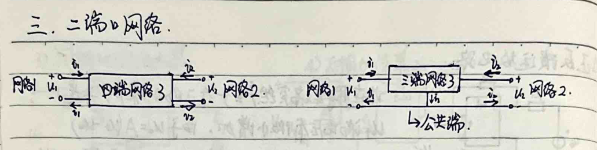
The page contains handwritten notes on electrical circuits, specifically focusing on negative resistance circuits, bipolar junction transistors (BJTs), and equivalent circuits for two-terminal networks. Here's a breakdown of the content:
---
Negative Resistance Circuit Analysis
Given the circuit shown in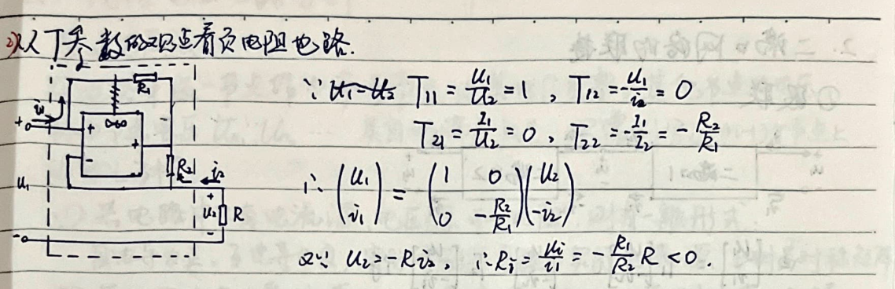
$$ T_{11} = \frac{U_1}{U_2} = 1, \quad T_{12} = \frac{U_1}{I_2} = 0 $$
$$ T_{21} = \frac{I_1}{U_2} = 0, \quad T_{22} = \frac{I_1}{I_2} = -\frac{R_2}{R_1} $$
From these, we can write the voltage and current relationships:
$$ \begin{pmatrix} U_1 \\ I_1 \end{pmatrix} = \begin{pmatrix} 1 & 0 \\ 0 & -\frac{R_2}{R_1} \end{pmatrix} \begin{pmatrix} U_2 \\ I_2 \end{pmatrix} $$
Given that \(U_2 = -R_2 I_2\), we find:
$$ R_1 = \frac{U_1}{I_1} = -\frac{R_1}{R_2} R < 0 $$
---
Bipolar Junction Transistor (BJT) Circuit Symbols and Small-Signal Circuit Model
The circuit symbol for a BJT is shown in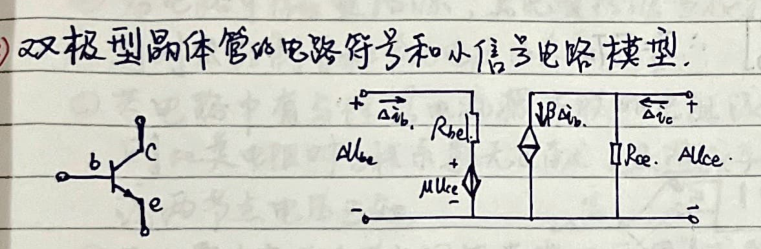
$$ \begin{pmatrix} \Delta U_{be} \\ \Delta I_{c} \end{pmatrix} = \begin{pmatrix} R_{be} & \mu \\ \beta & \frac{1}{R_{ce}} \end{pmatrix} \begin{pmatrix} \Delta I_{b} \\ \Delta U_{ce} \end{pmatrix} $$
---
Equivalent Circuits for Two-Terminal Networks
The equivalent circuits for a two-terminal network are shown in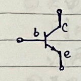
$$ R_{11} = \frac{U_1}{I_1} = R_a + R_b $$
$$ G_{11} = \frac{I_1}{U_1} = G_a + G_b $$
$$ T_{11} = \frac{U_1}{I_2} = R_a + R_b $$
$$ R_{12} = \frac{U_1}{I_2} = R_b $$
$$ G_{12} = \frac{I_1}{U_2} = -G_b $$
$$ T_{12} = -\frac{U_1}{I_2} = \frac{R_a R_b + R_b R_c + R_c R_a}{R_2} $$
$$ R_{21} = \frac{U_2}{I_1} = R_b $$
$$ G_{21} = \frac{I_2}{U_1} = -G_b $$
$$ T_{21} = \frac{I_2}{U_1} = \frac{1}{R_2} $$
$$ R_{22} = \frac{U_2}{I_2} = R_b + R_c $$
$$ G_{22} = \frac{I_2}{U_2} = G_b + G_c $$
$$ T_{22} = -\frac{I_2}{I_2} = 1 + \frac{R_2}{R_1} $$
The resistances and conductances can be expressed as:
$$ \begin{cases} R_b = R_{12} = R_{21} \\ R_a = R_{11} - R_{12} \\ R_c = R_{22} - R_{21} \end{cases} $$
$$ \begin{cases} G_{1b} = -G_{12} = -G_{21} \\ G_{a} = G_{11} + G_{12} \\ G_{c} = G_{22} + G_{21} \end{cases} $$
$$ \begin{cases} R_1 = \frac{I_1}{T_{21}} \\ R_2 = \frac{1}{T_{21}} \end{cases} $$
2. Two-Port Network Connections
1. Series Connection
$$ \begin{aligned} & \text{By } [u_1] = T_1 [-i_1], \quad [u_2] = T_2 [-i_2] \\ & \therefore [u_1] = T_1 T_2 [-i_2] \quad \therefore T = T_1 T_2 \end{aligned} $$
2. Parallel Connection
$$ \begin{aligned} & \text{By } u_1 = u_1' = u_1'', \quad u_2 = u_2' = u_2'' \\ & \therefore i_1 = i_1' + i_1'', \quad i_2 = i_2' + i_2'' \end{aligned} $$
$$ \begin{aligned} & \therefore [u] = [u'] + [u''] = (G' + G'') [u] \\ & \therefore G = G' + G'' \end{aligned} $$
3. Parallel Connection
$$ \begin{aligned} & \text{Since the two ports have a common terminal, connecting them in parallel does not violate the two-port condition.} \\ & \therefore R = R' + R'' \end{aligned} $$
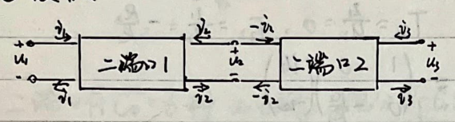
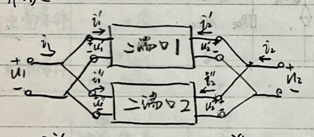
Linear Resistive Circuit Analysis
# 1. Node Voltage Method: In the circuit, select one node as the reference node, setting its voltage to zero. The voltage of other nodes is called the node voltage \(U_n\), \(U_m\), etc. The circuit automatically satisfies Kirchhoff's Current Law (KCL). Only write the (n-1) KCL equations at the nodes.
1. If the circuit only contains current sources, voltage sources, and resistors, then there is a general form: - Mutual conductance is positive, mutual resistance is negative. Actual voltage sources are converted to actual current sources. This is a symmetrical circuit. 2. If the circuit contains dependent sources, first convert the dependent source into an independent source, write the node equation, and then write the control quantity and node voltage relationship equation. 3. If the circuit contains resistors in series with ideal current sources or resistors in parallel with ideal voltage sources, then the resistance in the equation has no effect, and it causes the current at a certain node to be known or the voltage at two nodes to be known. 4. If there are two nodes connected by a pure voltage source (or dependent voltage source), you can write the node equation by selecting the reference node at the negative terminal of the voltage source, adding the voltage source branch current, and adding the voltage source into the generalized node. (When using the generalized node method, the concept of "mutual conductance" is expanded)
# 2. Mesh Current Method: In the circuit mesh, assume the mesh current, making the actual current on each branch the algebraic sum of the currents in all meshes. The mesh current automatically satisfies Kirchhoff's Current Law (KCL). Only write the (b-n+1) mesh KCL equations.
1. If the circuit only contains current sources, voltage sources, and resistors, then there is a general form: - The currents in the two meshes are the same when they are positive, and opposite when they are negative. The voltage source's voltage direction is opposite to the mesh current (parallel) when it is positive. (Compare with the node voltage method, the current flowing into the node is positive). 2. If the circuit contains dependent sources, treat them as independent sources and write the equation, and then find the relationship between the control quantity and the mesh current. 3. If there are current sources in parallel with resistors, convert them to voltage sources. If there are resistors in parallel with ideal voltage sources, the current source and the resistor in series with the ideal voltage source are not considered.
4. Regardless of whether there is a resistor in the common branch of the two loops, as long as there is a current source, it can be used. - When selecting a loop, ensure the current source is not part of any loop. - Increase the current source's voltage. - Define the generalized mesh (with equations of neighboring meshes and its own KVL constraints).
3. Superposition Theorem The response (current or voltage between two points in the circuit) and the excitation (independent power source) satisfy superposition. Since the branch voltage and branch current can be expressed linearly in terms of the branch voltage, the linear resistive circuit's response and excitation satisfy superposition. Note: When a controlled source is in the circuit, the controlled relationship remains unchanged. The effect of the controlled source is only reflected in the circuit containing the independent source, not in the superposition. - Voltage sources not in use are set to zero → short circuit - Current sources not in use are set to zero → open circuit
4. Homogeneity Theorem The response and excitation satisfy homogeneity (linear equations are linear). When all independent sources change by k times, the response also changes by k times (including controlled sources).
5. Replacement Theorem Assuming ab contains an independent source and a resistor. The voltage u = u0 - R0i. The current i = u0 / R0. The voltage u = R0i. The current i = u0 / R0. The voltage u = u0 - R0i. The current i = u0 / R0. The voltage u = R0i. The current i = u0 / R0. The voltage u = u0 - R0i. The current i = u0 / R0. The voltage u = R0i. The current i = u0 / R0. The voltage u = u0 - R0i. The current i = u0 / R0. The voltage u = R0i. The current i = u0 / R0. The voltage u = u0 - R0i. The current i = u0 / R0. The voltage u = R0i. The current i = u0 / R0. The voltage u = u0 - R0i. The current i = u0 / R0. The voltage u = R0i. The current i = u0 / R0. The voltage u = u0 - R0i. The current i = u0 / R0. The voltage u = R0i. The current i = u0 / R0. The voltage u = u0 - R0i. The current i = u0 / R0. The voltage u = R0i. The current i = u0 / R0. The voltage u = u0 - R0i. The current i = u0 / R0. The voltage u = R0i. The current i = u0 / R0. The voltage u = u0 - R0i. The current i = u0 / R0. The voltage u = R0i. The current i = u0 / R0. The voltage u = u0 - R0i. The current i = u0 / R0. The voltage u = R0i. The current i = u0 / R0. The voltage u = u0 - R0i. The current i = u0 / R0. The voltage u = R0i. The current i = u0 / R0. The voltage u = u0 - R0i. The current i = u0 / R0. The voltage u = R0i. The current i = u0 / R0. The voltage u = u0 - R0i. The current i = u0 / R0. The voltage u = R0i. The current i = u0 / R0. The voltage u = u0 - R0i. The current i = u0 / R0. The voltage u = R0i. The current i = u0 / R0. The voltage u = u0 - R0i. The current i = u0 / R0. The voltage u = R0i. The current i = u0 / R0. The voltage u = u0 - R0i. The current i = u0 / R0. The voltage u = R0i. The current i = u0 / R0. The voltage u = u0 - R0i. The current i = u0 / R0. The voltage u = R0i. The current i = u0 / R0. The voltage u = u0 - R0i. The current i = u0 / R0. The voltage u = R0i. The current i = u0 / R0. The voltage u = u0 - R0i. The current i = u0 / R0. The voltage u = R0i. The current i = u0 / R0. The voltage u = u0 - R0i. The current i = u0 / R0. The voltage u = R0i. The current i = u0 / R0. The voltage u = u0 - R0i. The current i = u0 / R0. The voltage u = R0i. The current i = u0 / R0. The voltage u = u0 - R0i. The current i = u0 / R0. The voltage u = R0i. The current i = u0 / R0. The voltage u = u0 - R0i. The current i = u0 / R0. The voltage u = R0i. The current i = u0 / R0. The voltage u = u0 - R0i. The current i = u0 / R0. The voltage u = R0i. The current i = u0 / R0. The voltage u = u0 - R0i. The current i = u0 / R0. The voltage u = R0i. The current i
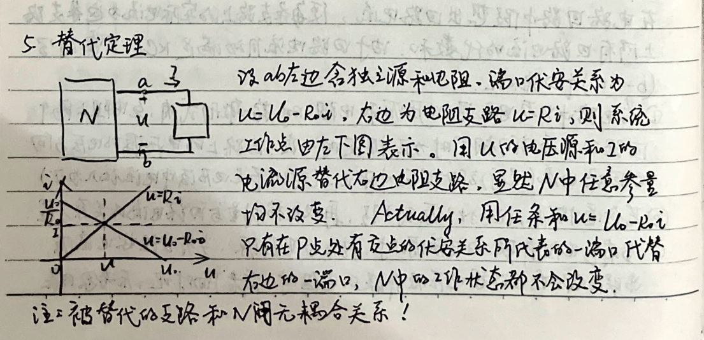
6. Thevenin's Theorem: For any circuit composed of linear resistors, linear controlled sources, and independent voltage sources, the circuit can be simplified to a voltage source in series with a resistor. $$U_{0}$$ is the open-circuit voltage. The equivalent resistance is the total resistance of the circuit when all independent sources are set to zero. (1) The open-circuit voltage can be calculated using the voltage drop method, loop current method, superposition theorem, and simple resistance circuit analysis methods. (2) The resistance can be calculated using the equivalent resistance method. (3) The controlled source's controlled quantity in the circuit cannot be equivalent to $$U_{0}$$ and $$R_{i}$$ when the controlled quantity is outside the circuit. (4) The resistance can be negative. (5) As long as the circuit is linearly equivalent, it can be transformed. Norton's Theorem: $$I_{0}$$, $$G_{i}$$ ↔ $$U_{0}$$, $$R_{i}$$
7. Kirchhoff's Current Law: For any network N and $$\hat{N}$$ with the same topology, if the reference directions of the branches are the same, and the voltages and currents of the branches are taken as the same reference direction, then: $$\sum_{k=1}^{n} u_{k} i_{k} = 0$$
Proof: Suppose k branches are connected between nodes α and β. $$U_{k}$$ = $$U_{\alpha}$$ - $$U_{\beta}$$ $$U_{k}$$ = $$U_{\alpha}$$ $$i_{\alpha}$$ - $$U_{\beta}$$ $$i_{\beta}$$ = $$U_{\alpha}$$ $$i_{\alpha}$$ + $$U_{\beta}$$ $$i_{\beta}$$ Where $$i_{\alpha}$$ represents the current flowing out of node α, and $$i_{\beta}$$ represents the current flowing out of node β. The sum of the currents flowing through all branches in the circuit is zero. $$U_{\alpha}$$ $$i_{\alpha}$$ + $$U_{\beta}$$ $$i_{\beta}$$ + ... + $$U_{k}$$ $$i_{k}$$ = 0
The text and formulas extracted from the handwritten note are as follows:
---
The text at the top of the page discusses the transformation of a circuit's voltage into nodal voltage and the subsequent combination of currents at the same node. It leads to the following expression:
$$\sum_{k=1}^{k} u_{n} \hat{I}_{n} = u_{n,1} \sum_{k=1}^{k} \hat{I}_{n} + ... + u_{n,k} \sum_{k=1}^{k} \hat{I}_{n} + ... + u_{n,m} \sum_{k=1}^{k} \hat{I}_{n}$$
From this, it is deduced that:
$$\sum_{k=1}^{k} \hat{I}_{n} = 0$$
Thus,
$$\sum_{k=1}^{k} u_{n} \hat{I}_{n} = 0$$
---
The section titled "8. Ohm's Law" discusses the relationship between voltage and current in a circuit. It presents two forms of Ohm's Law:
1. Form 1: $$\frac{u_{1}(t)}{u_{2}(t)} = \frac{i_{1}(t)}{i_{2}(t)}$$ or $$u_{1}(t) i_{2}(t) = u_{2}(t) i_{1}(t)$$
The proof provided states that in the left diagram, there are b branches, and the circuit within the box has b-2 branches. The voltage and current on these branches are denoted as u_k(t) and i_k(t) for k=3, ..., b. In the right diagram, the corresponding voltage and current are denoted as u_k(t) and i_k(t) for k=3, ..., b. According to Kirchhoff's Current Law:
$$\left\{\begin{array}{l} u_{1}(t) i_{1}(t) + 0 + \sum_{k=3}^{b} u_{k}(t) i_{k}(t) = 0 \\ 0 + u_{2}(t) i_{2}(t) + \sum_{k=3}^{b} u_{k}(t) i_{k}(t) = 0 \end{array}\right.$$
Since the left and right diagrams represent the same circuit, it follows that:
$$u_{1}(t) i_{1}(t) = i_{1}(t) R, u_{2}(t) i_{2}(t) = i_{2}(t) u_{2}(t)$$
Thus,
$$\sum_{k=3}^{b} u_{k}(t) i_{k}(t) = \sum_{k=3}^{b} u_{k}(t) i_{k}(t)$$
Therefore,
$$u_{1}(t) i_{1}(t) = u_{2}(t) i_{2}(t)$$
This implies:
$$G_{21} = \left.\frac{u_{2}(t)}{u_{1}(t)}\right|_{i_{2}=0} = G_{12} = \left.\frac{i_{1}(t)}{u_{1}(t)}\right|_{i_{1}=0}$$
This is the necessary and sufficient condition for two-terminal mutual conductance.
---
The section concludes with the following:
$$\frac{u_{1}(t)}{u_{2}(t)} = \frac{i_{1}(t)}{i_{2}(t)} \quad \Leftrightarrow \quad i_{1}(t) u_{2}(t) = i_{2}(t) u_{1}(t) \quad \Leftrightarrow \quad R_{21} = R_{12}$$
---
The text at the bottom of the page discusses the relationship between voltage and current in a circuit, specifically in the context of mutual conductance. It states that the mutual conductance G_{21} is equal to the mutual conductance G_{12}, and that this is the necessary and sufficient condition for two-terminal mutual conductance. The final equation shows that the mutual conductance is equal to the reciprocal of the resistance between the two terminals.
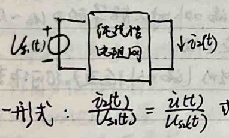
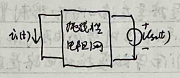
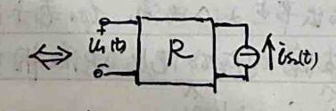
1. When performing mesh analysis, the relative direction of current and voltage must remain consistent (either all consistent or all opposite).
2. Combine the superposition theorem and mesh theorem to apply to multiple voltage sources (current sources) and only solve the current (voltage) of a branch when it is convenient.
Circuit Theory - Duality Principle
Graph: {nodes, branches}; Directed graph: all branch currents have a reference direction (voltage is associated).
Connected graph: all nodes and branches are connected; Subgraph: G' (nodes, branches) ⊂ G (nodes, branches)
Tree: connected, includes all nodes, no loops. (Of course, tree T is a subgraph of G).
Tree branches: branches in T; Branches: branches not in T.
It is easy to know that a graph with n nodes needs to add n-1 branches to form a tree.
In a graph G with n nodes and b branches, the tree branches: n-1, the loop branches: b-(n-1)
1. **Adjacency Matrix A**
Use an n×b matrix to represent the branch-node adjacency relationship. Let $$a_{ij} = \begin{cases} 1 & \text{branch } j \text{ is connected to node } i, branch leaves node} \\ -1 & \text{branch } j \text{ is connected to node } i, branch points to node} \\ 0 & \text{branch } j \text{ is not related to node } i. \end{cases}$$
The augmented adjacency matrix Aa ∈ Mn×b. It is known that Aa has n-1 linearly independent rows (nodes).
We can delete one row to form an (n-1)×b adjacency matrix A, deleting the row (node) as the reference node.
Let branch currents $\vec{I} = (i_1, ..., i_b)^T$, branch voltages $\vec{U} = (u_1, ..., u_b)^T$,
Node voltages $\vec{U}_n = (u_{n1}, ..., u_{nn})^T$, u_{nx} = 0 (reference node)
Then Aa$\vec{I}$ = 0 $\Rightarrow$ A$\vec{I}$ = 0
And $\vec{U}$ = A^T$\vec{U}_n$ $\Rightarrow$ Rank A = n-1. In a loop network with n nodes and b branches, the number of independent KCL equations is n-1.
The note discusses network theory, specifically focusing on loops and branches in a network. It defines a loop as a closed path in the network, and a branch as a line segment between two nodes. The note explains that each loop must contain at least one branch, and each branch must be part of at least one loop. It also mentions that each loop must contain at least two branches. The rank of the fundamental loop matrix is defined as the number of non-zero elements in each row, which is equal to the number of branches minus the number of nodes plus one. The note also discusses the relationship between branch currents and voltages, and how to derive the loop equations from the branch equations. The final part of the note discusses the relationship between the loop matrix and the branch matrix, and how to derive the loop equations from the branch equations.
Network Theory
# Terminology - **Node**: Branch - **Mesh**: Loop - **Open Circuit**: Short Circuit - **Voltage**: Current - **Current**: Voltage
# Variables - **Node Voltage**: Mesh Current - **Mesh Voltage**: Branch Current
# Components - **Resistance R**: Conductance G - **Inductance L**: Capacitance C - **Voltage Source Us**: Current Source Is
# Connections - **Series**: Parallel - **Star (Y)**: Delta (Δ) - **Kirchhoff's Current Law (KCL)**: Kirchhoff's Voltage Law (KVL)
# Theorems - **Thevenin's Theorem**: Norton's Theorem - **Superposition**: Superposition Theorem
Nonlinear Resistance Circuit Analysis
**Definition:** \( u = f(i) \) or \( i = g(u) \)
**Example:** Diode: \( i = I_s (e^{\frac{u}{nV}} - 1) \)
**Properties:** 1. \( u-i \) relationship is non-linear and non-additive. 2. \( u-i \) relationship can be expanded in a Taylor series. Higher-order terms can be neglected (\( \geq 2 \)), then the small perturbations and their effects are linear. 3. May have multiple solutions or no solution.
1. **Direct Method** - **Voltage-Controlled Nonlinear Resistance - Node Voltage Method.** - **Current-Controlled Nonlinear Resistance - Mesh Current Method.**
2. **Graphical Method** - Element ends and load ends/branch ends meet at the intersection point.
3. **Segment Linearization Method** - "Assumption-Verification Method." - Example: Diode four models.
\[ i = I_s (e^{\frac{u}{nV}} - 1) \]
1. **Model 1.** \[ \begin{cases} i = 0, u < U_{sd} \\ u = U_{sd} + iR, i > 0. \end{cases} \]
2. **Model 2. (External resistance >> diode resistance).** \[ \begin{cases} i = 0, u < U_{sd} \\ u = U_{sd}, i > 0. \end{cases} \]
3. **Model 3. (U_{sd} is very small).** \[ \begin{cases} i = 0, u < 0 \\ u = R_i i, i > 0. \end{cases} \]
4. **Model 4. (Diode resistance and U_{sd} are very small).** \[ \begin{cases} i = 0, u < 0 \\ u = 0, i > 0. \end{cases} \]
From Model 1 to Model 4, the difference is getting larger and larger.
4. Small Signal Method
Background: Steady-state excitation: U_s; Small perturbation ΔU_s(t)
1. Only consider DC excitation, solve for the nonlinear resistor operating point (U_0, I_0)
2. For a nonlinear resistor u=f(i), using Taylor expansion, we have: u = u_0 + f'(i_0)(i - i_0) + f''(i_0)(i - i_0)^2 + ... ≈ u_0 + f'(i_0)(i - i_0)
Thus, Δu = ∂u/∂i * Δi (both are functions of time)
At this point, for the entire circuit, when only Δu excitation is present, it is linear. According to linear circuit analysis methods, by Δu, we can find ΔU, and then Δi = ∂u/∂u * Δu.
3. Superposition of two excitations: $$\left\{\begin{array}{l} u = u_0 + \Delta u(t) \\ i = I_0 + \Delta i(t) \end{array}\right.$$
5. Examples
1. Half-wave rectifier - using diode model 4: $$\overline{U} = \frac{1}{T} \int_0^T U_m \sin \omega t \, dt = \frac{U_m}{\pi}$$ Effective value U = $$\frac{1}{T} \int_0^T U_m^2 \sin^2 \omega t \, dt = \frac{U_m}{2\sqrt{2}}$$
2. Full-wave rectifier: $$\overline{U} = \frac{2}{\pi} \int_0^T U_m \sin \omega t \, dt = \frac{2U_m}{\pi}$$ Effective value U = $$\frac{2}{T} \int_0^T U_m^2 \sin^2 \omega t \, dt = \frac{U_m}{\sqrt{2}}$$
2. Clipping (U_S = U_m sin ωt):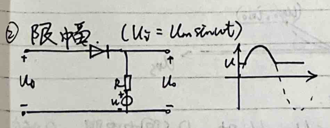
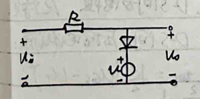
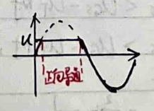
3. Comparator.
$$u_{1}^{+}$$ $$u_{n1}$$ $$u_{n1} \geq u$$ $$u_{1}^{+}$$ $$u_{n2}$$ $$u_{n2} \leq u$$
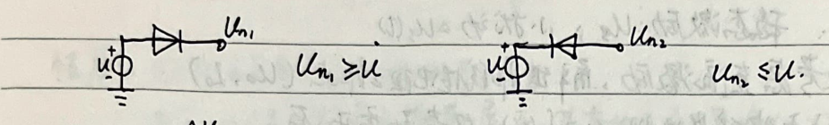
$$u_{1}^{+}$$ $$u_{n1}$$ $$u_{n1} \geq u$$ $$u_{1}^{+}$$ $$u_{n2}$$ $$u_{n2} \leq u$$
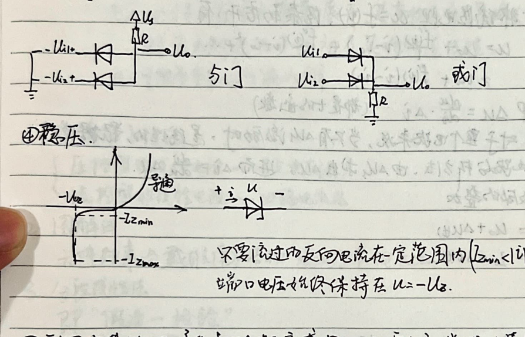
4. Voltage Regulation.
$$-U_{Z}$$ $$-I_{Z_{\text{min}}}$$ $$+U_{Z}$$ $$-I_{Z_{\text{max}}}$$
Do not allow reverse current in a certain range ($I_{Z_{\text{min}}} < |I| < I_{Z_{\text{max}}}$), the terminal voltage will always be at $U = -U_{Z}$.
5. Utilize non-linear resistance to produce new frequency components. Requires complex mathematical calculations.
6. Use MOSFET to form an amplifier and gate circuit.
2. Simplify MOSFET circuit model: $$i_{DS} = \frac{1}{2}U_{DS}^{2}$$
$$G_{n}$$ (N-channel enhancement type) $$S$$ $$U_{T}, K$$
$$U_{DS}$$
When $U_{GS} < U_{T}$, $i_{DS} = 0$, it is disconnected. When $U_{GS} > U_{T}$, it is conducting. At this point, $U_{DS} < U_{GS} - U_{T}$, D-S is a resistor. $R$ is constant. When $U_{DS} > U_{GS} - U_{T}$, D-S is a voltage-controlled current source: $$i_{DS} = \frac{1}{2}K(U_{GS} - U_{T})^{2}$$
$$R = \frac{U_{DS}}{i_{DS}} = \frac{U_{GS} - U_{T}}{\frac{1}{2}K(U_{GS} - U_{T})^{2}} = \frac{2}{K} \cdot \frac{1}{U_{GS} - U_{T}} = \frac{2}{K} \cdot \frac{1}{U_{DS}}$$
1. **Amplifier**
When Ugs is a small signal, according to the "one assumption, one verification" segmented linearity method, solve the operating point. When Ugs contains a small signal, ΔUgs is the output, ΔUgs is the input, then the amplification factor is:
$$\frac{\Delta Ugs}{\Delta Ugs} = \frac{\Delta Ugs}{\Delta Ugs} \cdot \frac{\Delta Ugs}{\Delta Ugs} = \frac{\Delta Ugs}{\Delta Ugs} \cdot \frac{\Delta Ugs}{\Delta Ugs} = k \cdot \frac{Ugs - Ugs}{Ugs - Ugs} \cdot R_L$$
Where R_L is the equivalent resistance seen from the DS terminal.
When Ugs = U + ΔU, the combination of the above two is called a common-source amplifier circuit.
2. **Gate Circuit**
According to the truth table (n+1 columns, 2^n+1 rows, n being the number of logical variables),
↓
Find all combinations of inputs that make the output true.
↓
Combine these combinations using logical operations to form a new unified logical expression.
↓
Simplify the logical expression.
↓
Use logical basic units to implement the expression:
Inverter: A → Y: U_i → U_o Y = A
Buffer: A → Y: A → Y: Y = A. Prevent signal attenuation during transmission.
NAND Gate: A → Y: Y = A̅B̅; NOR Gate: A → Y: Y = A̅ + B̅
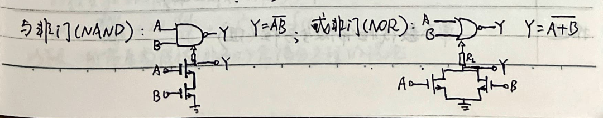
**Six. Dynamic Circuit Time Domain Analysis**
1. Dynamic Components (Energy Storage Components) (Linear Non-Time-Varying)
| Component | Capacitor | Inductor | |-----------|-----------|----------| | Charge Equation | q = Cu, i = dq/dt | Ψ = Li, u = dΨ/dt | | Memory and Continuity | u = 1/C ∫ dt + 1/L ∫ dt | i = 1/L ∫ dt + 1/C ∫ dt | | Relation | u + i = 0 | u - i = 0 | | Energy | w = ∫ pdt = ∫ u dt | w = ∫ pdt = ∫ u dt | | Actual (DC/AC) | u = C ∫ dt | u = L ∫ dt | | Series | 1/C = Σ 1/Ci | L = Σ Li | | Parallel | C = Σ Ci | 1/L = Σ 1/Li | | Switching | u(0+) = u(0-) + 1/C ∫ dt | i(0+) = i(0-) + 1/L ∫ dt | | High Frequency Effects | Capacitive Reactance, MOSFET Gate Capacitance (e.g., Cgs) | Inductive Reactance | | High Voltage Effects | Breakdown (Needs Rated Voltage) | Magnetic Force Exceeds Mechanical Strength, Core Overheats (Needs Rated Current) |
**Description**
The system of linear constant coefficient ordinary differential equations (ODEs) is:
$$ \begin{cases} \frac{d^2q}{dt^2} + R\frac{dq}{dt} + \frac{1}{C}q = 0 \\ \frac{d^2i}{dt^2} + R\frac{di}{dt} + \frac{1}{L}i = 0 \end{cases} $$
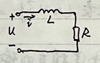
2. Classical Method for Solving Dynamic Circuits
Free Response: General Solution of Homogeneous Differential Equations Forced Response: Particular Solution of Non-Homogeneous Differential Equations
Conditions: AC or DC excitation Reason: At t=0+, these types of excitations are present in any branch of the circuit
1. First-Order Dynamic Circuit 1) Described by a first-order linear homogeneous differential equation. 2) If a first-order circuit contains one dynamic element, it can be transformed into an RC or RL circuit. 3) Solve the homogeneous differential equation (without excitation) and the non-homogeneous differential equation (with excitation). Form: Ae^(-t) 4) General solution is the sum of the homogeneous solution and the particular solution, determined by an initial condition. (Engineering perspective: After 3τ~5τ transient process, the circuit reaches a new steady state)
Summarizing the above steps, we can find that the response of any branch in a first-order circuit can be simplified to a three-element solution. Let f(t) be the voltage or current (response) of the branch, f(0) is the initial value, f(t)_{t→∞} is the forced response (DC and AC components), and τ is the time constant, then: f(t) = f(t)_{t→∞} + Ae^(-t), t≥0 Substitute t=0+: f(t) = f(t)_{t→∞} + [f(0) - f(t)_{t=0+}]e^(-t/τ) Where: f(t)_{t→∞} : Forced response [f(0) - f(t)_{t=0+}]e^(-t/τ) : Free response RC circuit: τ = RC, RL circuit: τ = L/R, R is the equivalent resistance seen at the dynamic element's terminals.
2. Second-Order Dynamic Circuit 1) Second-order homogeneous differential equation: Contains two dynamic elements with different dynamic properties or two dynamic elements with the same dynamic properties but not coupled. Example: $$\frac{d^2u}{dt^2} + 2\alpha\frac{du}{dt} + \omega_0^2u = f(t)$$ The following is the theory of second-order constant coefficient linear differential equations (non-homogeneous) with constant coefficients.
The differential equation is:
$$\frac{d^2u}{dt^2} + 2\alpha\frac{du}{dt} + \omega_0^2u = f(t), 0$$
or
$$\frac{d^2u}{dt^2} + 2\alpha\frac{du}{dt} + \omega_0^2u = f(t), 0$$
Assuming u = Ae^(λt), we have:
$$\lambda^2e^{2\lambda t} + 2\alpha\lambda e^{2\lambda t} + \omega_0^2e^{2\lambda t} = 0$$
Thus,
$$\lambda^2 + 2\alpha\lambda + \omega_0^2 = 0$$
The characteristic equation is:
$$\lambda = \frac{-2\alpha \pm \sqrt{4\alpha^2 - 4\omega_0^2}}{2} = -\alpha \pm \sqrt{\alpha^2 - \omega_0^2}$$
When Δ > 0, there are two different real roots. The general solution is:
$$u = C_1e^{(\alpha - \sqrt{\alpha^2 - \omega_0^2})t} + C_2e^{(\alpha + \sqrt{\alpha^2 - \omega_0^2})t}$$
When Δ = 0, the characteristic equation has one solution u = e^(-αt). Using the method of undetermined coefficients, we find another linearly independent solution:
$$u = te^{-\alpha t}$$
The general solution is:
$$u = (C_1 + C_2t)e^{-\alpha t}$$
When Δ < 0, there are two conjugate complex roots -α ± j√(ω_0^2 - α^2). The general solution is:
$$u = C_1e^{-\alpha t}e^{j\sqrt{\omega_0^2 - \alpha^2}t} + C_2e^{-\alpha t}e^{-j\sqrt{\omega_0^2 - \alpha^2}t}$$
$$= e^{-\alpha t}(C_1\cos(\sqrt{\omega_0^2 - \alpha^2}t) + C_2\sin(\sqrt{\omega_0^2 - \alpha^2}t))$$
$$= (C_1\cos(\sqrt{\omega_0^2 - \alpha^2}t) + C_2\sin(\sqrt{\omega_0^2 - \alpha^2}t))$$
$$= ke^{-\alpha t}\sin(\sqrt{\omega_0^2 - \alpha^2}t + \phi)$$
k and φ are constants.
To draw the time-domain characteristics of the circuit parameters directly from the differential equation without solving the equation, we can:
1. First, find u and u' and their initial values. 2. Next, find u and u' at steady state. 3. Finally, determine the transient process characteristics from the characteristic equation.
If there is an excitation, according to the solution method of the second-order linear homogeneous differential equation, specifically when the excitation is a sine wave, we have:
$$u'' + 2\alpha u' + \omega_0^2u = A\sin(\omega t + \phi)$$
When A = 1, the steady-state solution is:
$$\sin(\omega t) = \frac{e^{j\omega t} - e^{-j\omega t}}{j2}$$
The steady-state solution is:
$$A\left(\frac{e^{j(\omega t + \phi)} - e^{-(j\omega t + \phi)}}{j2}\right)$$
Then,
$$-w^2\frac{A}{j2}e^{j(\omega t + \phi)} + w^2\frac{A}{j2}e^{-(j\omega t + \phi)} + \frac{2\alpha A}{j2}e^{j(\omega t + \phi)} + \frac{2\alpha A}{j2}e^{-(j\omega t + \phi)} = \frac{1}{j2}e^{j\omega t} - \frac{1}{j2}e^{-j\omega t}$$
$$+ w^2\frac{A}{j2}e^{j(\omega t + \phi)} - w^2\frac{A}{j2}e^{-(j\omega t + \phi)} = \frac{1}{j2}e^{j\omega t} - \frac{1}{j2}e^{-j\omega t}$$
3. Superposition method to solve dynamic circuits.
Zero input response: linearly dependent on initial conditions (all initial conditions, i.e., Uo, Io...). Zero state response: linearly dependent on excitation (all excitations, i.e., Us, Is...).
To find the overall response under any excitation, decompose the response into zero input and zero state. Zero input can be obtained using the superposition method (first-order), characteristic root method (second-order), etc. Zero state can be obtained by decomposing any excitation into a linear combination of simple excitations, and then integrating.
$f(t) = \sum_{k=0}^{N-1} f(k\Delta t) [s(t-k\Delta t) - s(t-(k+1)\Delta t)]$
$\therefore f(t) = \lim_{N\to\infty} \sum_{k=0}^{N-1} f(k\Delta t) [s(t-k\Delta t) - s(t-(k+1)\Delta t)]$
$= \lim_{N\to\infty} \sum_{k=0}^{N-1} f(k\Delta t) \Delta t \frac{1}{\Delta t} [s(t-k\Delta t) - s(t-(k+1)\Delta t)]$
$= \lim_{N\to\infty} \sum_{k=0}^{N-1} f(k\Delta t) \Delta t p(t-k\Delta t)$
where $p(t-k\Delta t) = \frac{1}{\Delta t} [s(t-k\Delta t) - s(t-(k+1)\Delta t)]$ is the unit impulse function delayed by kΔt.
According to the linearity of the circuit, $f(k\Delta t) \Delta t p(t-k\Delta t)$ in the branch of interest has a zero state response of $f(k\Delta t) \Delta t h(t-k\Delta t)$, where $h(t)$ is the unit impulse response of the circuit.
Therefore, the response in the branch of interest $h(t_0) = \lim_{N\to\infty} \sum_{k=0}^{N-1} f(k\Delta t) \Delta t h(t_0-k\Delta t)$
$= \int_0^{t_0} f(\tau) h(t_0-\tau) d\tau$
When N approaches infinity, ΔT approaches dT, kΔT approaches T, the unit impulse function becomes the unit impulse function p(t) → δ(t). The corresponding unit impulse function's zero-state response becomes the unit impulse response h_p(t) → h(t). Therefore, the zero-state response N(t) = ∫_0^t f(τ)h(t-τ)dτ.
Below, the method for calculating the unit impulse response h(t) is explained:
Definition: The limit of the unit impulse function: ∫_0^∞ δ(t)dt = 1, δ(t) = 0 (t ≠ 0).
Delay: δ(t - t_0) = 0 (t ≠ t_0), ∫_0^∞ δ(t - t_0)dt = 1.
And kδ(t - t_0) represents a unit impulse function at t_0 with strength k.
Properties: (1) ∫_0^t δ(τ - t_0)dτ = { 0 if t < t_0, 1 if t > t_0. } Thus, d/dt δ(t - t_0) = δ(t - t_0).
(2) Linearity: f(t) * δ(t - t_0) = f(t_0) * δ(t - t_0). ∫_0^∞ f(t) * δ(t - t_0)dt = f(t_0) * ∫_0^∞ δ(t - t_0)dt = f(t_0).
Response: (1) Using the definition to find h(t), if the input is δ(t - t_0), then for t_0 ~ t_0^+, t_0^+ ~ +∞, the zero-state response can be found. (2) Using the property ∂/∂t ∑(t - t_0) = δ(t - t_0) to find it.
Given the unit step function e(t) corresponding to the zero-state response (unit step response) as s(t), due to the zero-state linearity, s(t) has a zero-state response of s(t); the zero-state response of e(t - Δ) is s(t - Δ), which is evident.
h(t) = lim_Δ→0 [s(t) - s(t - Δ)] = ∂/∂t s(t) (Given: ∂/∂t s(t) = lim_Δ→0 [s(t) - s(t - Δ)] = ∂/∂t s(t)).
The zero-state response of the unit step is easy to find: A * s(t - t_0) → A * s(t - t_0).
Therefore, by the zero-state response and the zero-input response, the convolution of any input can be obtained.
4. State Variable Method
1. State Equation: $$\dot{\overline{X}} = A\overline{X} + B\overline{V}$$ - $\overline{X}$: State variables - independent $U_c$ and $U_i$. - $\dot{\overline{X}}$: First-order derivative of state variables - $\dot{U_c}$ and $\dot{U_i}$. - $\overline{V}$: All excitation $U_s$ and $I_s$.
1) Can be used for linear networks and nonlinear networks. 2) Similar to output equation $\overline{Y} = C\overline{X} + D\overline{V}$, where $\overline{Y}$ is the output vector. 3) According to the superposition principle, replace $C$ with $-\Theta$ and $L$ with $-\Omega$. This results in a new circuit with $n$ (state variables) + $m$ (independent sources). Solve for each power source ($m+n$) individually and add them up, dividing by the corresponding $C$ or $L$. This yields $\overline{X}$, which can be used to derive the state equation $\dot{\overline{X}} = A\overline{X} + B\overline{V}$.
2. Solution Methods: Characteristic Value Method, Laplace Transform Method.
5. Example: Circuit Simulation of Differential Equation
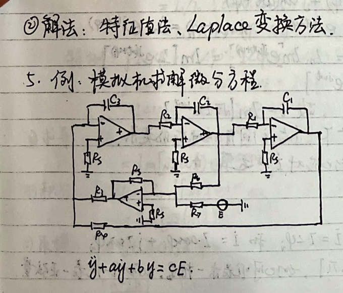
$$\ddot{y} + a\dot{y} + by = cE$$
**Analysis of Dynamic Circuits under Sinusoidal Excitation**
1. **Analysis Foundation (Sinusoidal Elements, Power) and Examples**
Theoretically, solving non-homogeneous differential equations can resolve the response under sinusoidal excitation. However, through the method of complex numbers, the solution of the differential equation is transformed into solving algebraic equations, simplifying the response under sinusoidal excitation. At the same time, the calculation of power is also simplified. After using the Fourier series, the response and power of dynamic circuits under any non-sinusoidal periodic excitation can be easily calculated.
Sinusoidal excitation: \( i = I_m \sin(\omega t + \varphi_i) \). The effective value \( I = \sqrt{\frac{1}{T} \int_0^T i^2 dt} = \frac{I_m}{\sqrt{2}} \).
The result of differentiation, integration, and addition of the same frequency is still a sinusoidal quantity. Therefore, the voltage and current in linear circuits are all sinusoidal quantities (all obtained through the above calculation).
When analyzing sinusoidal steady-state circuits, for sinusoidal elements, we can first not consider the frequency, only considering the amplitude and phase.
\[ \begin{aligned} &\because e^{j(\omega t + \varphi)} = \cos(\omega t + \varphi) + j \sin(\omega t + \varphi) \\ &\therefore \cos(\omega t + \varphi) = \text{Re}(e^{j(\omega t + \varphi)}) \\ &\sin(\omega t + \varphi) = I_m e^{j(\omega t + \varphi)} \\ &\therefore i = I_m \sin(\omega t + \varphi) = I_m I_m e^{j(\omega t + \varphi)} = I_m [I_m e^{j(\omega t + \varphi)}] \\ &= I_m [I_m e^{j\varphi} e^{j\omega t}] \\ &\therefore i = I e^{j\varphi} \quad \text{and} \quad I < \varphi. \\ &\therefore i = I_m [I e^{j\omega t}]. \end{aligned} \]
In the determined frequency \(\frac{2\pi}{T}\), \(i\) and \(I\) have a one-to-one correspondence. The operation of \(i\) can be converted into the operation of \(I\).
(1) **Expression of \(i\)**
\(i\) has two expression methods: \(i = I e^{j\varphi}\) and \(i = I \cos\varphi + j I \sin\varphi\).
Where \(I > 0\), \(\varphi \in [-\pi, \pi]\), thus \(i\) can represent a complex number, and \(I\) represents a sinusoidal quantity.
The note discusses complex numbers and their operations in the complex plane. It explains that complex numbers can be uniquely represented in the complex plane and that the phase of a complex number does not affect its operation. The note covers the following points:
1. **Operations of Complex Numbers:** - **Addition and Subtraction:** Follows the rules of complex number operations. - **Multiplication:** The product of two complex numbers in polar form is the product of their magnitudes and the sum of their phases. - **Division:** The quotient of two complex numbers in polar form is the quotient of their magnitudes and the difference of their phases. - **Multiplication Example:** $z_1 \cdot z_2 = z_1 < \phi_1 \cdot z_2 < \phi_2 = z_1 z_2 < (\phi_1 + \phi_2)$. - **Division Example:** $z_1 / z_2 = z_1 < \phi_1 / z_2 < \phi_2 = z_1 / z_2 < (\phi_1 - \phi_2)$. - **Multiplication Formula:** $z_1 \cdot z_2 = (z_1 \cos \phi_1 + j z_1 \sin \phi_1) \cdot (z_2 \cos \phi_2 + j z_2 \sin \phi_2)$. - **Division Formula:** $z_1 / z_2 = z_1 / z_2 \cdot (\cos \phi_1 + j \sin \phi_1) \cdot (\cos \phi_2 - j \sin \phi_2) / 1$. - **Special Cases:** $j \cdot z < \phi = 1 \cdot z < \phi = z < (\phi + 90^\circ)$, $-j \cdot z < \phi = 1 \cdot z < \phi = z < (\phi - 90^\circ)$, $-1 < \phi = 1 \cdot z < \phi = z < (\phi + 180^\circ)$.
2. **Derivative:** - The derivative of a complex function is the imaginary part of the derivative of the complex function. - $\frac{d z}{dt} = \frac{d}{dt} \text{Im}[\sqrt{2} i e^{jwt}] = \text{Im}[\frac{d}{dt} (\sqrt{2} i e^{jwt})] = \text{Im}[\sqrt{2} j \omega i e^{jwt}]$. - $\text{Im}[\sqrt{2} (\omega i) e^{j(\omega t + 90^\circ)}]$.
3. **Integral:** - The integral of a complex function is the imaginary part of the integral of the complex function. - $\int i dt = \text{Im}[\int \sqrt{2} i e^{jwt} dt] = \text{Im}[\int \frac{1}{j \omega} \cdot i e^{jwt}]$. - $\text{Im}[\int \frac{1}{j \omega} (\omega i) e^{j(\omega t - 90^\circ)}]$.
4. **Modulus:** - The modulus of the product of two complex numbers is the product of their moduli. - $|a + j b| = \sqrt{a^2 + b^2}$. - $|z_1 z_2| = |z_1| |z_2|$. - $|z_1 / z_2| = \frac{|z_1|}{|z_2|}$. - $|z_1 z_2| = \sqrt{a^2 + b^2} \cdot \sqrt{c^2 + d^2} = |a + j b| \cdot |c + j d|$. - $|a + j b| = \frac{\sqrt{a^2 + b^2}}{\sqrt{c^2 + d^2}} = \frac{|a + j b|}{\sqrt{c^2 + d^2}}$. - $|a + j b| = \frac{\sqrt{a^2 + b^2}}{\sqrt{c^2 + d^2}} = \frac{|a + j b|}{\sqrt{c^2 + d^2}}$. - $|a + j b| = \frac{\sqrt{a^2 + b^2}}{\sqrt{c^2 + d^2}} = \frac{|a + j b|}{\sqrt{c^2 + d^2}}$. - $|a + j b| = \frac{\sqrt{a^2 + b^2}}{\sqrt{c^2 + d^2}} = \frac{|a + j b|}{\sqrt{c^2 + d^2}}$. - $|a + j b| = \frac{\sqrt{a^2 + b^2}}{\sqrt{c^2 + d^2}} = \frac{|a + j b|}{\sqrt{c^2 + d^2}}$. - $|a + j b| = \frac{\sqrt{a^2 + b^2}}{\sqrt{c^2 + d^2}} = \frac{|a + j b|}{\sqrt{c^2 + d^2}}$. - $|a + j b| = \frac{\sqrt{a^2 + b^2}}{\sqrt{c^2 + d^2}} = \frac{|a + j b|}{\sqrt{c^2 + d^2}}$. - $|a + j b| = \frac{\sqrt{a^2 + b^2}}{\sqrt{c^2 + d^2}} = \frac{|a + j b|}{\sqrt{c^2 + d^2}}$. - $|a + j b| = \frac{\sqrt{a^2 + b^2}}{\sqrt{c^2 + d^2}} = \frac{|a + j b|}{\sqrt{c^2 + d^2}}$. - $|a + j b| = \frac{\sqrt{a^2 + b^2}}{\sqrt{c^2 + d^2}} = \frac{|a + j b|}{\sqrt{c^2 + d^2}}$. - $|a + j b| = \frac{\sqrt{a^2 + b^2}}{\sqrt{c^2 + d^2}} = \frac{|a + j b|}{\sqrt{c^2 + d^2}}$. - $|a + j b| = \frac{\
Component Constraints
**Resistance:** $$ u = R i $$
**Capacitor:** $$ u = \sqrt{2} U \sin(\omega t + \varphi) $$ $$ i = C \frac{du}{dt} = \sqrt{2} \omega C U \sin(\omega t + \varphi + 90^\circ) $$ $$ \therefore i = j \omega C u, u = j \left( -\frac{1}{\omega C} \right) i $$ $$ X_{\text{capacitive}} = -\frac{1}{\omega C}, B_{\text{capacitive}} = \omega C $$
**Inductor:** $$ i = \sqrt{2} I \sin(\omega t + \varphi) $$ $$ \therefore u = L \frac{di}{dt} = \sqrt{2} \omega L I \sin(\omega t + \varphi + 90^\circ) $$ $$ \therefore i = j \omega L i, i = j \left( \frac{1}{\omega L} \right) u $$ $$ X_{\text{inductive}} = \omega L, B_{\text{inductive}} = -\frac{1}{\omega L} $$
**From the above derivation, it can be concluded that the voltage across the ends of the circuit is:** $$ Z = \frac{U}{I} = \frac{U}{I} = (\varphi_u - \varphi_i) = |Z| \angle \varphi = R + jX $$ $$ R \text{ is resistance, } X \text{ is reactance } \in \{X, X_C\}, Z \text{ is impedance, in a DC circuit, } R \text{ is equivalent to resistance. } $$ **Herein, in mathematics, DC linear resistive circuits and AC steady-state linear circuits are completely equivalent. Kirchhoff's laws derived in AC steady-state can be expressed in complex form and are applicable.**
Power
**General:** $$ P(t) = \sqrt{2} U \sin(\omega t + \varphi_u) \times \sqrt{2} I \sin(\omega t + \varphi_i) $$ $$ = UI - 2 \sin(\omega t + \varphi_u) \sin(\omega t + \varphi_i) $$ $$ = UI \cos(\varphi_u - \varphi_i) - UI \cos(2\omega t + \varphi_u + \varphi_i) $$ $$ = UI \cos \varphi - UI \cos(2\omega t + \varphi_u + \varphi_i) $$ **Average power:** $$ P = \frac{1}{T} \int_0^T P(t) dt = UI \cos \varphi $$ **This is the power consumed by the resistor, also known as active power.** **Power meter:** $$ \Delta \text{measured voltage effective value, } \varphi = \varphi_u - \varphi_i \text{ is the phase angle. } $$
No.
Date
\textbf{Reactive Power}: \( Q = UI \sin \phi \) (var)
This represents the power exchanged between the circuit and the external circuit, caused by capacitors and inductors.
\textbf{Apparent Power}: \( S = UI \) V·A
When \( R \) is constant, \( \phi \in [-\frac{\pi}{2}, \frac{\pi}{2}] \).
\begin{cases} \text{Inductive: } \phi > 0, \text{ lagging power factor} \\ \text{Capacitive: } \phi < 0, \text{ leading power factor} \end{cases}
In practical electrical equipment, many are inductive loads. To improve the power factor, capacitors are connected in parallel to the inductive load to increase the overall power factor and improve power utilization.
\[ \begin{aligned} &\text{Parallel capacitor does not affect active power: } UI \cos \phi_1 = UI \cos \phi_2 = P. \\ &\therefore I_2 = \frac{P}{U \cos \phi_1}, \quad I = \frac{P}{U \cos \phi_2} \\ &\therefore I_c = I - I_2 = I \cos \phi_2 + j I \sin \phi_2 - I_2 \cos \phi_1 - j I_2 \sin \phi_1 \\ &= I \cos \phi_2 - I_2 \cos \phi_1 + j (I \sin \phi_2 - I_2 \sin \phi_1) \\ &\therefore I_c = \sqrt{(I \cos \phi_2 - I_2 \cos \phi_1)^2 + (I \sin \phi_2 - I_2 \sin \phi_1)^2} \\ &= \sqrt{I^2 + I_2^2 - 2 I I_2 \cos (\phi_2 - \phi_1)} \\ &= \frac{P}{U} \sqrt{\frac{1}{\cos \phi_1} + \frac{1}{\cos \phi_2} - \frac{2 \cos (\phi_2 - \phi_1)}{\cos \phi_1 \cos \phi_2}} \\ &= \frac{P}{U} (\tan \phi_1 - \tan \phi_2) = \omega C U \\ &\therefore C = \frac{P}{\omega U^2} (\tan \phi_1 - \tan \phi_2) \end{aligned} \]
\textbf{Summary}: Power can be expressed as a complex number \( S = UI \) where \( I = I \cos \phi + j I \sin \phi \). Thus, \( S = UI \cos (\phi_1 - \phi_2) + j UI \sin (\phi_1 - \phi_2) = UI \cos \phi + j UI \sin \phi = P + j Q \) V·A
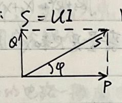
Maximum Power Transfer: Load impedance from a given power supply to obtain maximum real power condition.
$$ i = \frac{U_S}{Z_S + Z} = \frac{U_S}{(R_S + R) + j(X_S + X)} \quad \therefore Z = \sqrt{(R_S + R)^2 + (X_S + X)^2} $$
$$ \therefore P = I^2 R = \frac{U_S^2 R}{(R + R_S)^2 + (X + X_S)^2} \quad \text{Variables are } R \text{ and } X, R > 0. $$
1) Only Z's imaginary part can vary. $$ \text{When } X + X_S = 0 \text{, i.e., } X = -X_S \text{, } P_{\max} = \frac{U_S^2 R}{(R + R_S)^2}. $$
2) R and X can vary. $$ \because P > 0, \therefore X + X_S = 0 \text{ when } P \text{ can reach maximum, } \frac{\partial}{\partial R} \left[ \frac{U_S^2 R}{(R + R_S)^2} \right] = 0 \quad \therefore R = R_S $$ $$ \therefore Z = Z_S^* \text{ (conjugate)} $$ $$ \therefore P_{\max} = \frac{U_S^2}{4R_S}, \quad \eta = 50\%. $$
3) Z's magnitude can vary, but the resistance remains constant. $$ P = \frac{U_S^2 |Z| \cos \phi}{(|Z| \cos \phi + R_S)^2 + (|Z| \sin \phi + X_S)^2} = \frac{U_S^2 \cos \phi |Z|}{|Z|^2 + 2(R_S \cos \phi + X_S \sin \phi) |Z| + R_S^2 + X_S^2} $$ $$ = \frac{U_S^2 \cos \phi}{|Z| + \frac{R_S^2 + X_S^2}{|Z|} + 2(R_S \cos \phi + X_S \sin \phi)} \leq \frac{U_S^2 \cos \phi}{2\sqrt{R_S^2 + X_S^2} + 2(R_S \cos \phi + X_S \sin \phi)} $$ $$ \text{At this time, } |Z| = \sqrt{R_S^2 + X_S^2}. $$
Example - Transformer. 1) Use the right-hand rule to determine the direction of the magnetic field produced by the current and the interaction between them. 2) Determine the mutual inductance and whether the magnetic fluxes are mutually reinforcing. Need to determine the two ends of the two coils. If the currents are in the same direction, the voltage in the other coil is in the opposite direction. If the currents are in opposite directions, the voltage in the other coil is in the same direction. The size is M * di/dt. The opposite is also true. 3) The coupling coefficient k: The strength of the interaction between two mutually inductive coils. $$ k = \frac{M}{\sqrt{L_1 L_2}}. $$
$$ \therefore k^2 = \frac{M^2}{L_1 L_2} = \frac{M^2 \phi_1 \phi_2}{L_1 L_2} = \frac{N_1 \phi_1 N_2 \phi_2}{L_1 L_2} = \frac{\phi_1 \phi_2}{N_1 N_2}. $$
The mutual inductance between two coils is defined as the ratio of the mutual flux linkage to the current in the other coil. The mutual inductance \( M \) is given by the formula:
\[ M = \frac{\phi_1}{i_2} = \frac{\phi_2}{i_1} \]
The mutual inductance \( M \) is always positive and can be expressed as:
\[ M = \sqrt{L_1 L_2} \]
For two coils with mutual inductance \( M \), the total inductance \( L_{eq} \) can be calculated as follows:
1. **Series Connection (Series Connection)** \[ L_{eq} = L_1 + L_2 + 2M \]
2. **Series Connection (Series Connection)** \[ L_{eq} = L_1 + L_2 - 2M \]
3. **Parallel Connection (Parallel Connection)** \[ L_{eq} = \frac{L_1 L_2 - M^2}{L_1 + L_2 - 2M} \]
4. **Parallel Connection (Parallel Connection)** \[ L_{eq} = \frac{L_1 L_2 - M^2}{L_1 + L_2 - 2M} \]
The mutual inductance \( M \) can be calculated as:
\[ M = \frac{L_{eq1} - L_{eq2}}{4} \]
The total inductance \( L_{eq} \) can be expressed as:
\[ L_{eq} = \frac{L_1 L_2 - M^2}{L_1 + L_2 - 2M} \]
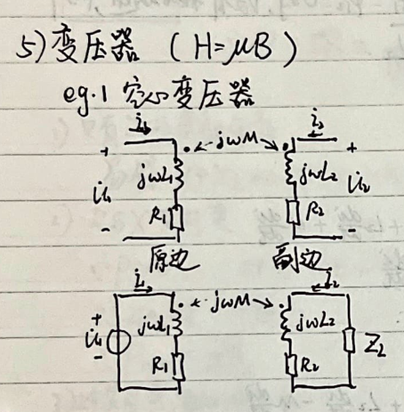
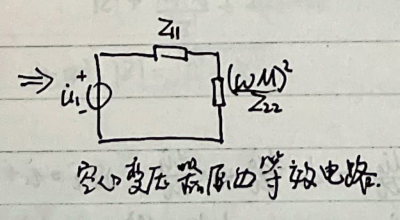
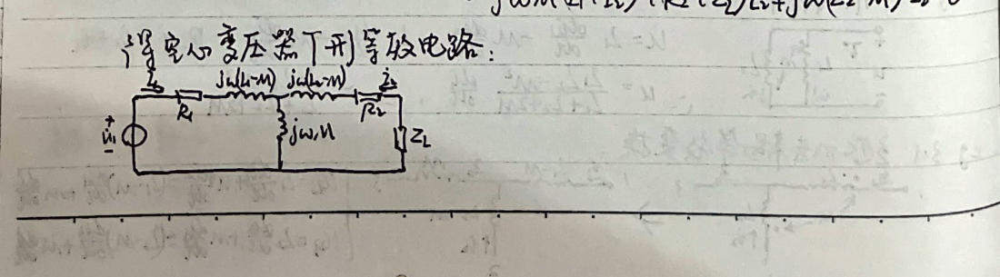
Also, through adding a common terminal wire to the coupled branches, we can obtain a T-shaped equivalent circuit.
$$ \begin{aligned} & \therefore \left\{\begin{array}{l} R_{1} i_{1}+j \omega\left(R_{1}-M\right) i_{1}+j \omega\left(Z_{2}+i_{2}\right) M=u_{1} \\ j \omega\left(Z_{2}+i_{2}\right) M+\left(R_{2}+Z_{2}\right) i_{2}+j \omega\left(Z_{2}-M\right) i_{2}=0 . \end{array}\right. \end{aligned} $$
Example 2: Coupled Transformer. (k=1, M=√L1L2, R1=R2=0)
$$ \begin{aligned} & \left\{\begin{array}{l} u_{1}=j \omega L_{1} i_{1}+j \omega \sqrt{L_{1} L_{2}} i_{2} \\ u_{2}=j \omega \sqrt{L_{2}} i_{1}+j \omega L_{2} i_{2} \end{array}\right. \Rightarrow \left\{\begin{array}{l} \frac{u_{1}}{u_{2}}=\sqrt{\frac{L_{1}}{L_{2}}} \triangleq n \\ i_{1}=\frac{u_{1}}{j \omega L_{1}}-\frac{1}{n} i_{2} \end{array}\right. \end{aligned} $$
Example 3: Ideal Transformer. (L1, L2, M→∞, √L1/L2=n, on full coupling)
$$ \begin{aligned} & \left\{\begin{array}{l} u_{1}=n u_{2} \\ i_{1}=-\frac{1}{n} i_{2} \end{array}\right. \sim \frac{u_{1}}{u_{2}} \sim P=u_{1} i_{1}+u_{2} i_{2}=n u_{2}+\left(\frac{1}{n} i_{2}\right)+u_{2} i_{2}=0 . \end{aligned} $$
$$ \sim T=\left[\begin{array}{cc} n & 0 \\ 0 & \frac{1}{n} \end{array}\right] \text { 互易. } $$
The ideal transformer can be seen as a voltage-controlled voltage source. The control quantity u1 is the controlled quantity u2.
Example 4: Intermediate Tap Transformer
$$ \begin{aligned} & u_{1}: \text { Full-wave rectifier; phase shifter; two-phase conversion. } \end{aligned} $$
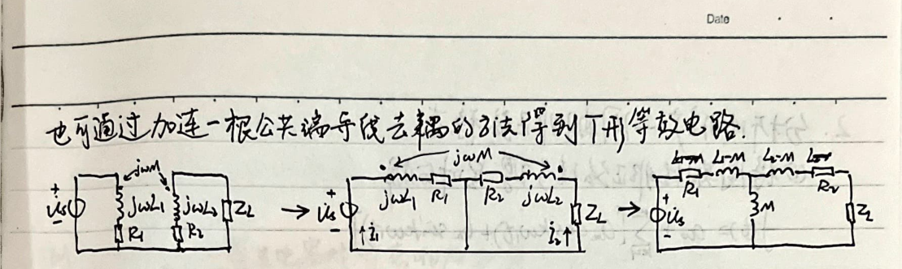
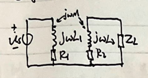
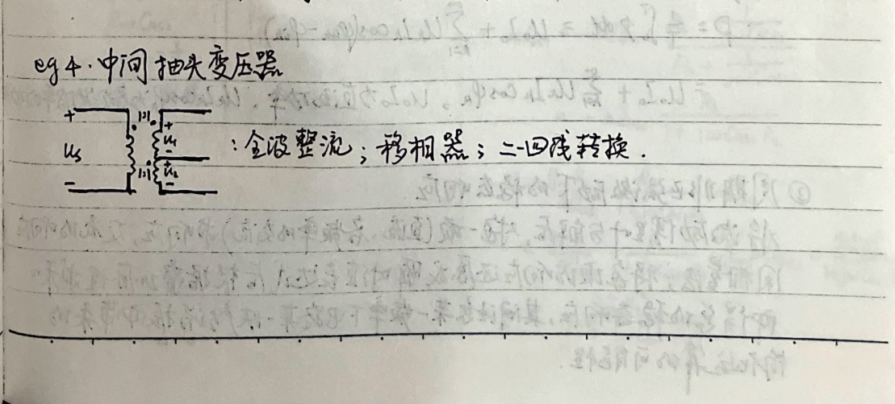
2. Analysis Extension - Non-Periodic Steady-State
1. Decomposition of Periodic Non-Periodic Signals into Components $$ f(t) = a_0 + \sum_{k=1}^{\infty} [a_k \cos(k\omega_1 t) + b_k \sin(k\omega_1 t)] $$ $$ = a_0 + \sum_{k=1}^{\infty} c_k \sin(k\omega_1 t + \phi_k) $$ $$ = a_0 + c_1 \sin(\omega_1 t + \phi_1) + \sum_{k=2}^{\infty} c_k \sin(k\omega_1 t + \phi_k) $$ $$ \downarrow \text{DC Component (Average Value)} \quad \downarrow \text{Fundamental Component} (\omega_1 = \frac{2\pi}{T}) \quad \downarrow \text{Higher Harmonics} (k \geq 2), \text{Decay}
2. Effective Value and Average (Effective) Power Calculation $$ i = I_0 + \sum_{k=1}^{\infty} I_km \sin(k\omega_1 t + \phi_k) \quad (\omega_1 = \frac{2\pi}{T}) $$ $$ \therefore I = \sqrt{\frac{1}{T} \int_0^T [I_0 + \sum_{k=1}^{\infty} I_km \sin(k\omega_1 t + \phi_k)]^2 dt} $$ $$ \text{Since} \quad \frac{1}{T} \int_0^T I_0^2 dt = I_0^2, \quad \frac{1}{T} \int_0^T I_km^2 \sin^2(k\omega_1 t + \phi_k) dt = \frac{2I_km^2}{2} = I_k^2 $$ $$ \frac{1}{T} \int_0^T 2I_0 I_km \sin(k\omega_1 t + \phi_k) dt = \frac{1}{T} \int_0^T 2I_km \sin(k\omega_1 t + \phi_k) \cdot I_km \sin(k\omega_1 t + \phi_k) dt $$ $$ = 0 $$ $$ \therefore I = \sqrt{I_0^2 + \sum_{k=1}^{\infty} I_k^2}, \quad I_0 \text{ is the DC component, } I_k \text{ is the AC effective value, and the AC component is zero.} $$
3. Steady-State Response to Periodic Non-Periodic Excitation $$ p = u_i = [U_0 + \sum_{k=1}^{\infty} \sqrt{2}U_k \sin(k\omega_1 t + \phi_{uk})] \cdot [I_0 + \sum_{k=1}^{\infty} \sqrt{2}I_k \sin(k\omega_1 t + \phi_{ik})] $$ $$ \therefore p = \frac{1}{T} \int_0^T p dt = U_0 I_0 + \sum_{k=1}^{\infty} U_k I_k \cos(\phi_{uk} - \phi_{ik}) $$ $$ = U_0 I_0 + \sum_{k=1}^{\infty} U_k I_k \cos\phi_k, \quad U_0 I_0 \text{ is the DC power, } U_k I_k \cos\phi_k \text{ is the AC component.} $$
4. Steady-State Response to Periodic Non-Periodic Excitation $$ \text{The response of each component (DC, AC components of different frequencies) is calculated separately. The AC component is zero.} $$ $$ \text{The total steady-state response is obtained by summing the responses of each component.} $$ $$ \text{Note that at a certain frequency, the circuit may produce a steady-state response due to the excitation.} $$
3. Frequency response → oscillation → filter.
For dynamic components, the impedance (amplitude, phase) at the output is a function of frequency.
Example: MOSFET parasitic capacitance's impact on transient and steady-state response.
\begin{equation} U_{in} \xrightarrow{G_1} D \xrightarrow{G_2} U_{out} \end{equation}
\begin{tabular}{|c|c|} \hline \textbf{Transient response (rectangular pulse excitation)} & \textbf{Steady-state response (small signal excitation)} \\ \hline \begin{equation} \Delta U_{in} = 0 \end{equation} & \begin{equation} \Delta U_{in} = \Delta U_{GS1} G_1 \end{equation} \\ \begin{equation} U_{in1} = U_{in2} \end{equation} & \begin{equation} U_{in1} = U_{in2} \end{equation} \\ \begin{equation} R_1 C_{as1} \frac{dU_{in1}}{dt} = 0 \end{equation} & \begin{equation} R_1 C_{as1} \frac{dU_{in1}}{dt} = -\Delta U_{GS1} G_1 \end{equation} \\ \begin{equation} U_{in1}(0^+) = U_{in} \end{equation} & \begin{equation} U_{in1}(0^+) = 0 \end{equation} \\ \begin{equation} U_{in1}(\infty) \approx 0 \end{equation} & \begin{equation} U_{in1}(\infty) = U_{in} \end{equation} \\ \begin{equation} \tau = R_1 C_{as1} \end{equation} & \begin{equation} \tau = R_1 C_{as1} \end{equation} \\ \begin{equation} x R_1 C_{as1} \end{equation} & \begin{equation} x R_1 C_{as1} \end{equation} \\ \begin{equation} U_{in1}(t) \approx U_{in} e^{-\frac{t}{\tau}} \end{equation} & \begin{equation} U_{in1}(t) \approx U_{in} e^{-\frac{t}{\tau}} \end{equation} \\ \begin{equation} U_{in1}(t) = U_{in1} e^{-\frac{t}{\tau}} \end{equation} & \begin{equation} U_{in1}(t) = U_{in1} e^{-\frac{t}{\tau}} \end{equation} \\ \begin{equation} t_{rise} = \tau \ln \left( \frac{U_{in1}(t) - U_{in1}(0^+)}{U_{in1}(t) - U_{in1}(\infty)} \right) \end{equation} & \begin{equation} t_{rise} = \tau \ln \left( \frac{U_{in1}(t) - U_{in1}(0^+)}{U_{in1}(t) - U_{in1}(\infty)} \right) \end{equation} \\ \hline \end{tabular}
\begin{equation} H = \frac{\Delta U_{in}}{\Delta U_{GS1}} = \frac{\Delta U_{DS1}}{\Delta U_{GS1}} \end{equation}
\begin{equation} H = -g_m R_L = -\frac{\Delta U_{DS1}}{\Delta U_{GS1}} \end{equation}
\begin{equation} H = g_m R_L \cdot \frac{R_L}{1 + j \omega C_{as2} R_L} \cdot \Delta \dot{U}_{DS1} \end{equation}
\begin{equation} H = \frac{g_m^2 R_L^2}{1 + j \omega C_{as2} R_L} \cdot \Delta \dot{U}_{DS1} \end{equation}
\begin{equation} H = \frac{g_m^2 R_L^2}{\sqrt{1 + (\omega C_{as2} R_L)^2}} \cdot \Delta \dot{U}_{DS1} \end{equation}
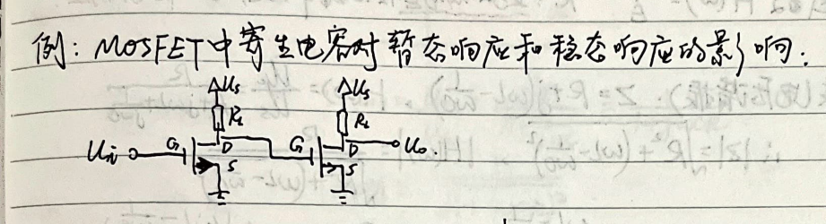
Resonance Classification, Conditions, Equivalent Impedance, and Quality Factor
# Network Function H(ω) = R / Z R: The excitation voltage in the circuit produces a stable steady-state response.
# Series Resonance (Voltage Resonance): Z = R + j(ωL - 1/ωC), H(ω) = Uc / Us = R / (R + jωL + 1/jωC) ∴ |Z| = √(R² + (ωL - 1/ωC)²), |H(ω)| = R / √(R² + (ωL - 1/ωC)²) φ(ω) = arctan(ωL - 1/ωC) - arctan(R) = arctan(ωL - 1/ωC)
When ω₀ = √(1/LC), |Z| is minimum, |H(ω)| is maximum, φ(ω) is zero, Us is in phase. I(ω₀) = Ic / R, Ic(∞) = Is
# Parallel Resonance (Current Resonance): Y = G + j(ωC - 1/ωL), H(ω) = Ic / Is = 1 / (G + jωC + 1/jωL) = jωL / (1 - ω²LCjωL) ∴ |Y| = √(G² + (ωC - 1/ωL)²), |H(ω)| = 1 / √(G² + (ωC - 1/ωL)²) φ(ω) = arctan[(ωC - 1/ωL) / G]
When ω₀ = √(1/LC), |Y| is minimum, |H(ω)| is maximum, φ(ω) is zero, Us is in phase. Ic(ω₀) = Is / G, Ic(∞) = Is
# Parallel Resonance: When Z → ∞; series resonance when Z → 0. So the parallel resonance part can be considered as an open circuit, while the series resonance part is a short circuit. And the series resonance frequency is lower than the parallel resonance frequency (2πf₀ < 2πf₀).
# Quality Factor: 1) The amplification factor of the output power during resonance. 2) The circuit's corresponding damping coefficient α = ω₀ / 2Q. 3) The ratio of the circuit's energy consumption per period during resonance to the energy stored in the circuit at ω₀. 4) The ratio of the circuit's energy consumption per period during resonance to the energy stored in the circuit at ω₀. 5) The ratio of the circuit's energy consumption per period during resonance to the energy stored in the circuit at ω₀. 6) The ratio of the circuit's energy consumption per period during resonance to the energy stored in the circuit at ω₀. 7) The ratio of the circuit's energy consumption per period during resonance to the energy stored in the circuit at ω₀. 8) The ratio of the circuit's energy consumption per period during resonance to the energy stored in the circuit at ω₀. 9) The ratio of the circuit's energy consumption per period during resonance to the energy stored in the circuit at ω₀. 10) The ratio of the circuit's energy consumption per period during resonance to the energy stored in the circuit at ω₀. 11) The ratio of the circuit's energy consumption per period during resonance to the energy stored in the circuit at ω₀. 12) The ratio of the circuit's energy consumption per period during resonance to the energy stored in the circuit at ω₀. 13) The ratio of the circuit's energy consumption per period during resonance to the energy stored in the circuit at ω₀. 14) The ratio of the circuit's energy consumption per period during resonance to the energy stored in the circuit at ω₀. 15) The ratio of the circuit's energy consumption per period during resonance to the energy stored in the circuit at ω₀. 16) The ratio of the circuit's energy consumption per period during resonance to the energy stored in the circuit at ω₀. 17) The ratio of the circuit's energy consumption per period during resonance to the energy stored in the circuit at ω₀. 18) The ratio of the circuit's energy consumption per period during resonance to the energy stored in the circuit at ω₀. 19) The ratio of the circuit's energy consumption per period during resonance to the energy stored in the circuit at ω₀. 20) The ratio of the circuit's energy consumption per period during resonance to the energy stored in the circuit at ω₀. 21) The ratio of the circuit's energy consumption per period during resonance to the energy stored in the circuit at ω₀. 22) The ratio of the circuit's energy consumption per period during resonance to the energy stored in the circuit at ω₀. 23) The ratio of the circuit's energy consumption per period during resonance to the energy stored in the circuit at ω₀. 24) The ratio of the circuit's energy consumption per period during resonance to the energy stored in the circuit at ω₀. 25) The ratio of the circuit's energy consumption per period during resonance to the energy stored in the circuit at ω₀. 26) The ratio of the circuit's energy consumption per period during resonance to the energy stored in the circuit at ω₀. 27) The ratio of the circuit's energy consumption per period during resonance to the energy stored in the circuit at ω₀. 28) The ratio of the circuit's energy consumption per period during resonance to the energy stored in the circuit at ω₀. 29) The ratio of the circuit's energy consumption per period during resonance to the energy stored in the circuit at ω₀. 30) The ratio of the circuit's energy consumption per period during resonance to the energy stored in the circuit at ω₀. 31) The ratio of the circuit's energy consumption per period during resonance to the energy stored in the circuit at ω₀. 32) The ratio of the circuit's energy consumption per period during resonance to the energy stored in the circuit at ω₀. 33) The ratio of the circuit's energy consumption per period during resonance to the energy stored in the circuit at ω₀. 34) The ratio of the circuit's energy consumption per period during resonance to the energy stored in the circuit at ω₀. 35) The ratio of the circuit's energy consumption per period during resonance to the energy stored in the circuit at ω₀. 36) The ratio of the circuit's energy consumption per period during resonance to the energy stored in the circuit at ω₀. 37) The ratio of the circuit's energy consumption per period during resonance to the energy stored in the circuit at ω₀. 38) The ratio of the circuit's energy consumption per period during resonance to the energy stored in the circuit at
2. Low-pass filter.
$$H(\omega) = \frac{U_C}{U_S} = \frac{\frac{1}{j\omega C}}{R + \frac{1}{j\omega C}} = \frac{1}{1 + j\omega RC}$$
$$|H(\omega)| = \frac{1}{\sqrt{1 + (\omega RC)^2}}$$
$$\theta(\omega) = \arctan\left(\frac{1}{\omega RC}\right) - \arctan\left(\frac{1}{\omega R}\right)$$
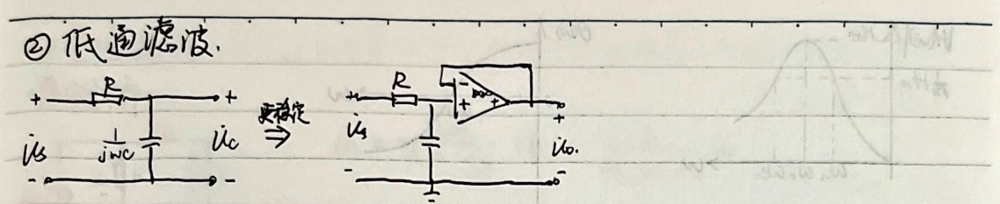
$$\omega_C = \frac{1}{RC} = \frac{1}{T}$$
The range from 0 to ωC is called the passband.
ωC is called the cutoff frequency (or the power frequency), and in engineering, this is the boundary of the filter's passband and stopband.
3. High-pass filter.
$$H(\omega) = \frac{U_C}{U_S} = \frac{\frac{1}{j\omega L}}{R + \frac{1}{j\omega L}} = \frac{1}{1 - j\frac{\omega R}{L}}$$
$$|H(\omega)| = \frac{1}{\sqrt{1 + \left(\frac{\omega R}{L}\right)^2}}$$
When |H(ω)| = $\frac{\sqrt{2}}{2}$, ωL = $\frac{R}{L}$.
4. Band-pass filter, band-reject filter.
The cutoff frequency of the high-pass filter is less than the cutoff frequency of the low-pass filter, i.e., $\frac{1}{RC_1} < \frac{1}{RC_2}$ is the passband, and $\frac{1}{RC_1} > \frac{1}{RC_2}$ is the stopband.
$$H(\omega) = \frac{U_C}{U_S} = \frac{U_C}{U_S} \times \frac{U_S}{U_I} = \frac{j\omega C_2 R_2}{1 + j\omega C_1 R_2} \times \frac{1}{1 + j\omega C_1 R_1} = \frac{j\omega C_2 R_2}{1 - \omega^2 R_2 R_1 C_1 C_2 + j\omega (C_1 R_1 + C_2 R_2)}$$
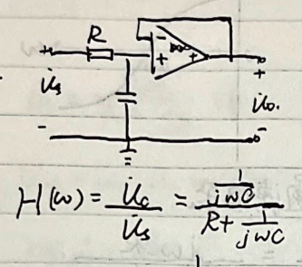
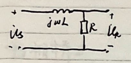
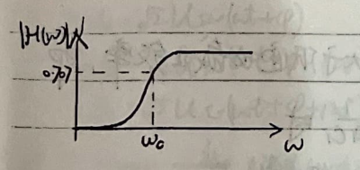
No.
Data
2) RLC resonant circuit forms a band-pass filter
$$H(\omega) = \frac{U_R}{U_S} = \frac{R}{R+j\omega L+\frac{1}{j\omega C}} = \frac{j\omega CR}{1-\omega^2LC+j\omega CR}$$
$$|H(\omega)| = \frac{R}{\sqrt{R^2+(\omega L-\frac{1}{\omega C})^2}}. \quad \varphi(\omega) = \arctan \frac{\omega L-\frac{1}{\omega C}}{R}$$
$$\dot{I}(\omega) = \frac{\dot{U}}{R+j(\omega L-\frac{1}{\omega C})} = \frac{\dot{I}(\omega_0)}{1+j(\frac{\omega L}{R}-\frac{1}{\omega CR})}$$
$$\dot{I}(\omega) = \frac{\dot{I}(\omega_0)}{\sqrt{1+(\frac{\omega L}{R}-\frac{1}{\omega CR})^2}}, \quad I(\omega) = \frac{1}{\sqrt{1+(\frac{\omega L}{R}\cdot\frac{\omega}{\omega_0}-\frac{1}{\omega_0CR}\cdot\frac{\omega}{\omega})^2}}, \quad \frac{Z(\omega)}{Z(\omega_0)} = \frac{1}{\sqrt{1+Q^2(\eta-\eta_1)^2}}$$
$$\therefore Q = \frac{1}{\eta_2-\eta_1} = \frac{\omega_0}{\omega_2-\omega_1}. \quad Q \text{越大, 通频带越窄, 曲线在谐振频率附近尖锐}$$
3) Band-stop filter
High-pass cutoff frequency is greater than low-pass cutoff frequency, i.e.
$$\frac{1}{R_1C_1} > \frac{1}{R_2C_2} \text{ when } (\frac{1}{R_1C_1}-\frac{1}{R_2C_2}) \text{ is disconnected.}$$
4) RLC resonant circuit forms a band-stop filter
$$U_{Z_1} = \frac{Z_1}{Z_1+R+j\omega L+\frac{1}{j\omega C}} \cdot I_S$$
$$U_{Z_1} = \frac{\sqrt{(R+j(\frac{\omega_0}{\omega}-\omega L))^2+(jR\omega C+\omega R_L L-\frac{R_L^2}{\omega C})^2}}{(R+j(\frac{\omega_0}{\omega}-\omega L))^2+(jR\omega C+\omega R_L L-\frac{R_L^2}{\omega C})^2} \cdot I_S$$
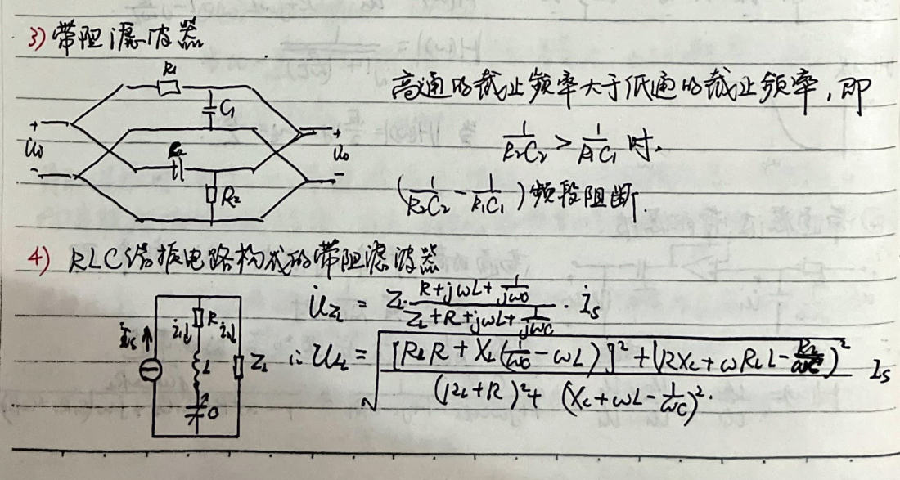
5. Full-wave bridge rectifier:
$$U_{C} = \frac{1}{j\omega C}U_{S} = \frac{1}{1+j\omega CR_{0}}U_{S}$$ $$U_{AB} = U_{S} - U_{C} = \frac{1}{2}U_{S} - \frac{1}{1+j\omega CR_{0}}U_{S} = \frac{j\omega CR_{0} - 1}{2(1+j\omega CR_{0})}U_{S}$$ $$\therefore H(\omega) = \frac{U_{AB}}{U_{S}} = \frac{j\omega CR_{0} - 1}{2(1+j\omega CR_{0})}$$ $$|H(\omega)| = 0.5, \varphi(\omega) = \pi - 2\arctan(\omega CR_{0})$$
6. Full-wave bridge rectifier:
$$U_{AB} + U_{1} + iR = 0$$ $$U_{AB} = U_{S} + i\frac{1}{j\omega C}$$ $$\therefore H(\omega) = \frac{U_{AB}}{U_{1}} = \frac{1 + \frac{i}{j\omega C}}{1 - \frac{i}{\omega CR}}$$ $$\therefore |H(\omega)| = 1, \varphi(\omega) = \arctan(2\omega CR)$$
4. Three-phase circuit: three-phase power source, three-phase load, three-phase transmission lines.
1. Symmetrical three-phase circuit:
$$U_{A} = \sqrt{2}U_{S}\sin(\omega t + \varphi)$$ $$U_{B} = \sqrt{2}U_{S}\sin(\omega t + \varphi - 120^\circ)$$ $$U_{C} = \sqrt{2}U_{S}\sin(\omega t + \varphi + 120^\circ)$$ $$U_{A} + U_{B} + U_{C} = i_{A} + i_{B} + i_{C} = 0$$
$$U_{AB} = U_{A} - U_{B} - 120^\circ = \sqrt{3}U_{A} \angle 30^\circ$$ $$i_{A} + i_{B} + i_{C} = 0 \therefore i_{N}$$ $$i_{A} = i_{AB} - i_{CA} = \sqrt{3}i_{AB} \angle -30^\circ$$ $$U_{AB} = U_{A}, U_{BC} = U_{B}, U_{CA} = U_{C}$$
For the delta connection's impedance, it can be converted into a star connection. When the power supply is a star connection, the single-phase method can be used for analysis.
(2) Unbalanced three-phase circuit. In actual power systems, the power supply is not balanced, and the load is not balanced.
The midpoint exists when U_{1}=U_{2}=U_{3}. The midpoint does not exist when the midpoint voltage U_{1}=U_{2}=U_{3}.
(3) Three-phase circuit power. Single-phase active power: U_{p}I_{p}cosφ=P_{p} U_{p}, I_{p} are phase voltage, phase current
For star connection: U_{p}=\frac{U_{1}}{\sqrt{3}}, I_{p}=I_{1} For delta connection: U_{p}=U_{1}, I_{p}=\frac{I_{1}}{\sqrt{3}}
∴ Three-phase total power P=3U_{p}I_{p}cosφ=\sqrt{3}U_{1}I_{1}cosφ. Reactive power Q=3U_{p}I_{p}sinφ=\sqrt{3}U_{1}I_{1}sinφ Apparent power S=3U_{p}I_{p}=\sqrt{3}U_{1}I_{1}
Assuming U_{AN}=\sqrt{2}U_{p}sinwt, I_{A}=\sqrt{2}I_{p}sin(wt+φ), the three-phase instantaneous power is
P_{A}=U_{AN}I_{A}=\sqrt{2}U_{p}sinwt\cdot\sqrt{2}I_{p}sin(wt-φ) =U_{p}I_{p}[cosφ-cos(2wt-φ-120°)] P_{B}=U_{AN}I_{B}=\sqrt{2}U_{p}sin(wt-120°)\cdot\sqrt{2}I_{p}sin(wt-φ-120°) =U_{p}I_{p}[cosφ-cos(2wt-φ+120°)] P_{C}=U_{AN}I_{C}=\sqrt{2}U_{p}sin(wt+120°)\cdot\sqrt{2}I_{p}sin(wt-φ+120°) =U_{p}I_{p}[cosφ-cos(2wt-φ+240°)]
P=P_{A}+P_{B}+P_{C}=3U_{p}I_{p}cosφ. ⇒ The motor rotates smoothly.
Three-phase four-wire system: $$W = W_1 + W_2 + W_3$$
Three-phase three-wire system: $$i_A + i_B + i_C = 0$$ $$\therefore u_C = -i_A - i_B$$ $$\therefore P = u_A i_A + u_B i_B + u_C i_C$$ $$= u_A i_A + u_B i_B + u_C (-i_A - i_B) = (u_A - u_B) i_A + (u_B - u_C) i_B$$ $$= u_A i_A + u_B i_B$$ $$\therefore W = \overline{P} = u_A i_A \cos \varphi_1 + u_B i_B \cos \varphi_2$$
Semiconductor Device Fundamentals
# 1. Semiconductors: Si, Ge, GaAs...
- **Intrinsic Semiconductors:** - **(1) Perfectly Clean, Structurally Complete Semiconductors.** (Impurities) - **(2) At T=0K, in the absence of external influences, valence electrons are bound in covalent bonds.) - **(3) At elevated temperatures or under light illumination, valence electrons can split into free electrons and holes. The number of holes equals the number of split-off electrons. This is known as intrinsic excitation.** - **(4) Free electrons continuously escape and fill the holes, forming a current that flows in the opposite direction of electron movement.** - **n_i = p_i** (Intrinsic semiconductor electron concentration = hole concentration). - **(5) At elevated temperatures, intrinsic excitation increases, and the number of carriers increases. With increasing concentration, electron-hole pairs are produced and recombine, reaching a dynamic equilibrium.** - **n_i = p_i = A * T^(3/2) * e^(-E_g / (2 * k * T))**
# Doped Semiconductors: - **N-Type:** - **Doping with pentavalent elements:** P, As, Sb. - **At room temperature, the intrinsic carrier concentration is negligible.** - **Majority carriers: Free electrons.** - **Minority carriers: Holes.** - **n_0 = N_D + p_0 ≈ N_D**
- **P-Type:** - **Doping with trivalent elements:** B, Al, In. - **At room temperature, the intrinsic carrier concentration is negligible.** - **Majority carriers: Holes.** - **Minority carriers: Free electrons.** - **p_0 = N_A + n_0 ≈ N_A.**
- **At room temperature, the intrinsic carrier concentration is negligible.**
- **n_0 p_0 = n_i^2**
- **The minority carrier concentration is highly sensitive to temperature, while the majority carrier concentration is less sensitive. At a certain temperature, the minority carrier concentration can be close to the majority carrier concentration, and the semiconductor device may not function properly.**
2. Carrier Mobility
The drift velocity of free electrons is \( v_n = -\mu_n E \), where \(\mu_n\) is the electron mobility. The drift velocity of holes is \( v_p = \mu_p E \), where \(\mu_p\) is the hole mobility. The carrier concentration increases, mobility decreases; temperature increases, mobility decreases; \(\mu_n > \mu_p\).
\( I = I_n + I_p = qS(-n v_n + p v_p) = qS(n \mu_n E + p \mu_p E) \) \( = q \cdot \frac{S \cdot V}{L} (n \mu_n + p \mu_p) \) \( q = 1.6 \times 10^{-19} C \)
\(\therefore R = \frac{V}{I} = \frac{p \frac{L}{S}}{q \frac{1}{S} (n \mu_n + p \mu_p)} \)
\(\therefore \sigma = q (n \mu_n + p \mu_p) \)
For doped semiconductors, \(\sigma\) mainly depends on the carrier concentration, so the temperature coefficient is negative. For intrinsic semiconductors, as temperature increases, mobility decreases, carrier concentration increases, conductivity increases.
3. Carrier Diffusion
In a certain region of the semiconductor, when illuminated or injected carriers, the carrier concentration increases. \(\rightarrow\) carrier diffusion \(\rightarrow\) diffusion current \(\rightarrow\) \( I_n = q S D_n \frac{d n(x)}{dx} \) \(\frac{D_p}{\mu_p} = \frac{D_n}{\mu_n} = \frac{kT}{q} \)
3. PN Junction
Positive and negative carriers meet, \( p \) region has more holes than \( n \) region has electrons. \(\rightarrow\) holes diffuse from \( p \) to \( n \), electrons diffuse from \( n \) to \( p \), at the interface. \( p \) region has fewer electrons than \( n \) region has holes. \(\rightarrow\) holes and electrons recombine at the interface \(\rightarrow\) fixed negative ions in \( p \) region, fixed positive ions in \( n \) region. \(\rightarrow\) space charge region forms at the interface, positive and negative charges separate \(\rightarrow\) internal built-in electric field forms, which prevents further diffusion of carriers.
The minority carriers (electrons) in the P region diffuse toward the N region. Due to the concentration difference, the diffusion motion and the drift motion caused by the internal electric field reach a dynamic equilibrium, resulting in zero net current and zero net charge in the space charge region. The built-in electric field E is shown in the figure. The figure shows the low resistance region, high resistance region, low resistance region, potential barrier, and depletion layer. The depletion layer is also referred to as the depletion region. The contact potential difference is given by Vφ = kT/q * ln(NA/ND). The temperature voltage quantity is Vt = kT/q ≈ 26mV (at 300K). Vφ has a negative temperature coefficient. The potential barrier width is W0 = Wn + Wp = √(2ε/ε) * Vφ * (NA + ND) / (NA * ND) = Wn / Wp = NA / ND. W0 has a negative temperature coefficient. From the above two formulas, we get: {Wn = NA * √(2ε/ε) * Vφ / (NA * ND * (NA + ND))} {Wp = ND * √(2ε/ε) * Vφ / (NA * ND * (NA + ND))} The negative temperature coefficient is: {Q- = -qSWpNA} {Q+ = qSWnND = qSWpNA} The PN junction: Wn << Wp (ND >> NA) The P+ N junction: Wn >> Wp (ND << NA)
PN Junction's I-V Characteristics:
# 1. Forward Characteristics: Positive (+) connected to Positive (+), Negative (-) connected to Negative (-).
- Due to the low resistance of the intrinsic region and the small resistance of the semiconductor, the external voltage is almost applied to the space charge region. The electric field direction is opposite to the contact electric field. The built-in electric field and the external electric field form a composite electric field E. The built-in electric field E decreases. The built-in voltage Vn, Vp, and Q all decrease. The built-in voltage Vn decreases from Vn to Vn - Vp. The built-in voltage Vp decreases from Vp to Vp - Vn. The built-in voltage Vn decreases from Vn to Vn - Vp. The built-in voltage Vp decreases from Vp to Vp - Vn. The built-in voltage Vn decreases from Vn to Vn - Vp. The built-in voltage Vp decreases from Vp to Vp - Vn. The built-in voltage Vn decreases from Vn to Vn - Vp. The built-in voltage Vp decreases from Vp to Vp - Vn. The built-in voltage Vn decreases from Vn to Vn - Vp. The built-in voltage Vp decreases from Vp to Vp - Vn. The built-in voltage Vn decreases from Vn to Vn - Vp. The built-in voltage Vp decreases from Vp to Vp - Vn. The built-in voltage Vn decreases from Vn to Vn - Vp. The built-in voltage Vp decreases from Vp to Vp - Vn. The built-in voltage Vn decreases from Vn to Vn - Vp. The built-in voltage Vp decreases from Vp to Vp - Vn. The built-in voltage Vn decreases from Vn to Vn - Vp. The built-in voltage Vp decreases from Vp to Vp - Vn. The built-in voltage Vn decreases from Vn to Vn - Vp. The built-in voltage Vp decreases from Vp to Vp - Vn. The built-in voltage Vn decreases from Vn to Vn - Vp. The built-in voltage Vp decreases from Vp to Vp - Vn. The built-in voltage Vn decreases from Vn to Vn - Vp. The built-in voltage Vp decreases from Vp to Vp - Vn. The built-in voltage Vn decreases from Vn to Vn - Vp. The built-in voltage Vp decreases from Vp to Vp - Vn. The built-in voltage Vn decreases from Vn to Vn - Vp. The built-in voltage Vp decreases from Vp to Vp - Vn. The built-in voltage Vn decreases from Vn to Vn - Vp. The built-in voltage Vp decreases from Vp to Vp - Vn. The built-in voltage Vn decreases from Vn to Vn - Vp. The built-in voltage Vp decreases from Vp to Vp - Vn. The built-in voltage Vn decreases from Vn to Vn - Vp. The built-in voltage Vp decreases from Vp to Vp - Vn. The built-in voltage Vn decreases from Vn to Vn - Vp. The built-in voltage Vp decreases from Vp to Vp - Vn. The built-in voltage Vn decreases from Vn to Vn - Vp. The built-in voltage Vp decreases from Vp to Vp - Vn. The built-in voltage Vn decreases from Vn to Vn - Vp. The built-in voltage Vp decreases from Vp to Vp - Vn. The built-in voltage Vn decreases from Vn to Vn - Vp. The built-in voltage Vp decreases from Vp to Vp - Vn. The built-in voltage Vn decreases from Vn to Vn - Vp. The built-in voltage Vp decreases from Vp to Vp - Vn. The built-in voltage Vn decreases from Vn to Vn - Vp. The built-in voltage Vp decreases from Vp to Vp - Vn. The built-in voltage Vn decreases from Vn to Vn - Vp. The built-in voltage Vp decreases from Vp to Vp - Vn. The built-in voltage Vn decreases from Vn to Vn - Vp. The built-in voltage Vp decreases from Vp to Vp - Vn. The built-in voltage Vn decreases from Vn to Vn - Vp. The built-in voltage Vp decreases from Vp to Vp - Vn. The built-in voltage Vn decreases from Vn to Vn - Vp. The built-in voltage Vp decreases from Vp to Vp - Vn. The built-in voltage Vn decreases from Vn to Vn - Vp. The built-in voltage Vp decreases from Vp to Vp - Vn. The built-in voltage Vn decreases from Vn to Vn - Vp. The built-in voltage Vp decreases from Vp to Vp - Vn. The built-in voltage Vn decreases from Vn to Vn - Vp. The built-in voltage Vp decreases from Vp to Vp - Vn. The built-in voltage Vn decreases from Vn to Vn - Vp. The built-in voltage Vp decreases from Vp to Vp - Vn. The built-in voltage Vn decreases from Vn to Vn - Vp. The built-in voltage Vp decreases from Vp to Vp - Vn. The built-in voltage Vn decreases from Vn to Vn - Vp. The built-in voltage Vp decreases from Vp to Vp - Vn. The built-in voltage Vn decreases from Vn to Vn - Vp. The built-in voltage Vp decreases from Vp to Vp - Vn. The built-in voltage Vn decreases from Vn to Vn - Vp. The built-in voltage Vp decreases from Vp to Vp - Vn. The built-in voltage Vn decreases from Vn to Vn - Vp. The built-in voltage Vp decreases from Vp to Vp - Vn. The built-in voltage Vn decreases from Vn to Vn - Vp. The built-in voltage Vp decreases from Vp to Vp - Vn. The built-in voltage Vn decreases from Vn to Vn - Vp. The built-in voltage Vp decreases from Vp to Vp - Vn. The built-in voltage Vn decreases from Vn to Vn - Vp. The built-in voltage Vp decreases from Vp to Vp - Vn. The built-in voltage Vn decreases from Vn to Vn - Vp. The built-in voltage Vp decreases from Vp to Vp - Vn. The built-in voltage Vn decreases from Vn to Vn - Vp. The built-in voltage Vp decreases from Vp
△ PN junction temperature characteristics: (I = I_s (e^(qT/kt) - 1))
$$V_T = \frac{kT}{q}$$
I_s: temperature increases → minority carrier concentration increases → I_s increases: for every 10°C increase in temperature, I_s increases.
∴ PN junction voltage remains constant, but as temperature increases, the forward current increases. The I-V characteristic shifts to the right. The I-V characteristic shifts downward (I_s increases).
△ PN junction reverse breakdown characteristics.
Reverse breakdown voltage V(br) is a limiting condition for PN junction reverse operation. In the breakdown region, the reverse current changes greatly, while the voltage changes little. This characteristic can be used to make a Zener diode.
1. Zener breakdown (<6V) (high impurity concentration, narrow space charge region).
Reverse bias voltage increases → valence electrons are ionized, covalent bonds are broken → space charge region produces a large number of electron-hole pairs → reverse current increases → field-induced breakdown.
Temperature increases → valence electrons more easily break covalent bonds; W0 decreases → Zener breakdown decreases.
2. Avalanche breakdown (>6V) (low impurity concentration, wide space charge region).
Reverse bias voltage increases → minority carrier energy increases → more frequent collisions with neutral atoms → valence electrons are knocked out → new electron-hole pairs are produced → collision electrons.
Temperature increases → lattice thermal vibration increases → carrier mobility decreases → V(br) increases.
The above two phenomena are reversible. Thermal breakdown will damage the PN junction, which is irreversible.
△ PN junction thermal response.
PN junction forward voltage → carrier mobility decreases → V(br) increases.
The note discusses the capacitance effect in a PN junction diode. It covers two types of capacitance: the barrier capacitance and the diffusion capacitance.
1. **Barrier Capacitance**
- **Charge:** The barrier region has charge. - **Voltage:** The voltage drop across the barrier region due to the electric field. - **Reverse Voltage:** As the reverse voltage increases, the barrier electric field increases, leading to a higher potential difference and more charge. This is the charging process. - **Reverse Voltage:** As the reverse voltage decreases, the barrier electric field decreases, leading to a lower potential difference and less charge. This is the discharging process. - **Expressions:** $$ V_{\phi} = \frac{kT}{q} \ln \frac{N_{A}N_{D}}{n_{i}^{2}} $$ $$ W_{0} = W_{n} + W_{p} = \sqrt{\frac{2\varepsilon}{q}} \cdot V_{\phi} \cdot \frac{N_{A} + N_{D}}{N_{A}N_{D}} $$ $$ Q = qS W_{p} N_{A} = qS W_{n} N_{D} $$ $$ C_{T} = \frac{dQ}{dV} $$ - **Small Current:** $$ C_{T} = \frac{C_{T0}}{(1 - \frac{V}{V_{\phi}})^{n}} = \frac{\varepsilon S}{W_{0}} $$ - **Step Change:** $$ n \approx \frac{1}{2} $$ - **Gradual Change:** $$ n \approx \frac{1}{3} $$ - **Conclusion:** $$ C_{T} \propto V $$ This relationship can be used to make a varactor diode.
2. **Diffusion Capacitance**
- **Charge:** The charge is the non-equilibrium carriers in the neutral regions. - **Voltage:** The external voltage. - **Forward Bias:** The carriers diffuse more (P holes → N, N electrons → P). - **Result:** The neutral regions accumulate non-equilibrium carriers. - **Expressions:** $$ n_{p}(x) = [n_{p}(-W_{p}) - n_{p_{0}}] e^{\frac{x + W_{p}}{2W_{p}}} + n_{p_{0}} $$ $$ p_{n}(x) = [p_{n}(W_{n}) - p_{n_{0}}] e^{-\frac{x - W_{n}}{2W_{n}}} + p_{n_{0}} $$ - **Conclusion:** $$ \Delta Q_{n} $$ $$ \Delta Q_{p} $$ The increase in forward voltage leads to an increase in the stored charge in the N and P regions, which is proportional to the change in voltage.
The capacitance \(C_0\) mainly depends on the forward current through the PN junction. Therefore, \(C_0\) is proportional to the forward voltage. When operating in reverse, \(C_0\) is negligible. Generally, \(C_0 > C_T\). \(C_T\) and \(C_0\) are connected in parallel, so the total capacitance of the PN junction \(C_J = C_T + C_0\). When forward biased, \(C_0 \gg C_T\), so \(C_J \approx C_0\). When reverse biased, \(C_0 \rightarrow 0\), so \(C_J \propto C_T\).
4. Semiconductor Diode: PN junction + casing + lead wires → semiconductor diode. (P-region positive, N-region negative).
Point contact type: low capacitance, rated current, reverse voltage small, high frequency, suitable for high-frequency circuits. Planar contact type: large area, can withstand larger currents, high capacitance, low frequency, suitable for rectification.
Silicon surface: the same as current bipolar junction transistors and integrated circuits.
Voltage-current characteristic: \(i_b = I_s (e^{\frac{V_b}{nV_T}} - 1)\)
\(i_b = I_s (e^{\frac{V_b - I_b R_b}{nV_T}} - 1)\)
\(m\): emission coefficient \(\in (1, 2)\)
Main parameters: Maximum forward average current (maximum rectifying current): \(I_F\) Maximum reverse working voltage: \(V_R\) Reverse current when not broken down: \(I_R\), the smaller, the better the unidirectional performance. Maximum frequency: \(f_m\), above \(f_m\), junction capacitance cannot be ignored. Static resistance: \(R_D = \frac{V_{DQ}}{I_{DQ}}\) Dynamic resistance: \(r_d = \frac{dV_D}{dI_D} = \frac{V_T}{I_s e^{\frac{V_D}{nV_T}}} \approx \frac{V_T}{I_{DQ}} \approx \frac{26(mV)}{I_{DQ}(mA)}\)
Delta two-terminal model 1) Simplified model $$i_b \rightarrow$$
Here's the extracted text and formulas from the handwritten note, with placeholders for the diagrams:
---
2) $$I = \frac{V - V_{D}}{R}$$
3) $$I = \frac{V - V_{D}}{R}$$
2. Small Signal Model: $$\begin{aligned} &\text{Model only has small signal current. The condition is small signal.} \\ &\text{Where } r_s, r_d, C_j \text{ are related to the DC operating point.} \end{aligned}$$
Delta Bipolar Transistor Applications: 1. Rectifier Circuit 2. Voltage Stabilization Circuit: $$I_{Z_{\min}} < I_Z < I_{Z_{\max}}; V_0 = V_Z; r_z = \frac{\Delta V}{\Delta I}$$ 3. Clamping Circuit: $$\begin{aligned} &\text{DC Analysis: } I_{DQ} \approx \frac{V_B - V_{BE}}{R + r_D} \\ &\text{AC Analysis: } f \text{ is low, not considering the effect of the base-emitter capacitor.} \\ &\text{The voltage across the diode is } V_d = (r_s + r_d) i_d \\ &\text{The current through the diode is } i_d = \frac{V_d}{R + r_s + r_d} \\ &\text{The voltage across the diode is } V_d = (r_s + r_d) i_d \\ &\text{The current through the diode is } i_d = I_{DQ} + i_d \end{aligned}$$
4. Logic Gate Circuit: $$\begin{aligned} &Y = A \cdot B \\ &Y = A + B \end{aligned}$$
---
The formulas and text are presented exactly as written in the original image. The diagrams are placeholders for , , etc., in the order they appear in the original document.5. Bipolar Junction Transistor
Two PN junctions form; electrons and holes participate in conduction; has amplification effect
1. Transistor Structure
NPN type PNP type
Collector - N P N - Emitter Base - Collector - P N P - Emitter Base - Emitter
2. Transistor Working Principle (Example NPN)
Base region thin, doping concentration low Emission region doping concentration much higher than B and C regions
VEB as forward bias on the emitter junction VCC as reverse bias on the base region
PEO << NBO. PEO << PCO (PEO * NBO = N^2)
1) Forward bias on the emitter junction, electrons enter the base region, forming IEN. Holes enter the emitter region, forming IEP. Due to PEO << NBO, NBO >> PBO; IEN >> IEP. IE = IEN + IEP.
2) Due to the low doping concentration in the base region, electrons (IEN) in the diffusion process recombine with holes in small quantities. Most reach the collector junction Jc boundary, pulled back by the collector's reverse electric field towards the collector region.
3) Electron drift current Ic. And the minority carriers in the Collector region and the minority carriers in the Base region drift in the opposite direction in the Jc electric field, forming a reverse drift current (reverse saturation current) IcBo.
$$ I_B = I_{Bp} + I_{Ep} - I_{CBo} $$
$$ I_C = I_{cn} + I_{CBo} $$
$$ \therefore I_E = I_C + I_B $$
3) Transistor current distribution relationship
The current distribution within the transistor is determined by the voltage applied at the emitter and collector junctions, not by the connection mode (common base CB, common emitter CE, common collector CC).
1) CB
2) CE
3) CC
$$ \alpha = \frac{I_{Cn}}{I_E} $$
$$ = \frac{I_C - I_{CBo}}{I_E} $$
$$ = \frac{I_E - I_{Bp} - I_{Ep}}{I_E} $$
$$ I_C = \alpha (I_C + I_B) + I_{CBo} $$
$$ I_E = (\beta + 1) I_B + (\beta + 1) I_{CBo} $$
$$ \therefore I_C = \frac{\alpha}{1 - \alpha} I_B + \frac{1}{1 - \alpha} I_{CBo} $$
$$ \beta = \frac{\alpha}{1 - \alpha} $$
$$ \therefore I_C = \beta I_B + (\beta + 1) I_{CBo} = \beta I_B + I_{CBo} $$
If the base current I_{Bp} is much smaller than the collector current I_{Cn}, then I_{CBo} is negligible.
$$ I_{Ep} \ll I_{Cn} \leftarrow E region doping density $$
$$ I_{Bp} \ll I_{Cn} \leftarrow W_B is very small. $$
$$ I_{CBo} : I_B = 0 (base open circuit) $$
$$ \therefore I_C = \alpha I_E + I_{CBo} $$
$$ \therefore I_C = \alpha I_E. $$
Four Modes of Transistor Operation
1. **Amplification State**: The base is forward-biased, and the collector is reverse-biased. The base current controls the collector current, which is almost independent of the collector voltage. 2. **Saturation State**: The base and collector are both forward-biased. The collector and base voltage drop is very small, almost like a closed switch. 3. **Cut-off State**: The base and collector are both reverse-biased. There is only a small leakage current, almost like an open switch. 4. **Reversed State**: The base is reverse-biased, and the collector is forward-biased. The collector and base voltage drop is different due to different doping concentrations in the two regions.
Ebers-Moll Theoretical Analysis
1. Ignore the resistance of the base and collector regions and the lead resistance. Assume the external voltage \( V_{EE} \) and \( V_{CC} \) are applied to the base and collector respectively. 2. Small current injection, not considering the recombination of carriers within the base region. 3. Do not consider the base width modulation effect, assuming the base width does not change with the base voltage. 4. Do not consider reverse breakdown.
Distribution of Minority Carriers in Emitter and Collector Regions
\[ P_{E}(x) - P_{E,0} = [P_{E}(-W_{E}) - P_{E,0}] \cdot e^{\frac{2x + W_{E}}{L_{B}}} \]
\[ P_{C}(x) - P_{C,0} = [P_{C}(W_{C}) - P_{C,0}] \cdot e^{-\frac{x - W_{C}}{L_{C}}} \]
Distribution of Minority Carriers in Base Region
\[ n_{B}(x) - n_{B,0} = \frac{n_{B}(0)}{sh \frac{W_{B}}{2L_{B}}} \left[ sh \frac{W_{B} - x}{2L_{B}} (e^{\frac{2x}{L_{B}}} - 1) - sh \frac{x}{2L_{B}} (e^{\frac{2x}{L_{B}}} - 1) \right] \]
Here's the extracted text and formulas from the handwritten note, with placeholders for the diagrams:
---
$I_{E} = I_{En} + I_{Ep}$
$I_{En} = qD_{n}S \frac{dN_{n}(\infty)}{dx}$
$I_{Ep} = -qD_{p}S \frac{dP_{p}(\infty)}{dx}$
$I_{C} = -I_{En} - I_{Ep}$
$I_{En} = qD_{n}S \frac{dN_{n}(x)}{dx}$
$I_{Ep} = -qD_{p}S \frac{dP_{p}(\infty)}{dx}$
Solve to get $I_{E} = I_{Es}(e^{\frac{V_{B}}{V_{T}}}-1) - \alpha_{R}I_{Cs}(e^{\frac{V_{B}}{V_{T}}}-1)$
$I_{C} = \alpha_{F}I_{Es}(e^{\frac{V_{B}}{V_{T}}}-1) - I_{Cs}(e^{\frac{V_{B}}{V_{T}}}-1)$
Where, $I_{Es}$ is the reverse saturation current of the emitter junction ($V_{Bc}=0$) when the emitter is reverse biased.
$I_{Cs}$ is the reverse saturation current of the collector junction ($V_{Bc}=0$) when the collector is reverse biased.
$\alpha_{F} = \frac{I_{C}}{I_{E}}|_{V_{Bc}=0}$ is the forward short circuit current gain.
$\alpha_{R} = \frac{I_{E}}{I_{C}}|_{V_{Bc}=0}$ is the reverse short circuit current gain.
Solve equations ① and ② to find $\alpha_{F}I_{Es} = \alpha_{R}I_{Cs} = I_{S}$, which is the saturation current of the transistor.
The effect of $V_{B}$ on $I_{Es}$, $I_{Cs}$, $\alpha_{F}$, $\alpha_{R}$ is influenced by the structure of the transistor.
1) Current Injection Form Equivalent Circuit
Let $I_{F} = I_{Es}(e^{\frac{V_{B}}{V_{T}}}-1)$
$I_{R} = I_{Cs}(e^{\frac{V_{B}}{V_{T}}}-1)$
Then $I_{E} = I_{F} - \alpha_{R}I_{R}$
$I_{C} = \alpha_{F}I_{F} - I_{R}$
2) Current Transmission Form Equivalent Circuit
From ① - $\alpha_{R} \times$ ② we get $I_{E} - \alpha_{R}I_{C} = (1 - \alpha_{R}\alpha_{F})I_{Es}(e^{\frac{V_{B}}{V_{T}}}-1)$
That is, $I_{E} = \alpha_{F}I_{C} + (1 - \alpha_{R}\alpha_{F})I_{Es}(e^{\frac{V_{B}}{V_{T}}}-1)$.
Note $I_{Es} = (1 - \alpha_{F}\alpha_{R})I_{Es}$ is the reverse saturation current of the base junction when the base is open circuit ($I_{C} = 0$) and the emitter is reverse biased.
---
2) From (1) we get: $$ I_C - \alpha_F I_E = (\alpha_F \alpha_F - 1) I_{cs} (e^{\frac{V_{BE}}{V_T}} - 1) $$ which is: $$ I_C = \alpha_F I_E - (1 - \alpha_F \alpha_F) I_{cs} (e^{\frac{V_{BE}}{V_T}} - 1) $$ and $I_{co}$ is the reverse saturation current when the emitter is open circuit ($I_E = 0$).
3) Mixed hybrid equivalent circuit. Rewrite (1) and (2): $$ I_E = I_{Es} (e^{\frac{V_{BE}}{V_T}} - 1) - \alpha_R I_{cs} (e^{\frac{V_{CE}}{V_T}} - 1) = I_{Es} (e^{\frac{V_{BE}}{V_T}} - 1) - I_{s} (e^{\frac{V_{CE}}{V_T}} - 1) $$ $$ I_C = \alpha_F I_{Es} (e^{\frac{V_{BE}}{V_T}} - 1) - I_{cs} (e^{\frac{V_{CE}}{V_T}} - 1) = I_{s} (e^{\frac{V_{BE}}{V_T}} - 1) - I_{cs} (e^{\frac{V_{CE}}{V_T}} - 1) $$ Let $I_{cc} = I_{s} (e^{\frac{V_{BE}}{V_T}} - 1)$, $I_{EE} = I_{s} (e^{\frac{V_{CE}}{V_T}} - 1)$ $$ \beta_F = \frac{\alpha_F}{1 - \alpha_F} \quad \beta_R = \frac{\alpha_R}{1 - \alpha_R} $$ $$ I_{OT} = I_{cc} - I_{EE} $$ Then: $$ I_E = \frac{I_{s}}{\alpha_F} (e^{\frac{V_{BE}}{V_T}} - 1) - I_{s} (e^{\frac{V_{CE}}{V_T}} - 1) = \frac{I_{cc}}{\alpha_F} - I_{EE} = \frac{I_{cc}}{\alpha_F} - I_{cc} + I_{cc} - I_{EE} = \frac{I_{cc}}{\beta_F} + I_{cc} $$ $$ I_C = I_{s} (e^{\frac{V_{BE}}{V_T}} - 1) - \frac{I_{cs}}{\alpha_R} (e^{\frac{V_{CE}}{V_T}} - 1) = I_{cc} - \frac{I_{EE}}{\alpha_R} = I_{cc} - I_{EE} + I_{EE} - \frac{I_{EE}}{\alpha_R} = -\frac{I_{EE}}{\beta_R} + I_{cc} $$ The equivalent circuit includes three elements and three parameters $I_{s}$, $\beta_F$, $\beta_R$, which is the most common model.
4) According to Ebers-Moll's model, re-analyze the four working modes of the transistor. 1) Amplification state (forward bias: $V_{BE} > 0$; reverse bias: $V_{BC} < 0$). $$ \therefore |V_{BC}| >> V_T \quad (\text{I}_{cs} \to 0, e^{\frac{V_{BC}}{V_T}} - 1 \to -1) $$ $$ I_C \approx \alpha_F I_E + (1 - \alpha_F \alpha_F) I_{cs} \approx \alpha_F I_E $$ $$ I_B = I_E - I_C \approx (1 - \alpha_F) I_{Es} (e^{\frac{V_{BE}}{V_T}} - 1) $$
The note discusses the behavior of a transistor in different operating states. It starts by explaining the relationship between collector current (Ic), base current (Ib), and emitter current (Ie) under normal operating conditions. It notes that as the base-emitter voltage (VBE) increases, Ie, Ib, and Ic all increase. However, when VBE reaches a certain value, Ie, Ib, and Ic follow an exponential pattern of change.
2) Cut-off State (JE reverse biased: VBE < 0; JC reverse biased: VBC < 0): - Since |VBC| >> Vt and |VBE| >> Vt, - IE ≈ -Ies + αF Ics - IC ≈ -αF Ies + Ics - IB = Ie - IC ≈ -(1 - αF) Ies - (1 - αF) Ics. - It is evident that all currents are very small, indicating the transistor exhibits high resistance characteristics.
3) Saturation State (JE forward biased: VBE > 0; JC forward biased: VBC > 0): - From (1) and (2), it is known that VBC makes IB and IC smaller, while VBE makes IE and IC larger. - Therefore, under the same VBE, the saturation state's collector and base currents are smaller than in the amplification state. - Since both JE and JC are in the forward biased state, they are in a low resistance state, and CE is nearly short-circuited.
4) Reverse State (JE reverse biased: VBE < 0; JC forward biased: VBC > 0): - IE ≈ αF IC - (1 - αF) Ies = αF IC - Ies. - Due to αF being very small, IC's control over IE is weak.
The note also mentions the transient model of a transistor and its non-linear characteristics.
5. Transistor Characteristics Curves
Example: CE
1) Input Characteristics Curve $$i_B = f(V_{BE}) \mid V_{CE} = const$$
$$\therefore I_B = I_{Bp} + I_{Ep} - I_{CE}$$ $$\because \text{When } V_{CE} \text{ is constant, } I_{Ep} \text{ decreases (electrons-recombination decreases)}$$ $$\therefore I_B \text{ decreases}$$ $$\because V_{CE} = 0 \text{ corresponds to the lowest point on the curve}$$ $$\text{When } V_{CE} > 1V \text{, } I_B \text{ decreases as } V_{CE} \text{ increases, the characteristic curve shifts to the right.}$$ $$\text{Because } V_{CE} \uparrow, W_B \downarrow \text{ so } I_B \downarrow. (\text{Base region becomes narrower, base resistance decreases, and the base current increases.})$$ $$\text{This is the base width modulation effect.}$$ $$\text{When } V_{BE} < 0 \text{, the base current is very small. When } |V_{CE}| \text{ increases to a certain extent, the base region becomes very narrow, and the base current increases.}$$
2) Output Characteristics Curve $$i_C = f(V_{CE}) \mid V_{BE} = const$$
$$I_{C} = I_{E} - I_{B} + I_{B0}$$
$$\because V_{CE} \uparrow, \text{Collector space charge region widens, } W_{B} \downarrow$$
$$\therefore I_{B} \downarrow$$
$$\therefore I_{C} \uparrow$$
$$\text{When the base region is small, the base width } W_{B} \text{ has a greater impact on } I_{C}$$
$$\text{The same } V_{CE} \text{ under } I_{C}-V_{CE} \text{ curve in the active region has a greater slope}$$
$$\therefore V_{A} \text{ is smaller}$$
$$\text{In the active state, } I_{C} \approx \alpha_{F} I_{E} \left(e^{\frac{V_{CE}}{V_{A}}} - 1\right) + \left(1 - \alpha_{F} \alpha_{R}\right) I_{C} \text{ should be modified to}$$
$$I_{C} \approx \alpha_{F} I_{E} \left(e^{\frac{V_{CE}}{V_{A}}} - 1\right) \left(1 + \frac{V_{CE}}{V_{A}}\right) = I_{C} \left(e^{\frac{V_{CE}}{V_{A}}} - 1\right) \left(1 + \frac{V_{CE}}{V_{A}}\right)$$
$$\therefore \text{In the active region, the transistor output resistance}$$
$$r_{ce} = \frac{V_{A} + V_{CE}}{I_{C}}$$
$$\text{In the cutoff region, when } V_{BE} = 0 \text{, } I_{C} = I_{C0} \approx 0 \text{ (Collector reverse saturation current)}$$
$$\text{In the saturation region, } V_{CE} \text{ is very small, } W_{B} \text{ is very wide, Collector collection ability is weak,}$$
$$\therefore I_{C} \text{ increases with the increase of } V_{CE}$$
$$\text{In the breakdown region, } V_{BE} \text{ increases to a certain extent, } J_{B} \text{ breaks down, } I_{C} \text{ increases rapidly}$$
$$\because \text{Base region and collector region doping concentration is low}$$
$$\therefore \text{Breakdown occurs, breakdown voltage decreases with the increase of } V_{BE}$$
$$(\text{Because } V_{BE} \uparrow, I_{C} \uparrow, \text{through } J_{B} \text{ the current density increases, the probability of collision increases,}$$
$$\text{the breakdown voltage required for breakdown decreases})$$
$$\therefore \text{When } V_{BE} = 0 \text{, the breakdown voltage increases.}$$
3) Output Characteristics Curve $i_{C} = f(U_{CE})|_{i_{B} = const}$
- The output resistance $r_{o}$ when $i_{B}$ is constant is less than the output resistance $r_{o}$ when $U_{CE}$ is constant. - $i_{C} = \beta i_{B} + (\beta + 1) I_{CBO}$. - When $i_{E} = 0$, $i_{C} = I_{CBO} = -i_{B}$. This is the cutoff region. In engineering, it is often approximated as $i_{B} = 0$. - Below this region is the cutoff region. At this point, $I_{CBO}(\beta + \beta) = I_{C}$ (穿透电流). - Saturation region, $i_{C}$ remains constant. As $U_{CE}$ decreases, $i_{C}$ decreases rapidly. At this point, $i_{C} < \beta i_{B}$. - The reverse breakdown voltage $U_{BECBO}$ is the voltage at which the base is open and the collector and emitter are reverse biased.
6) Temperature Impact on Transistor Characteristics
For a PN junction, $I = I_{s}(e^{qU_{B}/kT} - 1)$. As temperature increases, $V_{T}$ increases ($V_{T} = \frac{kT}{q}$) and $I_{s}$ also increases. $I_{s} \approx 2.2^{T/10}$. - The input characteristic curve shifts left as temperature increases. - Experimentally, if $I_{B}$ remains constant, for every 1°C increase in temperature, $U_{BE}$ decreases by 2-2.5 mV. Thus, $\frac{\Delta U_{BE}}{\Delta T}|_{I_{B} = const} = -(2-2.5) mV$.
Due to: 1. When temperature increases, the reverse current $I_{CBO}$ increases. 2. When temperature increases, the current amplification factor $\beta$ increases. The base region carrier recombination decreases. Thus, $\alpha = \alpha_{F} = \frac{I_{C}}{I_{B}}$ increases. Therefore, $\beta = \frac{1}{1-\alpha}$ increases. - In engineering, $\frac{1}{\beta} \frac{dB}{dT} = (0.5\% - 1\%)/^{\circ}C$. - Overall, as temperature increases, $I_{CBO}$, $\beta$ increase, and $i_{C} - U_{CE}$ input increases. Thus, $I_{B} = I_{CBO} + I_{B} - I_{CBO}$.
In summary, as temperature increases, $I_{CBO}$ and $\beta$ increase, and $i_{C} - U_{CE}$ input increases.
7. Bipolar Transistor Main Parameters
1. DC Parameters
△ Common Emitter DC Current Gain β: When VCE is constant, β = $$\frac{Ic - IcEo}{Ie} \approx \frac{Ic}{Ie}$$
△ Common Base DC Current Gain α: When VCB is constant, α = $$\frac{Ic - IcBo}{Ie} \approx \frac{Ic}{Ie}$$
△ Emitter Open Circuit Collector Reverse Saturation Current IcBo Test Circuit:
△ Collector Open Circuit Emitter Reverse Saturation Current IeBo Test Circuit:
△ Base Open Circuit Collector and Emitter Current IcEo Test Circuit: [DIAGRAM 3]
IcEo = ($\overline{\beta}$ + 1) IcBo. This forms a parasitic amplification effect, much greater than IcBo, IeBo.
2) AC Parameters: - Common Emitter AC Current Gain β = ΔIC / ΔIB | VCE = const. - Common Base AC Current Gain α = ΔIC / ΔIE | VBE = const. - Characteristic Frequency fT. Due to the existence of junction capacitors, the phase shift between IC and IB increases. When fT is sufficiently high, the phase shift between IC and IB is π/2. β = 2c / Ib. The frequency at which β drops to 1 is the characteristic frequency fT.
3) Limit Parameters: - Collector Maximum Allowable Current Icm. When IC is too small, the recombination of carriers in the base region reduces the base current, thus decreasing IC. When IC is too large, the injection of carriers into the base region is too high, and the base region becomes highly doped. To maintain the neutrality of the base region, the external circuit must inject a large number of holes into the base region, which will diffuse into the emitter region, causing IC to decrease. When IC drops to 2/3 of its maximum value, the corresponding collector current is Icm. - Emitter Open Circuit Collector Reverse Breakdown Voltage V(BR)CEO.$$ \beta = \frac{\Delta I_C}{\Delta I_B} \mid V_{CE} = \text{const.} $$
$$ \alpha = \frac{\Delta I_C}{\Delta I_E} \mid V_{BE} = \text{const.} $$
$$ \beta = \frac{2c}{I_b} $$
$$ V_{(BR)CEO} $$
△ Base open circuit when the collector and emitter have a reverse breakdown voltage V(BR)CEO
$$V(BR)CEO > V(BR)CEO > V(BR)BBO$$
△ Collector maximum allowable power dissipation Pcm. $$Pc \propto Ic \cdot Ic$$ In the amplification state, Vce is mostly dropped on the collector. The collector mainly dissipates power. $$\therefore CE mode, ensure Ic < Icm, Vce < V(BR)CEO, Pc < Pcm$$
△ Transistor application. When working in the amplification region, it has a positive control effect, equivalent to a controlled current source. When working in the saturation region and cutoff region, it has a switching characteristic, equivalent to a controlled switch.
1) Transistor amplification circuit. $$V_{cc}$$ $$V_{cc}$$ $$V_{cc}$$ $$V_{cc}$$ $$V_{cc}$$ $$V_{cc}$$ $$V_{cc}$$ $$V_{cc}$$ $$V_{cc}$$ $$V_{cc}$$ $$V_{cc}$$ $$V_{cc}$$ $$V_{cc}$$ $$V_{cc}$$ $$V_{cc}$$ $$V_{cc}$$ $$V_{cc}$$ $$V_{cc}$$ $$V_{cc}$$ $$V_{cc}$$ $$V_{cc}$$ $$V_{cc}$$ $$V_{cc}$$ $$V_{cc}$$ $$V_{cc}$$ $$V_{cc}$$ $$V_{cc}$$ $$V_{cc}$$ $$V_{cc}$$ $$V_{cc}$$ $$V_{cc}$$ $$V_{cc}$$ $$V_{cc}$$ $$V_{cc}$$ $$V_{cc}$$ $$V_{cc}$$ $$V_{cc}$$ $$V_{cc}$$ $$V_{cc}$$ $$V_{cc}$$ $$V_{cc}$$ $$V_{cc}$$ $$V_{cc}$$ $$V_{cc}$$ $$V_{cc}$$ $$V_{cc}$$ $$V_{cc}$$ $$V_{cc}$$ $$V_{cc}$$ $$V_{cc}$$ $$V_{cc}$$ $$V_{cc}$$ $$V_{cc}$$ $$V_{cc}$$ $$V_{cc}$$ $$V_{cc}$$ $$V_{cc}$$ $$V_{cc}$$ $$V_{cc}$$ $$V_{cc}$$ $$V_{cc}$$ $$V_{cc}$$ $$V_{cc}$$ $$V_{cc}$$ $$V_{cc}$$ $$V_{cc}$$ $$V_{cc}$$ $$V_{cc}$$ $$V_{cc}$$ $$V_{cc}$$ $$V_{cc}$$ $$V_{cc}$$ $$V_{cc}$$ $$V_{cc}$$ $$V_{cc}$$ $$V_{cc}$$ $$V_{cc}$$ $$V_{cc}$$ $$V_{cc}$$ $$V_{cc}$$ $$V_{cc}$$ $$V_{cc}$$ $$V_{cc}$$ $$V_{cc}$$ $$V_{cc}$$ $$V_{cc}$$ $$V_{cc}$$ $$V_{cc}$$ $$V_{cc}$$ $$V_{cc}$$ $$V_{cc}$$ $$V_{cc}$$ $$V_{cc}$$ $$V_{cc}$$ $$V_{cc}$$ $$V_{cc}$$ $$V_{cc}$$ $$V_{cc}$$ $$V_{cc}$$ $$V_{cc}$$ $$V_{cc}$$ $$V_{cc}$$ $$V_{cc}$$ $$V_{cc}$$ $$V_{cc}$$ $$V_{cc}$$ $$V_{cc}$$ $$V_{cc}$$ $$V_{cc}$$ $$V_{cc}$$ $$V_{cc}$$ $$V_{cc}$$ $$V_{cc}$$ $$V_{cc}$$ $$V_{cc}$$ $$V_{cc}$$ $$V_{cc}$$ $$V_{cc}$$ $$V_{cc}$$ $$V_{cc}$$ $$V_{cc}$$ $$V_{cc}$$ $$V_{cc}$$ $$V_{cc}$$ $$V_{cc}$$ $$V_{cc}$$ $$V_{cc}$$ $$V_{cc}$$ $$V_{cc}$$ $$V_{cc}$$ $$V_{cc}$$ $$V_{cc}$$ $$V_{cc}$$ $$V_{cc}$$ $$V_{cc}$$ $$V_{cc}$$ $$V_{cc}$$ $$V_{cc}$$ $$V_{cc}$$ $$V_{cc}$$ $$V_{cc}$$ $$V_{cc}$$ $$V_{cc}$$ $$V_{cc}$$ $$V_{cc}$$ $$V_{cc}$$ $$V_{cc}$$ $$V_{cc}$$ $$V_{cc}$$ $$V_{cc}$$ $$V_{cc}$$ $$V_{cc}$$ $$V_{cc}$$ $$V_{cc}$$ $$V_{cc}$$ $$V_{cc}$$ $$V_{cc}$$ $$V_{cc}$$ $$V_{cc}$$ $$V_{cc}$$ $$V_{cc}$$ $$V_{cc}$$ $$V_{cc}$$ $$V_{cc}$$ $$V_{cc}$$ $$V_{cc}$$ $$V_{cc}$$ $$V_{cc}$$ $$V_{cc}$$ $$V_{cc}$$ $$V_{cc}$$ $$V_{cc}$$ $$V_{cc}$$ $$V_{cc}$$ $$V_{cc}$$ $$V_{cc}$$ $$V_{cc}$$ $$V_{cc}$$ $$V_{cc}$$ $$V_{cc}$$ $$V_{cc}$$ $$V_{cc}$$ $$V_{cc}$$ $$V_{cc}$$ $$V_{cc}$$ $$V_{cc}$$ $$V_{cc}$$ $$V_{cc}$$ $$V_{cc}$$ $$V_{cc
The note discusses the static operating point of a transistor and the behavior of a transistor switch circuit. It explains how to calculate the base-emitter voltage (Vbe), the base-collector voltage (Vbc), and the collector current (ic) in a common-emitter configuration. The formulas include:
- Total input voltage: V1 = Vbb + Vb - Base-emitter voltage: Vbe = Vbeq + Vbe - Base-collector voltage: Vbc = Vbcq + Vbc - Collector current: ic = Ic + ic = Ic + Icm sin(ωt) - Output voltage: Vo = Vcc - Rc ic = Vcc - Rc Ic - Rc Icm sin(ωt) = Vceq + Vcm sin(ωt + 180°) - Where Vceq = Vcc - Rc Ic and Vcm = Rc Icm
The note also discusses the transistor switch circuit, where the transistor is either cut-off or saturated. It provides formulas for the collector current in both states:
- Cut-off: ic ≈ 0, ic ≈ 0 - Saturation: ic = (Vcc - Vce(sat)) / Rc ≈ Vcc / Rc - If ignoring saturation voltage, Vce(sat), Vo ≈ 0
The note concludes with a summary of the transistor's operating state judgment method: - Cut-off: V1 < Vth - Saturation/Amplification: When the transistor is in saturation, Vcb = 0, Vce = Vbe - In the saturation region, ic ≈ β ib, assuming ib = ibs, then ic = ibs = (Vcc - Vbe) / Rc.
No. Date
When \( i_B > I_{BS} \), it works in the saturation region (as shown in the figure), \( i_C = \frac{V_{CC} - V_{CE(sat)}}{R_C} \).
When \( 0 < i_B < I_{BS} \), it works in the amplification region (as shown in the figure), \( i_C = \beta i_B \).
\[ i_C \quad \text{vs} \quad V_{CE} \]
\[ V_{CE} = 0 \quad i_C \text{max} \]
\[ i_C \text{min} \]
Bipolar Junction Transistor Quantitative Solution
\[ \begin{array}{ccc} \text{Emitter} & \text{Base} & \text{Collector} \\ N^+ & N & P \\ \end{array} \]
\[ \begin{array}{ccc} x_1 & + & x_2 \\ \end{array} \]
\[ \begin{array}{ccc} + & W & x_3 \\ \end{array} \]
The Definitions ...
\[ N_E = N_{BE}, \quad N_B = N_{AB}, \quad N_C = N_{PC} \]
\[ D_E = D_P, \quad D_B = -D_N, \quad D_C = D_P \]
\[ L_E = L_P, \quad L_B = L_N, \quad L_C = L_P, \quad \tau_E = \tau_P, \quad \tau_B = \tau_N, \quad \tau_C = \tau_P \]
\[ p_{B0} = p_{N0} = n^2 / N_E, \quad n_{B0} = n_{P0} = p^2 / N_B, \quad p_{C0} = p_{N0} = n^2 / N_C \]
Emitter Region:
\[ \begin{aligned} 0 &= D_E \left. \frac{d^2 \Delta p_E}{dx_1^2} - \frac{\Delta p_E}{\tau_P} \right|_{\Delta p_E(x_1 \to \infty) = 0, \Delta p_E(x_1 = 0) = p_{E0} (e^{\frac{V_{BE}}{T}} - 1)} \\ \end{aligned} \]
Base Region:
\[ \begin{aligned} 0 &= D_B \left. \frac{d^2 \Delta n_B}{dx_2^2} - \frac{\Delta n_B}{\tau_B} \right|_{\Delta n_B(0) = n_{B0} (e^{\frac{V_{BE}}{T}} - 1), \Delta n_B(W) = n_{B0} (e^{\frac{V_{BC}}{T}} - 1)} \\ \end{aligned} \]
Collector Region:
\[ \begin{aligned} 0 &= D_C \left. \frac{d^2 \Delta p_C}{dx_3^2} - \frac{\Delta p_C}{\tau_C} \right|_{\Delta p_C(x_3 \to \infty) = 0, \Delta p_C(x_3 = 0) = p_{C0} (e^{\frac{V_{BC}}{T}} - 1)} \\ \end{aligned} \]
The problem solution in the emitter and collector quasi-neutral region:
$$\Delta P_{E}(x_{1}) = P_{E0}(e^{\frac{V_{BE}}{V_{T}}}-1)e^{-\frac{2x_{1}}{L_{E}}} \quad \therefore I_{Ep} = -qS\frac{D_{E}}{L_{E}}\left.\frac{d\Delta P_{E}}{dx_{1}}\right|_{x_{1}=0}$$
$$= qS\frac{D_{E}}{L_{E}}P_{E0}(e^{\frac{V_{BE}}{V_{T}}}-1)$$
$$\Delta P_{C}(x_{3}) = P_{C0}(e^{\frac{V_{BC}}{V_{T}}}-1)e^{-\frac{2x_{3}}{L_{C}}} \quad \therefore I_{Cp} = qS\frac{D_{C}}{L_{C}}\left.\frac{d\Delta P_{C}}{dx_{3}}\right|_{x_{3}=0}$$
$$= -qS\frac{D_{C}}{L_{C}}P_{C0}(e^{\frac{V_{BC}}{V_{T}}}-1).$$
The problem solution in the base quasi-neutral region:
$$\Delta n_{B}(x) = A_{1}e^{-\frac{x}{L_{B}}} + A_{2}e^{\frac{x}{L_{B}}}$$
$$\therefore \Delta n_{B}(0) = n_{B0}(e^{\frac{V_{BC}}{V_{T}}}-1) = A_{1} + A_{2}$$
$$\text{and} \quad \Delta n_{B}(W) = n_{B0}(e^{\frac{V_{BC}}{V_{T}}}-1) = A_{1}e^{-\frac{W}{L_{B}}} + A_{2}e^{\frac{W}{L_{B}}}$$
$$\therefore \Delta n_{B}(x) = \Delta n_{B}(0)\frac{sh\left(\frac{(W-x)}{L_{B}}\right)}{sh\left(\frac{W}{L_{B}}\right)} + \Delta n_{B}(W)\frac{sh\left(\frac{x}{L_{B}}\right)}{sh\left(\frac{W}{L_{B}}\right)}$$
$$\therefore I_{En} = -qS\frac{D_{B}}{L_{B}}\left.\frac{d\Delta n_{B}}{dx_{2}}\right|_{x_{2}=0} = qS\frac{D_{B}}{L_{B}}n_{B0}\left[\frac{sh\left(\frac{W}{L_{B}}\right)}{sh\left(\frac{W}{L_{B}}\right)}(e^{\frac{V_{BC}}{V_{T}}}-1) - \frac{1}{sh\left(\frac{W}{L_{B}}\right)}(e^{\frac{V_{BC}}{V_{T}}}-1)\right]$$
$$I_{Cn} = -qS\frac{D_{B}}{L_{B}}\left.\frac{d\Delta n_{B}}{dx_{2}}\right|_{x_{2}=W} = qS\frac{D_{B}}{L_{B}}n_{B0}\left[\frac{1}{sh\left(\frac{W}{L_{B}}\right)}(e^{\frac{V_{BC}}{V_{T}}}-1) - \frac{ch\left(\frac{W}{L_{B}}\right)}{sh\left(\frac{W}{L_{B}}\right)}(e^{\frac{V_{BC}}{V_{T}}}-1)\right]$$
$$\therefore I_{E} = I_{Ep} + I_{En} = qS\left[\left(\frac{D_{E}}{L_{E}}P_{E0} + \frac{D_{B}}{L_{B}}n_{B0}\frac{ch\left(\frac{W}{L_{B}}\right)}{sh\left(\frac{W}{L_{B}}\right)}\right)(e^{\frac{V_{BE}}{V_{T}}}-1) - \left(\frac{D_{B}}{L_{B}}n_{B0}\frac{1}{sh\left(\frac{W}{L_{B}}\right)}\right)(e^{\frac{V_{BC}}{V_{T}}}-1)\right]$$
$$I_{C} = I_{Cp} + I_{Cn} = qS\left[\left(\frac{D_{B}}{L_{B}}n_{B0}\frac{1}{sh\left(\frac{W}{L_{B}}\right)}\right)(e^{\frac{V_{BC}}{V_{T}}}-1) - \left(\frac{D_{C}}{L_{C}}P_{C0} + \frac{D_{B}}{L_{B}}n_{B0}\frac{ch\left(\frac{W}{L_{B}}\right)}{sh\left(\frac{W}{L_{B}}\right)}\right)(e^{\frac{V_{BC}}{V_{T}}}-1)\right]$$
$$\therefore \alpha_{dc} = \frac{1}{ch\left(\frac{W}{L_{B}}\right) + \left(\frac{D_{E}}{D_{B}}\frac{L_{B}}{L_{E}}\frac{N_{B}}{N_{E}}\right)sh\left(\frac{W}{L_{B}}\right)}$$
$$\beta_{dc} = \frac{1}{1 - \alpha_{dc}} = \frac{1}{ch\left(\frac{W}{L_{B}}\right) + \left(\frac{D_{E}}{D_{B}}\frac{L_{B}}{L_{E}}\frac{N_{B}}{N_{E}}\right)sh\left(\frac{W}{L_{B}}\right)}$$
When the base width is much less than the minority carrier diffusion length.
ΔnB(x) ≈ ΔnB(0) + [ΔnB(W) - ΔnB(0)]x/W
αdc ≈ 1 + DB/NB * W/LB + 1/2(W/LB)^2 ≈ 1 + DB * WN/B (LB >> W)
Pdc ≈ DB * NE * W/LB + 1/2(W/LB)^2 ≈ DB * L * NE / (DB * W * NB) most of the minority carriers make it across the base.
Mode | Emitter-Base | Collector-Base | VBE | IB | VCE (VCE = VBE + VCB) | IC | IE
-----|-------------|--------------|-----|----|-----------------------|-----|-----
Active | Forward | Reverse | ~0.6V | >0 | >VBE | IB * β | IE / α
Saturated | Forward | Forward | >0.7 | >IC/β | △共射极输入特性: (VCE = const)
IB = IC - IC = qS * DE/LE * PEO (e^(VBE/VT) - 1) + qS * DC/LE * PEO (e^(VBE/VT) - 1)
= qS [DE/LE * PEO (e^(VBE/VT) - 1) + DC/LE * PEO (e^(VBE/VT) - 1)] △共射极输出特性: (VBE = const)
IC = qS [(DB/LE * nBO * sh(W/LB)) (e^(VBE/VT) - 1) - (DB/LE * PEO + DB/LE * nBO * sh(W/LB)) (e^(VBE/VT) - 1)]
≈ qS [DB/LE * nBO * sh(W/LB) (e^(VBE/VT) - 1) (1 + VCE/VT)] △共射极输出特性: (VBE = const)
综合上两式 (消去 VBE)
e^(VBE) = [qS * DE/LE * PEO + qS * DC/LE * PEO / e^(VBE)]^(-1) (IB + qS * DE/LE * PEO + qS * DC/LE * PEO)
= qS (DB/LE * PEO + DB/LE * nBO * sh(W/LB)) (e^(VBE) - 1) (IB + qS * DE/LE * PEO + qS * DC/LE * PEO / e^(VBE))
= qS (DB/LE * PEO + DB/LE * nBO * sh(W/LB)) (e^(VBE) - 1) (IB + qS * DE/LE * PEO + qS * DC/LE * PEO / e^(VBE))
= qS (DB/LE * PEO + DB/LE * nBO * sh(W/LB)) (e^(VBE) - 1) (IB + qS * DE/LE * PEO + qS * DC/LE * PEO / e^(VBE))
= qS (DB/LE * PEO + DB/LE * nBO * sh(W/LB)) (e^(VBE) - 1) (IB + qS * DE/LE * PEO + qS * DC/LE * PEO / e^(VBE))
= qS (DB/LE * PEO + DB/LE * nBO * sh(W/LB)) (e^(VBE) - 1) (IB + qS * DE/LE * PEO + qS * DC/LE * PEO / e^(VBE))
= qS (DB/LE * PEO + DB/LE * nBO * sh(W/LB)) (e^(VBE) - 1) (IB + qS * DE/LE * PEO + qS * DC/LE * PEO / e^(VBE))
= qS (DB/LE * PEO + DB/LE * nBO * sh(W/LB)) (e^(VBE) - 1) (IB + qS * DE/LE * PEO + qS * DC/LE * PEO / e^(VBE))
= qS (DB/LE * PEO + DB/LE * nBO * sh(W/LB)) (e^(VBE) - 1) (IB + qS * DE/LE * PEO + qS * DC/LE * PEO / e^(VBE))
= qS (DB/LE * PEO + DB/LE * nBO * sh(W/LB)) (e^(VBE) - 1) (IB + qS * DE/LE * PEO + qS * DC/LE * PEO / e^(VBE))
= qS (DB/LE * PEO + DB/LE * nBO * sh(W/LB)) (e^(VBE) - 1) (IB + qS * DE/LE * PEO + qS * DC/LE * PEO / e^(VBE))
= qS (DB/LE * PEO + DB/LE * nBO * sh(W/LB)) (e^(VBE) - 1) (IB + qS * DE/LE * PEO + qS * DC/LE * PEO / e^(VBE))
= qS (DB/LE * PEO + DB/LE * nBO * sh(W/LB)) (e^(VBE) - 1) (IB + qS * DE/LE * PEO + qS * DC/LE * PEO / e^(VBE))
= qS (DB/LE * PEO + DB/LE * nBO * sh(W/LB)) (e^(VBE) - 1) (IB + qS * DE/LE * PEO + qS * DC/LE * PEO / e^(VBE))
= qS (DB/LE * PEO + DB/LE * nBO * sh(W/LB)) (e^(VBE) - 1) (IB + qS * DE/LE * PEO + qS * DC/LE * PEO / e^(VBE))
= qS (DB/LE * PEO + DB/LE * nBO * sh(W/LB)) (e^(VBE) - 1) (IB + qS * DE/LE * PEO + qS * DC/LE * PEO / e^(V
6. Field Effect Transistor.
\{IGFET\} N-channel Enhancement N-channel Depletion P-channel Enhancement P-channel Depletion
\{JFET\} N-channel P-channel
MOSFET (Metal Oxide Semiconductor Field Effect Transistor) ∈ IGFET
(Voltage applied to the gate) G - Gate D - Drain S - Source
Vgs = 0 when D and S regions are in the depletion layer (space charge layer) without a conductive channel.
Vgs > 0 when in the SiO2 insulating layer, a uniform electric field is generated from the gate to the substrate, attracting electrons in the P-type substrate to the substrate surface, combining with holes, forming a very thin depletion layer.
Vgs > Vgs(th) when the surface layer of free electrons is greater than the surface layer of holes, the surface layer of P-type turns into N-type, becoming a reverse layer, connecting D and S two N+ regions. At this time, if Vds > 0 (forward voltage), then a drain-to-source current is generated, the transistor is turned on.
When Vgs > Vgs(th), a conductive channel forms. At this time, if Vgs = 0 (Vgs = Vgs), the electric field in the SiO2 insulating layer is uniform, the conductive channel is rectangular.
When Vds > 0, a drain current Id is generated, and the electric field from S to D gradually increases. At this time, the electric field is no longer uniform, the conductive channel thickness from S to D gradually decreases.
The drain-source voltage \(V_{DS}\) equals the gate-source voltage \(V_{GS}\) minus the threshold voltage \(V_{GS(\alpha)}\). When \(V_{DS} = V_{GS(\alpha)}\), the channel at the drain end just disappears, forming a pinch-off.
When \(V_{DS} > V_{GS} - V_{GS(\alpha)}\), i.e., \(V_{DS} < V_{GS(\alpha)}\), the pinch-off point extends towards the source, forming a pinched-off region (the depletion layer). The voltage between the pinch-off point and the source is \(V_{GS(\alpha)}\), and the voltage between the pinch-off point and the gate is \(V_{GS} - V_{GS(\alpha)}\). The rest of the \(V_{DS} - (V_{GS} - V_{GS(\alpha)})\) voltage drops on the pinched-off region, forming a strong electric field, which maintains the pinch-off after formation. The pinch-off point shifts to the left as \(V_{GS}\) increases, but the voltage between the pinch-off point and the source \(V_{GS} - V_{GS(\alpha)}\) remains constant. The channel length changes little, and the channel resistance changes little.
This means that after \(V_{DS} > V_{GS} - V_{GS(\alpha)}\), \(V_{GS}\) remains constant, and \(I_{D}\) increases with the increase of \(V_{DS}\). Near the pinch-off point, \(I_{D}\) is only related to \(V_{GS}\). The thicker the depletion layer, the smaller the channel resistance, and the larger the \(I_{D}\).
The output characteristic curve shows the relationship between \(I_{D}\) and \(V_{DS}\) in the variable resistance region. When \(V_{GS} > V_{GS(\alpha)}\), the pinch-off point extends towards the source, forming a pinched-off region. The voltage between the pinch-off point and the source is \(V_{GS(\alpha)}\), and the voltage between the pinch-off point and the gate is \(V_{GS} - V_{GS(\alpha)}\).
In the variable resistance region, \(I_{D} = \frac{k_{p}}{2} \frac{W}{L} \left[ 2 \left( V_{GS} - V_{GS(\alpha)} \right) V_{DS} - V_{DS}^{2} \right]\), where \(k_{p} = \mu_{n} C_{ox}\). \(\mu_{n}\) is the electron mobility in the channel, and \(C_{ox}\) is the oxide layer capacitance per unit area. \(W\) is the channel width, and \(L\) is the channel length.
In the saturation region (constant current region), ib ~ ibsat = $$\frac{K}{2} \frac{W}{L} [2(V_{as} - V_{as(s)})V_{bs} - V_{bs}^2]$$
≈ $$\frac{K}{2} \frac{W}{L} [2(V_{as} - V_{as(s)})^2 - (V_{as} - V_{as(s)})^2]$$
≈ $$\frac{K}{2} \frac{W}{L} \cdot (V_{as} - V_{as(s)})^2$$ (breakdown point)
To improve accuracy, considering the channel length modulation effect: Vbs increases, breakdown point → S, L decreases, channel resistance decreases. The breakdown point and source voltage remain as Vbs - Vbs(s), so ib - Vbs curve in the saturation region shows a slope. Extending Vbs corresponding to each inclined line, it reaches VA (30~50V). Early voltage L越short, Vbs越small.
Considering channel length modulation, ib = $$\frac{K}{2} \frac{W}{L} \cdot (V_{as} - V_{as(s)})^2 (1 + \frac{V_{bs}}{V_A})$$
∴ rds = $$\frac{V_A + V_{bs(s)}}{I_{ds}}$$
In the breakdown region, Vbs increases to a certain value, breakdown. Breakdown voltage increases with Vbs. Because Vbs increases, the same Vbs breakdown field strength decreases. Additionally, the breakdown between the source and drain of the PN junction occurs, D and S between the breakdown, C and S between the breakdown. When the Vbs is high enough, the SiO2 breakdown occurs.
2. Transfer characteristic curve. ib
ib = $$\frac{K}{2} \frac{W}{L} (V_{as} - V_{as(s)})^2 (1 + \frac{V_{bs}}{V_A})$$, Vbs increases, the characteristic curve shifts left. This is the result of channel length modulation effect.
Transconductance g_m = $$\frac{dib}{dV_{as}} |_{V_{bs} = const} = \frac{K}{L} \frac{W}{L} (V_{as} - V_{as(s)}) (1 + \frac{V_{bs}}{V_A})$$
= $$\frac{2Kp}{L} (V_{as} - V_{as(s)}) (1 + \frac{V_{bs}}{V_A})$$
= $$\sqrt{2Kp \frac{W}{L} (1 + \frac{V_{bs}}{V_A})} ib$$ (neglecting channel length modulation effect).
3. Threshold Voltage Effect
To ensure that the N-MOS FET's D and B junctions are in the cutoff state, B (P region) is connected to the lowest voltage in the circuit. The back gate and source have a negative voltage \( V_{BS} \).
G and B are equivalent to a capacitor. When \( V_{BS} \) is constant, the thicker the depletion region in B, the more negative charges there are in the space charge region. This reduces the number of electrons in the channel, increasing the channel resistance and decreasing the current. Therefore, when the back gate is biased negatively, \( V_{BS} > V_{BS(off)} \).
The back gate is connected to the lowest voltage in the circuit. The back gate and source have a negative voltage \( V_{BS} \).
1. Cutoff region: \( V_{BS} < V_{BS(off)} \), \( I_D = 0 \).
2. Variable resistance region: \( V_{BS} > V_{BS(off)} \), \( 0 < V_{BS} < V_{BS} - V_{BS(off)} \).
\[ I_D = \frac{K}{2} \frac{W}{L} \left[ 2 \left( V_{BS} - V_{BS(off)} \right) V_{BS} - V_{BS}^2 \right] \]
3. Saturation region: \( V_{BS} > V_{BS(off)} \), \( V_{BS} \geq V_{BS} - V_{BS(off)} \).
\[ I_D \approx \frac{K}{2} \frac{W}{L} \left[ V_{BS} - V_{BS(off)} \right]^2 \]
[DIAGRAM 2]
The saturation current \( I_{DSS} \) is given by:
\[ I_{DSS} = \frac{K}{2} \frac{W}{L} \left[ 2 \left( V_{BS} - V_{BS(off)} \right) \left( 1 + \lambda V_{BS} \right) \right] \]
\[ I_D \approx I_{DSS} \left( 1 - \frac{V_{BS}}{V_{BS(off)}} \right)^2 \]
Considering the channel length modulation effect, \( I_D = \frac{K}{2} \frac{W}{L} \left( V_{BS} - V_{BS(off)} \right)^2 \left( 1 + \lambda V_{BS} \right) \approx I_{DSS} \left( 1 - \frac{V_{BS}}{V_{BS(off)}} \right)^2 \left( 1 + \lambda V_{BS} \right) \).
MOSFET's Transient Model
# Capacitors: - Linear Capacitors (Planar Capacitors): \(C_{SS'}, C_{SS}, C_{DD}\) (C: Channel) - Nonlinear Capacitors (Affected by Bias Voltage): \(C_{BS}, C_{BD}, C_{BC}\) (PN Junction Capacitors) - Among them, \(\frac{1}{C_{BC}} + \frac{1}{C_{BC}} = \frac{1}{C_{BS}}\)
# Linear: \(i_D = \frac{k}{2} \frac{W}{L} [2(V_{GS} - V_{GS(off)})V_{DS} - V_{DS}^2]\) or \(\frac{k}{2} \frac{W}{L} [2(V_{GS} - V_{GS(off)})V_{DS} - V_{DS}^2]\)
# Saturation: \(i_D = \frac{k}{2} \frac{W}{L} (V_{GS} - V_{GS(off)})^2 (1 + \frac{V_{DS}}{V_A})\) or \(\frac{k}{2} \frac{W}{L} (V_{GS} - V_{GS(off)})^2 (1 + \frac{V_{DS}}{V_A})\)
Source (S) and Drain (D) Can Be Interchanged
# NMOS and PMOS: - \(k_n = \mu_n C_{ox} \propto 4 \times \mu_p C_{ox} = PMOS's k_p\)
# Due to MOSFETs, the carriers involved are only electrons. The temperature has little effect on their concentration. Therefore, MOSFETs have good temperature stability. Temperature affects two aspects: \(T \uparrow\), \(W\) (channel width) \(\downarrow\), current density \(\downarrow\); \(T \uparrow\), \(\mu\) (\(\mu_n\)) \(\downarrow\), \(i_0\) \(\downarrow\).
Junction Field-Effect Transistor - JFET
# Transfer Characteristics: - \(V_{GS} = 5V\) - \(V_{DS} = -V_{GS(off)}\)
# Output Characteristics: - \(V_{GS} = 0V\) - \(V_{DS} = -V_{GS(off)}\)
# Off-State Region: \(V_{GS} < V_{GS(off)}\), \(0 < V_{DS} < V_{GS} - V_{GS(off)}\)
# On-State Region: \(V_{GS} > V_{GS(off)}\), \(0 < V_{DS} < V_{GS} - V_{GS(off)}\)
# Drain Current: \(i_D = \frac{k}{2} \frac{W}{L} [2(V_{GS} - V_{GS(off)})V_{DS} - V_{DS}^2]\) or \(i_D = \frac{k}{2} \frac{W}{L} [2(V_{GS} - V_{GS(off)})V_{DS} - V_{DS}^2]\)
# Saturation Region: \(i_D = \frac{k}{2} \frac{W}{L} (V_{GS} - V_{GS(off)})^2 (1 + \frac{V_{DS}}{V_A})\) or \(i_D = \frac{k}{2} \frac{W}{L} (V_{GS} - V_{GS(off)})^2 (1 + \frac{V_{DS}}{V_A})\)
No.
Date
When Vgs=0, S and D between the conducting channel is the widest, G and S between the PN junction space charge region is the narrowest. At this time, adding Vgs can make it conduct.
When Vgs<0, the two p+ N junction space charge regions widen (mainly expanding towards the N region), the channel becomes wider. The channel resistance increases. When Vgs increases to Vgs(off), the channel is cut off, and the channel resistance is very high. At this time, adding Vgs, I0 is 0.
When Vgs When Vgs=0 (Vgs(off) When Vgs>0, a drain current ID is generated, flowing from the drain to the source. The voltage from the source to the drain is high. Therefore, the space charge region near the drain becomes wider, the channel becomes wedge-shaped, and the channel resistance increases. When Vgs>Vgs(off), from the pre-cut to the cut-off, the cut-off point moves towards the source. The voltage Vbc on the cut-off region is Vgs-(Vgs-Vgs(off)). The voltage Vcs from the source to the cut-off point remains unchanged. Channel length modulation effect: when Vgs increases, Vcs remains unchanged, but the channel length slightly decreases, so the channel resistance decreases, and I0 slightly increases. JFET model: $$
\begin{aligned}
& C_{gd}, C_{gs}: When the PN junction is reverse-biased, it is mainly the potential capacitance \\
& r_{dd} : Drain body resistance \\
& r_{ss} : Source body resistance \\
& i_{D} : Current-controlled current source \\
\end{aligned}
$$
Field-Effect Transistor (FET) Application Principles
# Saturation Region: Voltage-Controlled Current Source # Variable Resistance Region, Cutoff Region: Controlled Electronic Switch
# 1. FET Amplifier Circuit
$$ V_{GS} = V_{GSQ} $$ $$ I_D = \frac{K}{2} \frac{W}{L} (V_{GS} - V_{GSQ})^2 $$ $$ V_{DS} = V_{DD} - R_D I_D $$
# Output DC Operating Point (I_DQ, V_DSQ).
On the transfer characteristic curve (I_D - V_{GS}), within the signal \( V_S = V_{Sm} \sin \omega t \) range, the FET can be considered a linear element, with the operating point Q's slope being the transconductance \( g_m \).
- Drain signal current \( i_d = g_m V_S = g_m V_{Sm} \sin \omega t \) - Total drain current \( I_D = I_{DQ} + g_m V_{Sm} \sin \omega t \) - \( V_O = V_{DD} - R_D i_D = (V_{DD} - R_D I_{DQ}) - g_m R_D V_{Sm} \sin \omega t = V_{DSQ} + v_o \) - Output AC signal voltage \( v_o = - g_m R_D V_{Sm} \sin \omega t \) - Voltage gain \( A_v = \frac{V_o}{V_S} = - g_m R_D \)
# 2. FET Switching Circuit
If the input signal \( V_S \) is a large amplitude pulse signal, with low level \( V_{L} < V_{GSQ} \), and high level \( V_{H} \) is sufficiently large, then the MOSFET will operate in the cutoff region and the variable resistance region.
**Electronic Circuit Experiment**
**Semiconductor Device Basics - Summary**
I. Semiconductor Bipolar Transistor
1. **Intrinsic Generation (Proportional to Temperature)** - **Intrinsic Semiconductors (n_i = p_i)**: Two types of carriers. - **Dynamic Equilibrium (Generation = Recombination)**: \( n_i = p_i = A_0 T^{\frac{3}{2}} e^{-\frac{E_g}{2kT}} \). \( T \uparrow, n_i \uparrow \)
- **For Silicon**: \( A_0 \approx 3.84 \times 10^{16} \, (\text{cm}^3 \cdot \text{K}^{\frac{3}{2}}) \), **Correction**: \( A_0 \approx 1.76 \times 10^{16} \, (\text{cm}^3 \cdot \text{K}^{\frac{3}{2}}) \) - **\( E_g \)**: \( T = 0 \, \text{K} \) when the band gap (the energy required for electrons to break free from the valence band) is the smallest energy. - **Silicon**: \( E_g = 1.21 \, \text{eV} \), **Correction**: \( E_g = 0.785 \, \text{eV} \) - **At \( T = 300 \, \text{K} \)**: Silicon \( n_i = p_i \approx 1.43 \times 10^{10} \, \text{cm}^{-3} \), **Correction**: \( n_i = p_i \approx 2.38 \times 10^{13} \, \text{cm}^{-3} \). - **Intrinsic Semiconductors have low conductivity**.
2. **Doping Elements** - **Doping Elements** → **Doping Elements** → **Doping Elements** → **Doping Elements** → **Doping Elements** → **Doping Elements** → **Doping Elements** → **Doping Elements** → **Doping Elements** → **Doping Elements** → **Doping Elements** → **Doping Elements** → **Doping Elements** → **Doping Elements** → **Doping Elements** → **Doping Elements** → **Doping Elements** → **Doping Elements** → **Doping Elements** → **Doping Elements** → **Doping Elements** → **Doping Elements** → **Doping Elements** → **Doping Elements** → **Doping Elements** → **Doping Elements** → **Doping Elements** → **Doping Elements** → **Doping Elements** → **Doping Elements** → **Doping Elements** → **Doping Elements** → **Doping Elements** → **Doping Elements** → **Doping Elements** → **Doping Elements** → **Doping Elements** → **Doping Elements** → **Doping Elements** → **Doping Elements** → **Doping Elements** → **Doping Elements** → **Doping Elements** → **Doping Elements** → **Doping Elements** → **Doping Elements** → **Doping Elements** → **Doping Elements** → **Doping Elements** → **Doping Elements** → **Doping Elements** → **Doping Elements** → **Doping Elements** → **Doping Elements** → **Doping Elements** → **Doping Elements** → **Doping Elements** → **Doping Elements** → **Doping Elements** → **Doping Elements** → **Doping Elements** → **Doping Elements** → **Doping Elements** → **Doping Elements** → **Doping Elements** → **Doping Elements** → **Doping Elements** → **Doping Elements** → **Doping Elements** → **Doping Elements** → **Doping Elements** → **Doping Elements** → **Doping Elements** → **Doping Elements** → **Doping Elements** → **Doping Elements** → **Doping Elements** → **Doping Elements** → **Doping Elements** → **Doping Elements** → **Doping Elements** → **Doping Elements** → **Doping Elements** → **Doping Elements** → **Doping Elements** → **Doping Elements** → **Doping Elements** → **Doping Elements** → **Doping Elements** → **Doping Elements** → **Doping Elements** → **Doping Elements** → **Doping Elements** → **Doping Elements** → **Doping Elements** → **Doping Elements** → **Doping Elements** → **Doping Elements** → **Doping Elements** → **Doping Elements** → **Doping Elements** → **Doping Elements** → **Doping Elements** → **Doping Elements** → **Doping Elements** → **Doping Elements** → **Doping Elements** → **Doping Elements** → **Doping Elements** → **Doping Elements** → **Doping Elements** → **Doping Elements** → **Doping Elements** → **Doping Elements** → **Doping Elements** → **Doping Elements** → **Doping Elements** → **Doping Elements** → **Doping Elements** → **Doping Elements** → **Doping Elements** → **Doping Elements** → **Doping Elements** → **Doping Elements** → **Doping Elements** → **Doping Elements** → **Doping Elements** → **Doping Elements** → **Doping Elements** → **Doping Elements** → **Doping Elements** → **Doping Elements** → **Doping Elements** → **Doping Elements** → **Doping Elements** → **Doping Elements** → **Doping Elements** → **Doping Elements** → **Doping Elements** → **Doping Elements** → **Doping Elements** → **Doping Elements** → **Doping Elements** → **Doping Elements** → **Doping Elements** → **Doping Elements** → **Doping Elements** → **Doping Elements** → **Doping Elements** → **Doping Elements** → **Doping Elements** → **Doping Elements** → **Doping Elements** → **Doping Elements** → **Doping Elements** → **Doping Elements** → **Doping Elements** → **Doping Elements** → **Doping Elements** → **Doping Elements** → **Doping Elements** → **Doping Elements** → **Doping Elements** → **Doping Elements** → **Doping Elements** → **Doping Elements** → **Doping Elements** → **Doping Elements** → **Doping Elements** → **Doping Elements** → **Doping Elements** → **Doping Elements** → **Doping Elements** → **Doping Elements** → **Doping Elements** → **Doping Elements** → **Doping Elements** → **Doping Elements** → **
No.
Date
T = 300K, 硅的迁移率大. Ge比Si的迁移率大. 硅子比空穴迁移率大. I = In + Ip = qS (-nUn + pUp) = qS (nμnE + pμpE) = qSE (nμn + pμp) = qS·V (nμn + pμp) ∴ R = V / I = 1 / S · q(nμn + pμp) = φ L / S. ∴ σ = q(nμn + pμp).
余渍 { N型: σ ≈ qN0μn. (n >> p) T↑, μn↑, σ↑ P型: σ ≈ qN0μp. (p >> n) T↑, μp↑, σ↑ 本征 { T↑, μn↑, μp↑, P↑↑↑, ∴ σ↑ -- N型. T↑, μn↑, μp↑, P↑↑↑, ∴ σ↑ -- P型.
4. 扩散运动. 电子扩散 In = qSDn · d(nex) / dx. Dn 电子扩散系数. T↑, Dn↑ T = 300K, 硅的 Dn = 34. 错 Dn = 99. 空穴扩散 Ip = -qSDp · d(pex) / dx. Dp 空穴扩散系数. T↑, Dp↑ T = 300K, 硅的 Dp = 13. 错 Dp = 47. ∴ Ge比Si 扩散系数大. 电子比空穴扩散系数大. Dp / μp = Dn / μn = kT / q.
5. PN结. 多子扩散 → 到对方区域复合. 自己区域留下不能移动离子 → 空间电荷区（阻挡层、耗尽层、势垒区） → 内建电场 → 漂移电流 → 漂移与扩散动态平衡 → 空间电荷区：高阻区（n-P结低）。
N-region, P-region: low resistance (thermal equilibrium, electrical neutrality).
Contact potential difference \( V_{\phi} = \frac{kT}{q} \ln \frac{N_{A}N_{D}}{N_{A}^{2}} \), \( V_{T} = \frac{kT}{q} \approx 26 \text{mV} \) (T = 300K).
\( T \uparrow \), \( n^{2} \uparrow \), \( V_{\phi} \downarrow \), \( (T - T_{0}) \cdot (2 \sim 2.5 \text{mV}) = (V - V_{\phi}) \)
\( T = 300 \text{K} \), silicon \( V_{\phi} \approx 0.5 \sim 0.7 \text{V} \), germanium \( V_{\phi} \approx 0.2 \sim 0.3 \text{V} \)
Barrier width \( W_{0} = W_{n} + W_{p} = \sqrt{\frac{2 \varepsilon}{q}} V_{\phi} \cdot \frac{N_{A} + N_{D}}{N_{A}N_{D}} \), \( T \uparrow \), \( V_{\phi} \downarrow \), \( W_{0} \downarrow \)
\(\because N_{A} \text{-side barrier charge} Q_{+} = q \cdot W_{n} \cdot N_{D} \)
\(\text{P-region barrier charge} Q_{-} = -q \cdot W_{p} \cdot N_{A} \)
\(\therefore Q_{+} = -Q_{-}\)
\(\therefore \frac{W_{n}}{W_{p}} = \frac{N_{A}}{N_{D}}\), i.e., the ratio of the doping concentration. The side with the wider barrier width decreases.
Solve to get \( W_{n} = N_{A} \sqrt{\frac{2 \varepsilon}{q}} \cdot \frac{V_{\phi}}{N_{A}N_{D}(N_{A} + N_{D})} \), \( N_{D} \downarrow \), \( W_{n} \downarrow \)
\( W_{p} = N_{D} \sqrt{\frac{2 \varepsilon}{q}} \cdot \frac{V_{\phi}}{N_{A}N_{D}(N_{A} + N_{D})} \), \( N_{A} \uparrow \), \( W_{p} \downarrow \)
PN junction forward characteristic: external voltage opposite to the contact potential difference direction, \( V_{\phi} \downarrow \), \( Q \downarrow \), \( W_{n}, W_{p} \downarrow \)
\(\rightarrow\) diffusion motion strengthens \(\rightarrow\) barrier layer on both sides of the junction increases (minority carriers)
\(\{ n_{p}(W_{p}) = n_{p_{0}} e^{\frac{qV_{\phi}}{kT}}, n_{p}(x) = [n_{p}(W_{p}) - n_{p_{0}}] e^{\frac{qV_{\phi}}{kT}} + n_{p_{0}} \}
\(\{ p_{n}(W_{n}) = p_{n_{0}} e^{\frac{qV_{\phi}}{kT}}, p_{n}(x) = [p_{n}(W_{n}) - p_{n_{0}}] e^{\frac{-qV_{\phi}}{kT}} + p_{n_{0}} \)
\(\rightarrow\) diffusion current > drift current, and carriers are continuously replenished
\(\rightarrow\) forms a closed circuit.
\(\therefore T \uparrow \), external voltage \( V_{\phi} \downarrow \), diffusion motion \(\uparrow\), forward current \(\uparrow\).
PN junction reverse characteristic: external voltage in the same direction as the contact potential difference, \( V_{\phi} \uparrow \), \( Q \uparrow \), \( W_{n}, W_{p} \uparrow \)
\(\rightarrow\) drift motion strengthens, while minority carriers (drift motion carriers) are few \(\rightarrow\)
\(\rightarrow\) drift motion strengthens, while minority carriers (drift motion carriers) are few \(\rightarrow\)
\(\rightarrow\) reverse current is small: silicon reverse current \( 10^{-6} \sim 10^{-9} \text{A} \), germanium reverse current \( 10^{-6} \sim 10^{-9} \text{A} \).
T increases, minority carrier concentration increases, reverse current increases → I_s
P^+ N junction with forward bias P^+ N junction with reverse bias
Current equation: I = I_s (e^(qV/kt) - 1)
V >> V_0 when I ≈ I_s e^(qV/kt); V << -V_0 when I ≈ -I_s
Assume V > V_0 when PN junction is conducting; V < V_0 when PN junction is cut off V_0: 0.6~0.7V; Reverse V_0: 0.2~0.3V
Temperature characteristics: Forward bias, T increases, V decreases, diffusion increases, forward current increases (as described before) Or T increases, V decreases, I_s increases, forward current increases. (T - T_0) (2~2.5 mV) = -(V - V_0)
Reverse bias, T increases, minority carrier concentration increases, I_s increases (as described before) I - I_0 = log_2 (I / I_0)
Reverse breakdown characteristics:齐穿, space charge region field strength increases → space charge region atoms' valence electrons are pulled out → field emission breakdown. {Doping concentration increases, space charge region W decreases, E increases (reverse voltage < 6V) T decreases, space charge region W increases, V(BR) decreases Snow avalanche breakdown, space charge region field strength increases → space charge region atoms' valence electrons are pulled out → field emission breakdown. {Doping concentration decreases, space charge region W increases, E decreases (reverse voltage > 6V) T increases, μ_n μ_p decreases, drift velocity decreases, V(BR) increases (reverse voltage > 6V) }
Capacitance effect: Potential barrier, reverse voltage increases, space charge region W increases, Q+ and Q- increase → charging. Reverse voltage decreases, space charge region W decreases, Q+ and Q- decrease → discharging. C_T = dQ/dV = C_TO / (1 - V/V_T)^n = εS/W_0 (SS is proportional, W_0 is the initial width of the space charge region).
Diffusion capacitance, forward voltage increases, potential barrier两侧 minority carrier density increases (diffusion motion) → charging. Forward voltage decreases, potential barrier两侧 minority carrier density decreases (diffusion motion) → discharging. C_D = dQ/dV ≈ ∆Qn/∆V + ∆Qp/∆V.
C_T and C_D are in parallel. PN junction total capacitance C_J = C_T + C_D. The actual PN junction is an ideal PN junction C_J in parallel.
6. Semiconductor diode
In a diode, n_i is large, so V_F = kT/q * N_A * N_D / n_i is smaller than in a silicon diode; but because n_i is large, so I_S is larger than in a silicon diode; but because the diode V_F is small, so W is small, so the absolute value of V_F is small.
Static resistance: R_D = V_F / I_DQ
Dynamic resistance: r_d = dV / dI_D = V_F / I_DQ ≈ V_F / I_DQ ≈ 26(mV) / I_DQ(mA) (T = 300K)
Analysis method: Graphical method (find the intersection of the characteristic curve and the working characteristic line), equivalent circuit method (consider the situation of V_F and I_F), small signal method (find the static resistance at the working point, use dynamic resistance to find the small signal quantity, and remove the DC power supply).
Application example: Rectification (unidirectional conductivity), voltage stabilization (using the breakdown voltage V_0 = 6V, the voltage remains constant, I_min < I_2 < I_max).
Bipolar Transistor
1. **NPN Example**: - **Emitter Region**: N-type, high doping, low base width. - **Collector Region**: N-type, low doping, small base width. - **Base Region**: P-type, small width. - **Assume B and E are forward biased, C and B are reverse biased**:
$$ I_{E} = I_{E_{n}} + I_{E_{p}} $$ $$ I_{B} = I_{B_{p}} + I_{E_{p}} - I_{C_{B_{0}}} = I_{B_{p}} + I_{E_{p}} - I_{C_{B_{0}}} $$ $$ I_{C} = I_{C_{n}} + I_{C_{B_{0}}} = I_{C_{n}} + I_{C_{B_{0}}} $$ $$ I_{E} = I_{C} + I_{B} $$
- **Current Definitions**: - $$ \alpha = \frac{I_{C_{n}}}{I_{E}} $$: Common base current amplification factor, typical value 0.95~0.995. - $$ I_{C} = \alpha I_{E} + I_{C_{B_{0}}} \approx \alpha I_{E} $$ - $$ \beta = \frac{I_{C_{n}}}{I_{E} - I_{C_{n}}} $$: Common emitter current amplification factor, typical value several hundred. - $$ I_{C} = \beta I_{B} + (\beta + 1) I_{C_{B_{0}}} = \beta I_{B} + I_{C_{B_{0}}} \approx \beta I_{B} $$ - **Collector Current in Common Emitter Configuration**: $$ I_{E} = (\beta + 1) I_{B} + I_{C_{B_{0}}} = (\beta + 1) (I_{B} + I_{C_{B_{0}}}) $$
The input characteristic \( I_B = f(V_{BE}) \) | \( V_{CE} = \text{const.} \)
When \( V_{CE} \) increases, \( I_B \) decreases. \( V_{BE} \) remains constant. \( I_C \) decreases. \( I_E \) decreases. This is the base width modulation effect. Near the saturation region, the input characteristic is linear.
The output characteristic \( I_C = f(V_{CE}) \) | \( I_B = \text{const.} \)
When \( V_{CE} \) increases, \( I_C \) increases. \( I_B \) remains constant. \( I_E \) increases. \( I_C \) increases. \( I_E \) increases. \( I_C \) increases. \( I_E \) increases. \( I_C \) increases. \( I_E \) increases. \( I_C \) increases. \( I_E \) increases. \( I_C \) increases. \( I_E \) increases. \( I_C \) increases. \( I_E \) increases. \( I_C \) increases. \( I_E \) increases. \( I_C \) increases. \( I_E \) increases. \( I_C \) increases. \( I_E \) increases. \( I_C \) increases. \( I_E \) increases. \( I_C \) increases. \( I_E \) increases. \( I_C \) increases. \( I_E \) increases. \( I_C \) increases. \( I_E \) increases. \( I_C \) increases. \( I_E \) increases. \( I_C \) increases. \( I_E \) increases. \( I_C \) increases. \( I_E \) increases. \( I_C \) increases. \( I_E \) increases. \( I_C \) increases. \( I_E \) increases. \( I_C \) increases. \( I_E \) increases. \( I_C \) increases. \( I_E \) increases. \( I_C \) increases. \( I_E \) increases. \( I_C \) increases. \( I_E \) increases. \( I_C \) increases. \( I_E \) increases. \( I_C \) increases. \( I_E \) increases. \( I_C \) increases. \( I_E \) increases. \( I_C \) increases. \( I_E \) increases. \( I_C \) increases. \( I_E \) increases. \( I_C \) increases. \( I_E \) increases. \( I_C \) increases. \( I_E \) increases. \( I_C \) increases. \( I_E \) increases. \( I_C \) increases. \( I_E \) increases. \( I_C \) increases. \( I_E \) increases. \( I_C \) increases. \( I_E \) increases. \( I_C \) increases. \( I_E \) increases. \( I_C \) increases. \( I_E \) increases. \( I_C \) increases. \( I_E \) increases. \( I_C \) increases. \( I_E \) increases. \( I_C \) increases. \( I_E \) increases. \( I_C \) increases. \( I_E \) increases. \( I_C \) increases. \( I_E \) increases. \( I_C \) increases. \( I_E \) increases. \( I_C \) increases. \( I_E \) increases. \( I_C \) increases. \( I_E \) increases. \( I_C \) increases. \( I_E \) increases. \( I_C \) increases. \( I_E \) increases. \( I_C \) increases. \( I_E \) increases. \( I_C \) increases. \( I_E \) increases. \( I_C \) increases. \( I_E \) increases. \( I_C \) increases. \( I_E \) increases. \( I_C \) increases. \( I_E \) increases. \( I_C \) increases. \( I_E \) increases. \( I_C \) increases. \( I_E \) increases. \( I_C \) increases. \( I_E \) increases. \( I_C \) increases. \( I_E \) increases. \( I_C \) increases. \( I_E \) increases. \( I_C \) increases. \( I_E \) increases. \( I_C \) increases. \( I_E \) increases. \( I_C \) increases. \( I_E \) increases. \( I_C \) increases. \( I_E \) increases. \( I_C \) increases. \( I_E \) increases. \( I_C \) increases. \( I_E \) increases. \( I_C \) increases. \( I_E \) increases. \( I_C \) increases. \( I_E \) increases. \( I_C \) increases. \( I_E \) increases. \( I_C \) increases. \( I_E \) increases. \( I_C \) increases. \( I_E \) increases. \( I_C \) increases. \( I_E \) increases. \( I_C \) increases. \( I_E \) increases. \( I_C \) increases. \( I_E \) increases. \( I_C \) increases. \( I_E \) increases. \( I_C \) increases. \( I_E \) increases. \( I_C \) increases. \( I_E \) increases. \( I_C \) increases. \( I_E \) increases. \( I_C \) increases. \( I_E \) increases. \( I_C \) increases. \( I_E \) increases. \( I_C \) increases. \( I_E \) increases. \( I_C \) increases. \( I_E \) increases. \( I_C \) increases. \( I_E \) increases. \( I_C \) increases. \( I_E \) increases. \( I_C \) increases. \( I_E \) increases. \( I_C \) increases. \( I_E \) increases. \( I_C \) increases. \( I_E \) increases. \( I_C \) increases. \( I_E \) increases. \( I_C \) increases. \( I_E \) increases. \( I_C \) increases. \( I_E \) increases. \( I_C \) increases. \( I_E \) increases. \( I_C \) increases. \( I_E \) increases. \( I_C \) increases. \( I_E \) increases. \( I_C \) increases. \( I_E \) increases. \( I_C \) increases. \( I_E \) increases. \( I_C \) increases. \( I_E \) increases. \( I_C \) increases. \( I_E \) increases. \( I_C \) increases. \( I_E \) increases. \( I_C \) increases. \( I_E \) increases. \( I_C \) increases. \( I_E \) increases. \( I_C \) increases. \( I_E \) increases. \( I_C \) increases. \(
T $\uparrow$, VBE $\downarrow$ (IB = const) (as previously discussed), (T - T0) (2~2.5 mV) = - (VBE - VBE0)
T $\uparrow$, C region Pi $\uparrow$, IcB0 $\uparrow$
T $\uparrow$, Dn $\downarrow$, base region recombination $\downarrow$, IB $\downarrow$, $\overline{\beta}$ $\uparrow$, IcB0 $\uparrow$, $\frac{1}{\beta}$ $\frac{d\overline{\beta}}{dT}$ = 0.5%~1%, $\gamma$C
Therefore, when the temperature increases, the input characteristic curve shifts left, and the output characteristic curve shifts up.
3. Limit Parameters
As previously discussed, when iB increases to a certain extent, $\beta$ will significantly decrease. The corresponding collector current at the highest $\beta$ value is Icm.
V(BR)CEO: Emitter open circuit collector reverse breakdown voltage. Usually several volts. V(BR)EBO: Collector open circuit emitter reverse breakdown voltage. Usually several volts. V(BR)CEO: Base open circuit (iB = 0) collector and emitter reverse breakdown voltage. V(BR)CEO > V(BR)CEO > V(BR)EBO. T $\uparrow$, V(BR)CEO $\uparrow$, V(BR)CEO $\uparrow$, V(BR)EBO $\downarrow$
Collector maximum allowable power dissipation Pcm:
$$ Pc = Vce \cdot Ic $$
4. Application Examples
Amplification (properly set VBB, VEE bias to start in the amplification region. VBE, IB, IC, VCE (V0) waveforms are all composed of DC operating points and small signal components).
Switching (input low level, V0 x Vcc; input high level, working in the saturation state, V0 = VCE(sat)).
Judgment method: IB > IC / β: saturation; IB < IC / β: amplification; IB = 0, VCE = VEE: cutoff.
III. FET Characteristics
| Name | N-Channel | P-Channel | |------|----------|----------| | Circuit Symbol | $G_{n}$ | $G_{p}$ | | Variable Region Conditions | $V_{gs} > V_{gs(th)} > 0$ | $V_{gs} > V_{gs(th)}$ | $V_{gs} < V_{gs(th)} < 0$ | $V_{gs} < V_{gs(th)}$ | | | $0 < V_{ds} < V_{gs} - V_{ds}$ | $0 < V_{ds} < V_{gs} - V_{ds}$ | $V_{gs} - V_{ds} < V_{ds} < 0$ | $V_{gs} - V_{ds} < V_{ds} < 0$ | | | | | | | | | | | | | | | | | | | | | | | | | | | | | | | | | | | | | | | | | | | | | | | | | | | | | | | | | | | | | | | | | | | | | | | | | | | | | | | | | | | | | | | | | | | | | | | | | | | | | | | | | | | | | | | | | | | | | | | | | | | | | | | | | | | | | | | | | | | | | | | | | | | | | | | | | | | | | | | | | | | | | | | | | | | | | | | | | | | | | | | | | | | | | | | | | | | | | | | | | | | | | | | | | | | | | | | | | | | | | | | | | | | | | | | | | | | | | | | | | | | | | | | | | | | | | | | | | | | | | | | | | | | | | | | | | | | | | | | | | | | | | | | | | | | | | | | | | | | | | | | | | | | | | | | | | | | | | | | | | | | | | | | | | | | | | | | | | | | | | | | | | | | | | | | | | | | | | | | | | | | | | | | | | | | | | | | | | | | | | | | | | | | | | | | | | | | | | | | | | | | | | | | | | | | | | | | | | | | | | | | | | | | | | | | | | | | | | | | | | | | | | | | | | | | | | | | | | | | | | | | | | | | | | | | | | | | | | | | | | | | | | | | | | | | | | | | | | | | | | | | | | | | | | | | | | | | | | | | | | | | | | | | | | | | | | | | | | | | | | | | | | | | | | | | | | | | | | | | | | | | | | | | | | | | | | | | | | | | | | | | | | | | | | | | | | | | | | | | | | | | | | | | | | | | | | | | | | | | | | | | | | | | | | | | | | | | | | | | | | | | | | | | | | | | | | | | | | | | | | | | | | | | | | | | | | | | | | | | | | | | | | | | | | | | | | | | | | | | | | | | | | | | | | | | | | | | | | | | | | | | | | | | | | | | | | | | | | | | | | | | | | | | | | | | | | | | | | | | | | | | | | | | | | | | | | | | | | | | | | | | | | | | | | | | | | | | | | | | | | | | | | | | | | | | | | | | | | | | | | | | | | | | | | | | | | | | | | | | | | | | | | | | | | | | | | | | | | | | | | | | | | | | | | | | | | | | | | | | | | | | | | | | | | | | | | | | | | | | | | | | | | | | | | | | | | | | | | | | | | | | | | | | | | | | | | | | | | | | | | | | | | | | | | | | | | | | | | | | | | | | | | | | | | | | | | | | | | | | | | | | | | | | | | | | | | | | | | | | | | | | | | | | | | | | | | | | | | | | | | | | | | | | | | | | | | | | | | | | | | | | | | | | | | | | | | | | | | | | | | | | | | | | | | | | | | | | | | | | | | | | | | | | | | | | | | | | | | | | | | | | | | | | | | | | | | | | | | | | | | | | | | | | | | | | | | | | | | | | | | | | | | | | | | | | | | | | | | | | | | | | | | | | | | | | | | | | | | | | | | | | | | | | | | | | | | | | | | | | | | | | | | | | | | | | | | | | | | | | | | | | | | | | | | | | | | | | | | | | | | | | | | | | | | | | | | | | | | | | | | | | | | | | | | | | | | | | | | | | | | | | | | | | | | | | | | | | | | | | | | | | | | | | | | | | | | | | | | | | |
Four. Junction Field-Effect Transistor
| Name | N-channel JFET | P-channel JFET | |------|----------------|---------------| | Circuit Symbol | $$G \rightarrow S$$ | $$G \leftarrow S$$ | | **Bias Region** | | | | | Bias Condition | $$0 > V_{gs} > V_{gs(off)}$$ | $$0 < V_{gs} < V_{gs(off)}$$ | | | | $$V_{gs} - V_{gs(off)} < V_{ds} < 0$$ | | | Current Equation | $$i_{d} = \frac{k}{2} \frac{W}{L} [2(V_{gs} - V_{gs(off)})V_{ds} - V_{ds}^2]$$ | $$i_{d} = \frac{k}{2} \frac{W}{L} [2(V_{gs} - V_{gs(off)})V_{ds} - V_{ds}^2]$$ | | **Saturation Region** | | | | | Bias Condition | $$0 > V_{gs} > V_{gs(off)}$$ | $$0 < V_{gs} < V_{gs(off)}$$ | | | | $$V_{ds} > V_{gs} - V_{gs(off)} > 0$$ | $$V_{ds} < V_{gs} - V_{gs(off)} < 0$$ | | | Current Equation | $$i_{d} = \frac{k}{2} \frac{W}{L} [V_{gs} - V_{gs(off)}]^2 (1 + \frac{V_{ds}}{V_{A}})$$ | $$i_{d} = \frac{k}{2} \frac{W}{L} [V_{gs} - V_{gs(off)}]^2 (1 + \frac{V_{ds}}{V_{A}})$$ | | **Transfer Characteristics** | | | | | | | | | **Output Characteristics** | | |Electronic Circuit Experiment: Instruments
# 1. Common Basic Electrical Quantities and Circuit Parameter Measurement Methods
1. **Voltage Measurement**
- **Amplitude**: μV~mV: Digital voltmeter, transistor voltmeter; mV~mV: Oscilloscope, digital voltmeter. - **Frequency**: DC measurement: Digital voltmeter; AC circuit frequency measurement: Oscilloscope, high-frequency voltmeter. - **Waveform**: Many AC voltmeters are designed for AC waveforms; oscilloscopes can measure DC bias voltage values. - **Impedance**: The internal resistance of the voltmeter must be much greater than the equivalent resistance of the circuit being measured; usually, the circuit resistance is measured in parallel.
2. **Input Resistance and Output Resistance Measurement**
- **Input**: \( R_i = \frac{V_{out}}{I_{out}} = \frac{V_i}{V_i - V_o} R_i \) \( R_i \) and \( R_i \) are close when the error is small. - **Output**: \( R_o = \frac{V_{out}}{I_{out}} = \left( \frac{V_o}{V_i} - 1 \right) R_i \) \( R_i \) and \( R_o \) are close when the error is small.
3. **Voltage Gain and Frequency Characteristics Measurement**
- **Gain**: \( A_v = \frac{V_o}{V_i} \) - **\( A_v(f) \) = \( A_v(f) \) < \( \varphi(f) \) , \( A_v(f) \): mid-frequency characteristic, \( \varphi(f) \): phase characteristic.**
**Amplitude-Frequency Characteristics Measurement**: \( A_v(f) \)
- **\( A_v(f) \)**: \( A_v(f) \) is the amplitude-frequency characteristic curve. - **\( \varphi(f) \)**: \( \varphi(f) \) is the phase-frequency characteristic curve.
- **Frequency sweep method**: Maintain the original input voltage amplitude unchanged, change the signal frequency, and use an oscilloscope or millivoltmeter to measure the change. - **Frequency sweep method**: Use a frequency analyzer + oscilloscope to draw the amplitude-frequency characteristic curve.
No.
Date
**Section 2: SS7804 Type Oscilloscope**
1. **Screen Display Adjustment Section**
- **① Power Switch (POWER)** - **② Brightness Adjustment Knob/Beam Switch (INTEN/BEAM):** Adjusts brightness. - **③ Screen Readout Brightness Adjustment Knob/Switch (READOUT/ON/OFF):** Adjusts brightness and turns on/off the screen text. - **④ Focus Knob (FOCUS):** Makes the waveform clearer. - **⑤ Trace Rotation Adjustment Knob (TRACE ROTATION):** Adjusts the trace level. - **⑥ Scale Brightness Adjustment (SCALE):** Adjusts the brightness of the scale. - **⑦ Output Calibration Signal (CAL):** Outputs a peak value of 0.6V, frequency 1kHz square wave. - **⑧ Ground Terminal:**
2. **Y-axis Adjustment Section**
- **① Signal Output x2 (CH1 or CH2):** Input resistance 1MΩ, input capacitance 25pF. - **② Channel Selection (CH1 or CH2):** CH1/CH2/dual trace. - **③ Sensitivity Adjustment (VOLT DIV VARIABLE):** Fine and coarse adjustment, readable values; press to adjust. - **④ Y-axis Position x2 (POSITION):** Adjusts up and down. - **⑤ Input Coupling x2 (DC/AC):** DC coupling: DC + AC; AC coupling: AC only. - **⑥ Ground (GND):** Use the zero voltage method (best to use a probe and ground shorting method to zero). - **⑦ Signal Add (ADD):** Displays CH1, CH2, CH1 + CH2 (waveform). - **⑧ Invert (INV):** -CH2. When using ADD, CH1 - CH2. - **⑨ External Trigger Input (EXT TRIG):** Select external trigger input when triggering externally.
3. **X-axis Adjustment Section**
1. Time selection knob (TIME/DIV VARIABLE): Rotate knob to read value; press down to display '>', not readable. 2. X-axis position (POSITION): Adjust left and right. 3. Scan mode (ALT CHOP): Alternating scan: high frequency; continuous scan: low frequency. 4. Scan extension (MAG x10): Each division becomes 1/10 of the original (time). 5. Horizontal position fine (FINE): Used for POSITION adjustment. 6. Trigger source selection (SOURCE): CH1/CH2/LINE (50Hz power supply)/EXT (external trigger). If there are two signals, choose the longer one. 7. Coupling mode selection (COUP): AC/DC/HF-R (high frequency)/LF-R (low frequency). 8. Trigger edge selection (SLOPE): +: rising edge; -: falling edge. 9. Trigger level selection (TRIG LEVEL): Trigger signal has no phase, waveform is stable. 10. TV (Trigger level is not fixed) (Trigger signal is not fixed) 11. Automatic scan (AUTO): Has a trigger signal, suitable for > 50Hz signals. 12. Normal scan (NORM): No trigger signal, suitable for < 50Hz signals. 13. Single scan (SGL/RST): Scan once, trigger once. 14. Normal display (X-T, A): Internal generated signal display. Horizontal time, AC and DC voltage. 15. X-Y display (X-Y): CH1 to X-axis, CH1/CH2/CH1+CH2 to Y-axis. 16. Fine adjustment (AV-at-off): AV (horizontal), at (vertical), close fine adjustment. 17. Fine adjustment (TCR/C2): Fine adjustment. 18. Function coarse (FUNCTION COARSE): Rotate coarse adjustment, fast movement. 19. Hold mode (HOLD OFF): Hold mode function, use the position adjustment knob.
4. Measure DC Voltage. In the screen, show the baseline and trace line, align the two cursors, and the bottom of the screen will display.
5. Measure AC Voltage Peak. In the screen, show the stable waveform, align the two cursors up and down, and the bottom of the screen will display.
6. Phase Measurement. Use the two cursors to pass through the two signals' zero points, read out Δt. Phase difference Δθ = Δt * 2π.
7. Time Measurement. Period (T), pulse width, rise time (10% Vm ~ 90% Vm), fall time (vice versa).
8. Frequency Measurement. Use CRT to read out (1/f); the bottom of the screen will display the frequency of the signal source (CH1/CH2) in the channel.
III. EE1642B1 Type Function Signal Generator. 1. Frequency Display. 2. Amplitude Display (not using the oscilloscope): 50V peak-to-peak. 3. Change the internal scan range (WIDTH). 4. Change the internal scan time duration (RATE). 5. External input socket (INPUT). 6. TTL Signal Output: Output standard TTL pulse signal, output impedance 600Ω. 7. Function Signal Output: ~, ~, ~, ~, ~, ~, ~. 8. Output Amplitude Adjustment (APM): Range 20dB. 9. DC Offset Adjustment (OFFSET): -5V to +5V (50V full scale), OFF is off. 10. Symmetry Adjustment (SYM): 50% duty cycle, OFF is 50% duty cycle (1/2). 11. Output Amplitude Attenuation (ATT): 20dB, 40dB, (20+40)dB, 0dB attenuation. 12. Selection Switch: ~, ~, ~.
Experiment: Common Electronic Instrument Usage and Two-Port Network Parameter Measurement Methods
1. Pulse Width: \( V_m \) (from the vernier scale) 2. Average Width: \( t_w \) (from the vernier scale at the 50% rise and fall time points) 3. Period \( T \) (from the vernier scale at the pulse corresponding points) 4. Rise Time \( t_r \) (\( 0.1V_m \sim 0.9V_m \)) 5. Fall Time \( t_f \) (\( 0.9V_m \sim 0.1V_m \)) 6. Duty Cycle \( D \) (\( \frac{t_r}{T} \)) 7. Phase Difference \( \Delta \phi = \frac{4T}{\pi} \cdot 2\pi \)